Plan: Yuzora Companion PWA — Direct · Tailscale（Direct · LAN 延後）
手機不裝原生 App，直接以 PWA 連進使用者自己的 Yuzora 桌面，透過 Herdr 官方 bridge 觀看與（經授權後）操作 Agent，並唯讀瀏覽 Spaces 與 Git（status、diff、log graph）。連線路徑：Direct · Tailscale（由桌面發起設定與綁定）；Direct · LAN 於 2026-10-17 延後。不建雲端 Relay、不走明文 HTTP、不開放公網。
agent.prompt、send_keys、pane control、完整 Herdr）一律視為等同使用者帳號 shell 權限；整體防護不得弱於「SSH＋硬體金鑰」。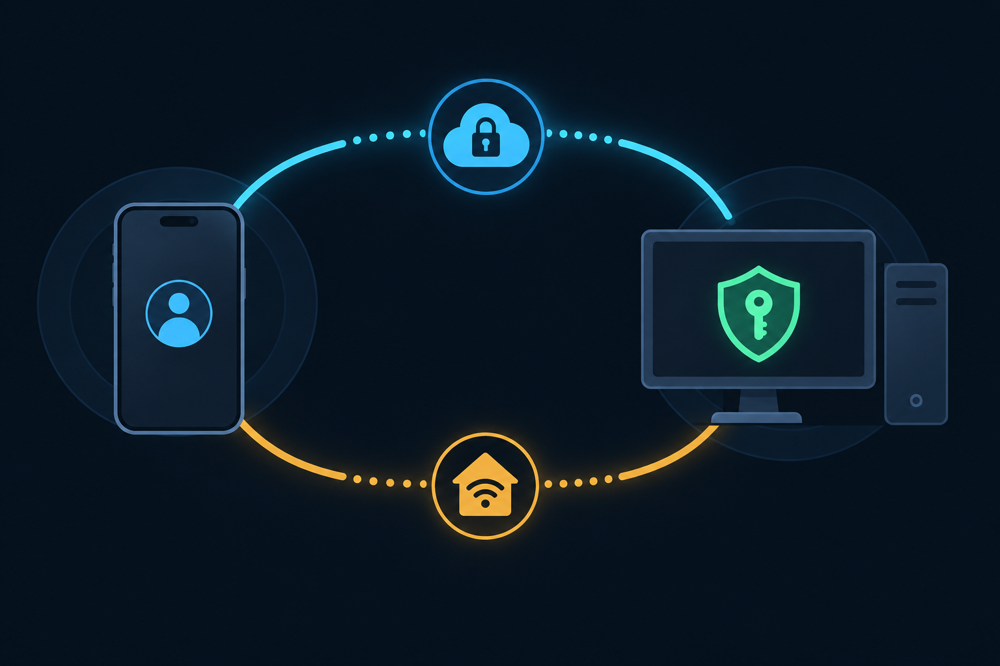
Purpose
讓使用者在離開桌面時（包含位於會擋 tunnel 的公司網路內），用手機瀏覽器或加到主畫面的 PWA 查看 Herdr Agent 狀態、觀看 pane 輸出，並在明確授權下回覆 Agent 或控制 pane；做法參考 Orca 的 Direct · Tailscale／Direct · LAN 路徑，但補上 Orca 缺少的安全控制，且不建立原生 App 與雲端 Relay。
Problem
Yuzora 目前沒有任何對外控制面：產品程式碼中沒有 HTTP／WebSocket RPC、配對、passkey、推播或 QR；唯一 TCP listener 是綁在 127.0.0.1:0 的 host tunnel（src-tauri/src/host_tunnels.rs:134）。Herdr 雖支援遠端控制，但只透過 SSH stdio bridge（herdr remote-client-bridge／remote-api-bridge），本身沒有網路 listener 或驗證，手機瀏覽器無法直接使用。
Orca 的做法可行但偏寬鬆：Direct 路徑以明文 ws://＋舊版 NaCl 加密、配對時綁 0.0.0.0（區網也暴露）、token 無期限、手機權限幾乎不設限。Yuzora 必須在「遠端控制 AI ≒ 控制電腦」的前提下提供同等可達性，同時做到：看得見、可撤銷、可稽核、每次連線皆需硬體綁定的憑證。
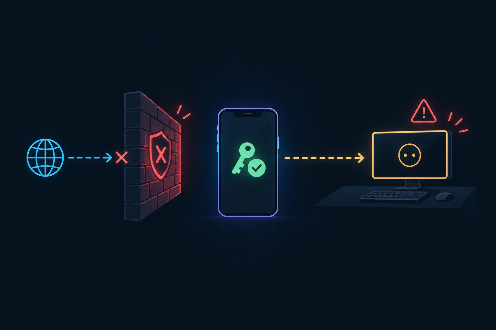
Solution
新增獨立程序 Companion gateway（新 crate src-tauri/companion，binary yuzora-companion），由 Yuzora 桌面以 Tauri sidecar 啟動並以 stdio NDJSON 管理。gateway 重用 yuzora-host library 的 HerdrManager，只把 Herdr 官方接口（API socket、terminal session observe|control、完整 client PTY）以方法白名單橋接給手機；它同時提供 PWA 靜態檔、配對、WebAuthn passkey 驗證與 session。
- Direct · Tailscale：gateway 只 bind
127.0.0.1，由tailscale serve --https=<port>轉入，取得*.ts.net有效憑證；額外核對 Serve 注入的Tailscale-User-Login。Funnel 永不開啟。 - Direct · LAN：gateway 在使用者選定的私有網段介面提供 HTTPS，憑證由 Yuzora 本機 CA 簽發（name constraints 限定
<LocalHostName>.local）；CA 私鑰只存在桌面 OS keychain；手機以https://<name>.local:<port>連線。不提供明文 HTTP 路徑。 - 身分與授權：一次性 QR＋桌面端 SAS 確認配對 → 註冊 passkey；每次連線都要 passkey（UV required）；session 為 HttpOnly cookie；權限分 view（預設）／control（桌面授權＋passkey 提權＋限時）／full session（預設關閉）。所有寫入即時通知桌面並寫入 Logs，可隨時撤銷。
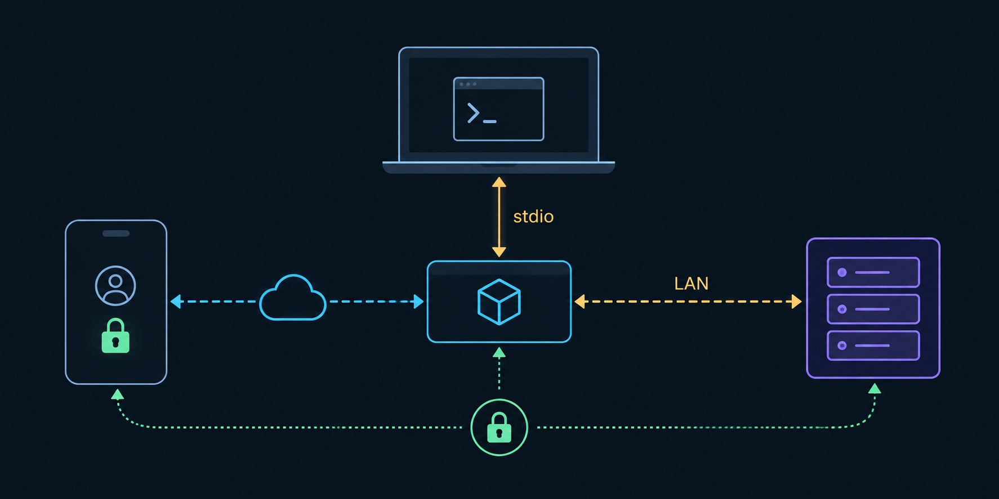
Phone (Safari / Chrome, installed PWA)
│ https://<mac>.<tailnet>.ts.net:8443 https://<LocalHostName>.local:47443
│ (tailscaled terminates TLS, adds identity) (gateway TLS, leaf signed by Yuzora local CA)
▼ ▼
yuzora-companion ── loopback HTTP 127.0.0.1:47110 ── LAN HTTPS <private-ip>:47443
├─ static PWA (allowlist, CSP) ├─ pairing + WebAuthn + sessions
├─ WS /ws → method allowlist └─ audit / control-state events ─┐
└─ HerdrManager (yuzora-host lib) ── Unix socket / named pipe ── Herdr server
│ stdio NDJSON (admin)
Yuzora desktop (Tauri) ── companion_service: spawn / init / pairing approve / revoke ◄─┘
Relevant Files
Existing Files
- existing
.yuuzu/CONTEXT.html— 權威術語（Host Runtime、Named Session、Full Session view、Host helper、Host tunnel）；需新增 Companion 相關術語。 - existing
.yuuzu/adr/0004-herdr-terminals-browser-only.html— 目前產品範圍只含 Herdr terminal＋Browser；Companion 屬新範圍，須以 ADR-0008（原 0007，2026-10-17 改號）記錄。 - existing
.yuuzu/adr/0005-native-windows-opt-in-wsl.html— 最新 runtime／host 決策，Companion 不得改變「每個工作區一個主機 authority」。 - existing
AGENTS.md— shadcn-first、ScrollArea 規則、macOS 僅 Apple Silicon 與發佈規則。 - existing
src-tauri/src/lib.rs—main_webview_commands只允許 main window 呼叫指令（49-64）、指令註冊（約 312-502）、setup 與 exit 流程；新增companion_*指令並在退出時停止 gateway。 - existing
src-tauri/src/herdr_service.rs— Tauri adapter 範式；Herdr binary 來源設定需同步傳給 gateway。 - existing
src-tauri/host/src/herdr_service.rs—HerdrManager：list_sessions、snapshot、capabilities_for_session、feature、open_terminal、events；gateway 以 library 方式重用。 - existing
src-tauri/host/src/herdr_native_client.rs—open_native_client以 portable-pty 執行herdr --session X client；拒絕遠端（70-72），完整 Herdr 模式重用。 - existing
src-tauri/host/src/herdr_transport.rs— Unix socket／Windows named pipe；#[cfg(test)]listener 可做 fake Herdr server 測試。 - existing
src-tauri/host/src/wire.rs、src-tauri/host/src/protocol.rs— bounded NDJSON framing（16 MiB 上限）與 Hello/owner 驗證範式，用於 admin stdio 通道。 - existing
src-tauri/host/Cargo.toml—yuzora-hostlibrary；companion crate 以 path dependency 引用，避免把網路依賴塞進遠端 helper payload。 - existing
src-tauri/src/host_tunnels.rs— 現有 loopback listener 與上限（16 tunnels／32 clients）範式。 - existing
src-tauri/src/host_bootstrap.rs— resource_dir 解析（349-351），sidecar／PWA 資源路徑參考。 - existing
src-tauri/src/db_credentials.rs— keyring 使用範式（CA 私鑰、VAPID 私鑰、session 簽章密鑰）。 - existing
src-tauri/Cargo.toml— 既有 tokio／rustls 0.23＋ring／reqwest（rustls）／keyring／tauri-plugin-notification；新增 rcgen、qrcode 等。 - existing
src-tauri/tauri.conf.json、src-tauri/tauri.macos.conf.json、src-tauri/tauri.windows.conf.json、src-tauri/tauri.linux.conf.json—beforeBuildCommand、bundle.resources；新增externalBin（sidecar）與companion-web資源。 - existing
src-tauri/capabilities/default.json— ACL 只授 main window；Companion 不新增任何 webview 權限。 - existing
src/app/workbench/SettingsDialog.tsx—SECTIONS（138-146）與 section 內容切換；新增companionsection。 - existing
src/app/workbench/settingsPrimitives.tsx、src/app/workbench/settings-search.ts— 設定頁 primitives 與搜尋索引。 - existing
src/app/workbench/StatusBar.tsx— 新增「行動裝置：檢視中／控制中」指示與撤銷入口。 - existing
src/workbench/HerdrNotificationBridge.tsx— 桌面通知範式（toast＋@tauri-apps/plugin-notification），用於「手機送出輸入」通知。 - existing
src/features/logs/userAction.ts—logUserAction；Companion 稽核事件寫入 Logs。 - existing
src/app/panels/HerdrTerminalPage.tsx— 被接管處理（92、1241-1243、1469）與 Full Session 時停用 connector（231-235）；確認手機接管時桌面行為正確。 - existing
src/lib/herdrTypes.ts、src/lib/herdrNormalize.ts、src/lib/herdrAgents.ts— snapshot 正規化與 Agent 狀態／注意程度排序；PWA 直接重用。 - existing
src/terminal/xtermTheme.ts、src/terminal/terminalImeHandling.ts、src/terminal/terminalImePositioning.ts（2026-10-17 更正：原寫 terminalImeInput.ts，該檔不存在） — xterm 主題與 IME 處理，PWA 終端機重用。 - existing
src/lib/i18n/index.ts、src/lib/i18n/locales/{zh-TW,en}/— i18next；新增companionnamespace。 - existing
src/components/ui/— shadcn（radix-nova）元件；桌面設定與 PWA 共用。 - existing
vite.config.ts、package.json、tsconfig.json、tsconfig.node.json、eslint.config.js— 新增 PWA build entry、scripts 與 lint／typecheck 涵蓋。 - existing
scripts/verify-host-resources.ts、scripts/release-contract.ts— 資源驗證與發佈契約；需涵蓋 sidecar 與 PWA bundle。 - existing
.github/workflows/ci.yml、.github/workflows/host.yml、.github/clippy-baseline.json、.github/scripts/verify-clippy-baseline.rb— CI 閘門；新增 companion crate 的 fmt／clippy／test。 - existing
docs/operations.md、README.md、README.zh-TW.md、CHANGELOG.md— 使用與維運文件、Experimental 標示與「等同授予遠端 shell 權限」警語。
New Files
- new
.yuuzu/adr/0008-companion-pwa-direct-connections.html（2026-10-17 由 0007 改號；權威副本在主樹）— 範圍、威脅模型、直連路徑與拒絕方案（Relay、明文 LAN、Funnel、原生 App）。 - new
spikes/companion-direct/— Phase 0 一次性驗證（WebAuthn／PWA／本機 CA／.local／Herdr 多 client 行為）；不進產品 bundle。 - new
src-tauri/companion/Cargo.toml、src-tauri/companion/Cargo.lock— 獨立 crate（與 host 相同的獨立 lock 慣例），path 依賴../host。 - new
src-tauri/companion/src/main.rs— 進入點：讀 admin stdio 的init、啟動 listeners、graceful shutdown。 - new
src-tauri/companion/src/admin.rs— 桌面 ⇄ gateway 的 NDJSON admin 協定（init、pairing、device、revoke、audit、control-state）。 - new
src-tauri/companion/src/git_bridge.rs、src-tauri/companion/src/spaces.rs（2026-10-17，Phase 3D）— Git 唯讀 closed mapping（重用 hostgit_command與 trust gate）與 Spaces 投影。 - new
src/companion/app/git/、src/companion/app/spaces/（2026-10-17，Phase 5）— Git status／diff／log graph／commit detail 與 Spaces 瀏覽畫面。 - new
src-tauri/companion/src/http.rs— axum router、靜態檔 allowlist、安全標頭、body 上限。 - new
src-tauri/companion/src/guard.rs— Host／Origin 驗證、Tailscale 身分 header、私有來源位址檢查、速率限制。 - new
src-tauri/companion/src/pairing.rs— 一次性配對密鑰、TTL、SAS、桌面核准狀態機。 - new
src-tauri/companion/src/webauthn.rs— passkey 註冊／登入（UV required）、challenge 單次使用、signCount 檢查。 - new
src-tauri/companion/src/session.rs— cookie session、idle／absolute TTL、提權（control／full）與撤銷即斷線。 - new
src-tauri/companion/src/bridge.rs— WS RPC、Herdr 方法白名單、observe／control stream、背壓與上限。 - new
src-tauri/companion/src/full_session.rs— 完整 Herdr（PTY client）模式，預設關閉。 - new
src-tauri/companion/src/tls.rs— LAN listener 的 tokio-rustls 設定（僅使用桌面傳入的 leaf cert／key）。 - new
src-tauri/companion/tests/— guard、pairing、webauthn、bridge allowlist、fake Herdr 整合測試。 - new
src-tauri/src/companion_service.rs— sidecar 生命週期、admin 通道、Tauri 指令與事件。 - new
src-tauri/src/companion_tailscale.rs— Tailscale CLI 偵測、status/serve status --json解析、經確認後設定／移除 serve。 - new
src-tauri/src/companion_ca.rs— rcgen 本機 CA（name constraints）與 leaf 簽發、keyring 保存、CA 匯出（.mobileconfig／.crt）。 - new
src-tauri/src/companion_devices.rs— devices.json（只存公鑰、credential id、授權與時間戳）持久化。 - new
src-tauri/src/companion_push.rs— VAPID 金鑰（keyring）與 RFC 8291 Web Push 發送（Phase 7）。 - new
src/lib/companionIpc.ts、src/state/companionStore.ts— typed invoke 包裝與桌面狀態。 - new
src/app/workbench/CompanionSettingsSection.tsx— 設定頁：啟用期限、路徑卡片、裝置清單、授權與撤銷。 - new
src/app/workbench/CompanionPairingDialog.tsx、src/app/workbench/CompanionApprovalDialog.tsx— QR 配對與 SAS 核准（shadcn Dialog／AlertDialog）。 - new
src/app/workbench/CompanionStatusIndicator.tsx、src/workbench/CompanionBridge.tsx— 狀態列指示、稽核事件轉通知與 Logs。 - new
src/lib/i18n/locales/zh-TW/companion.json、src/lib/i18n/locales/en/companion.json— 桌面端字串。 - new
companion/index.html、vite.companion.config.ts— PWA 獨立 build entry，輸出至src-tauri/resources/companion-web/（gitignore）。 - new
src/companion/main.tsx、src/companion/app/— PWA 畫面：Pair、Login、Home、Pane、Control、Full Session access、Settings。 - new
src/companion/rpc/client.ts、src/companion/auth/webauthn.ts— WS RPC client（重連不重送輸入）與 WebAuthn 呼叫。 - new
src/companion/terminal/TerminalView.tsx、src/companion/terminal/KeyAccessoryBar.tsx— xterm.js 檢視（縮放／平移）與按鍵列。 - new
src/companion/sw.ts、companion/public/manifest.webmanifest、companion/public/icons/— Service Worker（只快取 app shell）、manifest 與圖示。 - new
src/companion/i18n/{zh-TW,en}.json— PWA 字串。 - new
scripts/build-companion.ts、scripts/verify-companion-bundle.ts— 建置 sidecar＋PWA、驗證無外部 URL／inline script、檔案清單與大小。 - new
.github/workflows/companion.yml— companion crate 的 fmt／clippy-D warnings／test（macOS、Windows、Linux）。
Implementation Phases
IMPORTANT: Execute every phase and task step by step, in order, top to bottom.
Status markers: [] idle · [wip] in progress · [x] complete · [f] failed. All start as []; the Build Plan workflow updates them as it works.
git add／commit／push、不得啟動瀏覽器／E2E 自動化、不得對使用者日常 Herdr session 送出任何 mutation。Herdr 相關實驗一律使用獨立 named session（例如 companion-spike）。2026-10-17 使用者裁決與修訂（優先於下方 2026-09-28 狀態）
- 範圍：HERDR Agents（view／control／full 不變）＋Git 純唯讀（status、diff、log graph、commit detail、branches，不提供 stage、commit、push）＋Spaces 只瀏覽（HERDR workspaces 的投影；手機端可以切換畫面，但不建立、改名或關閉，也不改變桌面狀態）。見 D10、D12 與新的 Phase 3D。
- 路徑：只做 Direct · Tailscale；Direct · LAN 延後（Phase 6 保留原文，不執行）。綁定流程由桌面發起（D13）：偵測 Tailscale → 使用者確認後設定 serve → 顯示 QR → 手機 PWA 掃描 → 桌面確認 SAS → 註冊 passkey。
- GPUI：使用者裁決「GPUI 計畫先暫停，但不是不做」，原 ADR-0006 blocker 解除。Phase 4 沿用 Tauri＋React，Phase 5 PWA 可以用 React＋Vite；共用模組維持純 TS（D14）。
- 照預設推進（使用者未逐項裁決）：HERDR 最低 0.9.2（D15）；tagged 手機一律拒絕；O2 維持 provisional；O4 維持 none／self；CT log 警語納入 Phase 4／8。
- 研究修訂：D8 改為「強制的縱深防線，不是 peer 驗證」；whois 在 serve 架構下不可用；Phase 4.3 區分 Tailscale 版本；
terminalImeInput.ts更正；ADR 改號 0008。依據主樹.yuuzu/specs/remote-control-orca-tailscale-delta-2026-10-17.html。 - 仍未解除的 blockers：Host pipe／PTY input/release 沒有 timeout；六筆 Host TLS advisory（origin/main f790d1c3 仍為 rustls 0.21.12、rustls-webpki 0.101.7、rustls-pemfile 1.0.4，來源是 vendored tiberius；2026-10-17 新公告的 RUSTSEC-2026-0346／0349 也命中 rustls 0.21.12，0.21 沒有修補版，所以從四筆變成六筆）；Spike A 手機實機（Tailscale）；原生 Windows／Linux 與桌面實機驗收；獨立 reviewer gate。新增前置工作：Phase 3C 移植到 v0.0.19。
本輪完成狀態（2026-09-28）
- 已完成：Phase 1
[x]；Phase 2配對／WebAuthn／session／提權及Phase 3A／3B-1／3B-2 gateway路徑已實作。df201412複審為OK with notes；本輪修P2-N1…N3、同步ADR-0007（仍Proposed），收尾仍須獨立reviewer gate。 - 待驗／延後：Phase 0
[wip]（手機／Tailscale／LAN矩陣、ADR最終驗收）；Phase 2[wip]（O2 provisional預設待使用者確認、四筆Host TLS advisories）；Phase 3[wip]（尺寸恢復策略、desktop connectors暫停／恢復、Windows／Linux native與Host測試待驗）。Host可取消API、stderr reader join、stopped-connect有界re-list與bytes/s policy另案；LAN Phase 6、push.subscribe Phase 7。 - Blockers不變：Host pipe／PTY input/release無timeout阻擋Phase 4／release，須驗永久不讀fake仍可bounded kill/reap及permit回收；四筆Host TLS advisories、ADR-0006／GPUI裁決、Spike A手機閘門及原生跨平台／桌面實機驗收未解。Phase 4／5 blocked badges保留；不把fake／loopback綠燈當作發佈許可。
[wip] Phase 0: 決策文件與可行性閘門（Spikes）
在寫任何產品程式碼之前，先把範圍與威脅模型寫進 ADR，並以一次性 spike 在真實手機上驗證兩條路徑最關鍵的平台前提：secure context、PWA 安裝、WebAuthn RP ID、以及 Herdr 多 client 行為。Tailscale 路徑任一目標平台失敗即停止並回到規劃；LAN 路徑失敗只將該平台標為不支援，不提供較弱替代方案。
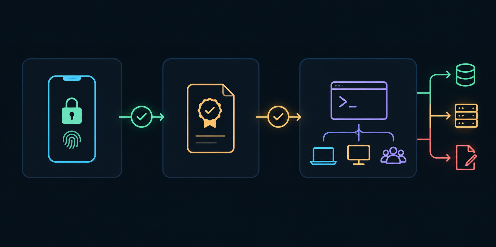
0.1. ADR-0007 與術語
[x]建立.yuuzu/adr/0007-companion-pwa-direct-connections.html（Proposed）：範圍（本機 owning host、兩條直連路徑）、安全前提（遠端控制 AI ≒ 帳號 shell 權限）、權限模型、拒絕方案、驗證方式；格式對齊 ADR-0005（zh-Hant、單頁 HTML）。[x]在.yuuzu/CONTEXT.html新增術語：Companion device、Companion gateway、Direct path（Tailscale／LAN）、Pairing（含 SAS）、Control grant、Elevation、Full Session access；每個術語標註「避免」用語。
0.2. Spike A — Direct · Tailscale：PWA 與 passkey
[x]在spikes/companion-direct/tailscale/建一次性靜態伺服器（bun，僅 bind127.0.0.1:47110），頁面含 manifest、最小 Service Worker、WebAuthn create／get 測試、Notification 權限按鈕，並回顯請求的Tailscale-User-Login／Tailscale-User-Name。[]由使用者在測試機執行tailscale serve --bg --https=8443 http://127.0.0.1:47110（需先在管理後台啟用 HTTPS 憑證）；確認tailscale funnel status未開放該 port。 （待使用者實機）[]真機驗證 iPhone Safari（iOS 17+，加到主畫面）與 Android Chrome：secure context、PWA 安裝、SW 註冊、passkey 建立／登入（RP ID＝<device>.<tailnet>.ts.net，UV 提示）、Notification 權限、身分 header（含 RFC 2047 編碼）。 （待使用者實機）[]驗證來自 tagged device 或 share 使用者的請求：前者無身分 header、後者 login 不同，均能被拒絕。 （待使用者實機）[]收尾：tailscale serve --https=8443 off，記錄tailscale status --json與serve status --json實際欄位（Self.DNSName、User／LoginName、CertDomains、BackendState）作為 Phase 4 fixture。 （待使用者實機）
0.3. Spike B — Direct · LAN：本機 CA 與 .local
[x]產生 ECDSA P-256 CA：basicConstraints CA:true pathlen:0、critical nameConstraints 僅允許 DNS<LocalHostName>.local；簽一張該名稱的 leaf，另簽一張其他名稱的 leaf 作反例。[]iOS：以 .mobileconfig 安裝並於「憑證信任設定」開啟完全信任；Android：安裝使用者 CA。雙平台以 AirDrop／Nearby Share／USB 傳檔，並比對 SHA-256 指紋。 （待使用者實機）[]真機驗證：.local名稱解析、TLS 信任、反例 leaf 被 name constraints 拒絕、secure context、SW、passkey 以 RP ID<name>.local建立／登入。 （待使用者實機）[]驗證 Windows（mDNS hostname 回應）與 Linux（avahi）是否能被手機以.local解析。 （待使用者實機）[]產出「LAN 支援矩陣」（平台 × 項目 → 通過／失敗與原因），寫入本計畫 Amendments 與 ADR-0008。（2026-10-17：LAN 延後，本項暫停） （待使用者實機）
0.4. Spike C — Herdr 多 client 語意（獨立 session）
[x]建立獨立 named sessioncompanion-spike；所有操作只針對它，完成後停止並刪除。[]桌面 Yuzora control 某 pane 時：另開herdr terminal session observe→ 確認可同時觀看且不影響尺寸。 （CLI control A＋observe B 同收 frames、不改 PTY 尺寸已完成；Yuzora UI 尚未驗收。）（待使用者實機）[]無--takeover的 control → 記錄錯誤字串（預期terminal attach failed: … already has an attached client; retry with --takeover）；加--takeover→ 確認 Yuzora 顯示「已由其他視窗取得控制」且不會自動搶回。 （CLI 衝突／接管字串與 A 不重搶已完成；Yuzora 提示尚未驗收。）（待使用者實機）[]control 以 pane 目前 cols／rows 連線 → 確認不觸發桌面重新排版；以較小尺寸連線 → 記錄 reflow 行為。 （headless 已驗；Yuzora 桌面待使用者實機。已測得小尺寸 control 改 PTY，layout rect 可保持原尺寸；詳 Spike C REPORT。）[x]observe 以手機視窗尺寸（例如 44×30）連線 → 記錄收到的畫面是裁切、縮放或其他，決定 PWA 的 cols／rows 策略。[x]在 PTY 執行herdr --session companion-spike client（寬 44 欄）→ 確認手機單欄版面啟動；對某 tab 輸入後觀察 tab 幾何被搶（桌面 connector 的影響與direct_attach_resize_locks互動）。 （已驗證 mobile chrome 與 geometry claim／resize lock；BSP panes 仍並排，不代表所有 pane 單欄。）[x]session 停止時各接口的錯誤行為（不得自動啟動 server 或 session）。
0.5. 依賴選型閘門
[x]WebAuthn RP 驗證套件：不得依賴 OpenSSL；可編譯於aarch64-apple-darwin、x86_64-pc-windows-msvc、Linux x86_64／aarch64；授權相容；支援 ES256／EdDSA／RS256、UV 旗標、BE／BS 旗標。若無合格套件，停止並回報，不自行手刻完整 WebAuthn。 （選定 webauthn_rp =0.3.0；macOS 實編譯／ES256 正負向測試通過，Windows／Linux 僅完成 target dependency trees，原生編譯待 CI。）[x]HTTP／WS：axum（ws）或 hyper＋tokio-tungstenite，與 tokio 1、rustls 0.23（ring provider）相容；TLS：tokio-rustls。[x]憑證：rcgen（ring backend，可產生 critical nameConstraints）；QR：Rustqrcode（輸出 SVG）；Web Push：純 Rust 的 RFC 8291／8292 實作候選。[x]將選型與理由寫入 ADR-0007；確認新 crate 的cargo tree -i openssl無任何相依。
0.6. Testing Strategy
本階段以真機手動驗證為主（由使用者執行，代理提供步驟與預期結果，不得宣稱已完成實機驗證），並以文件存在性與依賴樹檢查作自動化佐證。任何 Tailscale 路徑的 passkey 或 secure context 失敗都是停止條件。
[]manual: Spike A 結果表（iOS／Android × secure context／PWA／SW／passkey／identity header）全數通過— Tailscale 路徑前提成立。 （待使用者實機）[]manual: Spike B LAN 支援矩陣已記錄— LAN 路徑在各平台的支援範圍已知。 （待使用者實機）[x]manual: Spike C 行為紀錄（observe／control／takeover／geometry／stopped session）— bridge 策略有實證依據。 （已完成隔離 CLI／PTY 行為紀錄；不含真實 Yuzora UI／手機驗收。）[x]rg -n "Proposed|Accepted" .yuuzu/adr/0007-companion-pwa-direct-connections.html— ADR 已建立。[x]rg -n "Companion gateway" .yuuzu/CONTEXT.html— 術語已加入。[x]herdr session list --json— 確認companion-spike已刪除；以隔離路由證明未對 live 送命令；live 目錄僅比對 metadata。 （僅以 isolated-herdr.sh 執行，fixtures 已證明刪除；收尾不重跑，絕不呼叫 live Herdr。）
[x] Phase 1: Companion crate 骨架、admin 通道與 HTTP 安全外殼
建立獨立 crate src-tauri/companion（binary yuzora-companion），以 path 依賴重用 yuzora-host library，而不把網路依賴加進會部署到遠端主機的 helper。本階段只完成程序生命週期、admin stdio 協定、loopback listener、靜態檔與所有請求層防護；尚不接 Herdr、不做驗證。
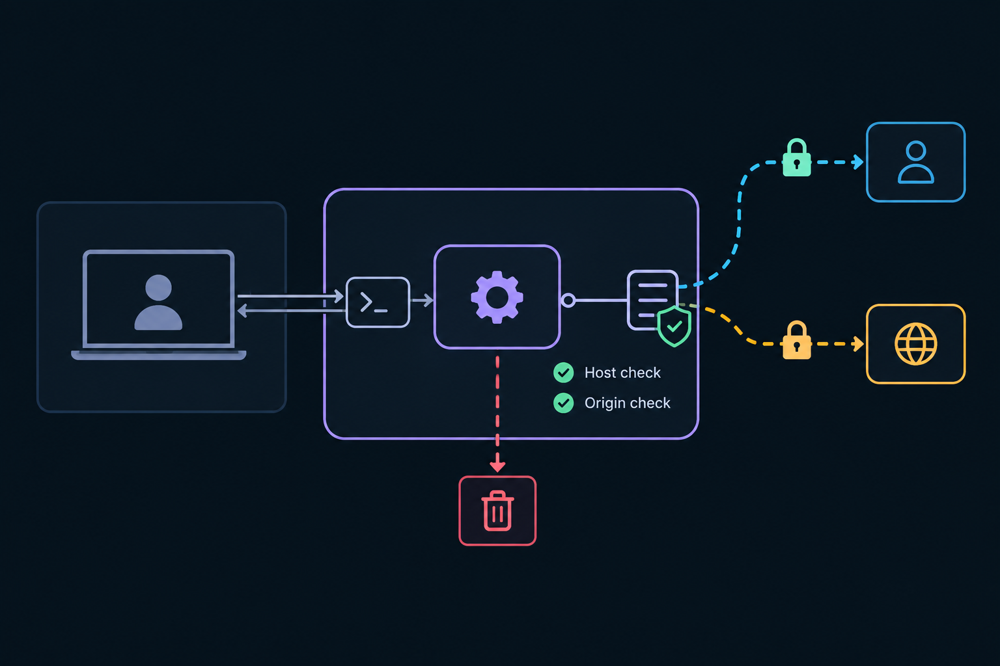
1.1. Crate 與程序生命週期
[x]新增src-tauri/companion/Cargo.toml（獨立Cargo.lock，與 host 相同慣例）、#![forbid(unsafe_code)]、edition 2021、版本與 app 一致。[x]stdout 專供 admin 協定，所有日誌寫 stderr；啟動後 5 秒內未收到init即以非零碼結束。[x]stdin EOF（桌面結束或崩潰）→ 關閉 loopback listener 與 HTTP 連線後結束，不留孤兒 listener；Herdr stream 尚未建立，其 teardown 於 Phase 3 接入。[x]收到shutdown→ 關閉 loopback listener 與 HTTP 連線、2 秒內結束；Phase 1 不開 WS，close code 1001 於 Phase 3 落實。
1.2. Admin stdio 協定（admin.rs）
[x]NDJSON、每行{"v":1,"type":…}；共用yuzora_host::protocol::MAX_FRAME_BYTES的 16 MiB 上限，以 companion-localread_frame_zeroizing讀取，不直接沿用 host read_frame。兩階段解析先讀Envelope {v,type}、優先拒絕不支援版本，再由原 frame 直接解析具體命令（deny_unknown_fields），輸入不經 flatten／serde Content；未知 type 回error並保持連線。[x]init欄位：herdrBinary、sessionAllowlist、webRoot、listeners.loopback{port, publicHost, requiredTailscaleLogin}、listeners.lan{binds[], port, publicHost, certPem, keyPem}（Phase 6 前為 null）、devices[]、policy{enableUntil, viewIdleMin, viewAbsoluteHours, elevationMaxMin, fullSessionEnabled, maxDevices}。[x]gateway→desktop 事件：ready{ports}、error{code, message}，並預留pairing.claimed、device.registered、session.opened|closed、audit、control.state、push.request。[x]certPem／keyPem使用 Zeroizing String；frame 目前配置、成長時被取代的配置與錯誤／取消路徑均由 Zeroizing owner 擦除，成長時另配新 owner、複製後擦除舊 owner，避免含秘密的 Vec 自行 realloc。不得寫入磁碟或日誌；serde_json unescaped-string scratch、Tokio stdin blocking buffer、BufReader buffers 仍可能留下未擦除副本，不保證全程序或 allocator 已釋放記憶體清零。[x]stdout 僅建立一次，由單一 writer task 持有；事件經 bounded mpsc（容量 64）FIFO 排隊，逐筆完整 write＋flush。HTTP handler 使用非阻塞EventSender::try_emit，true 只代表已入列、不代表已寫出；main 的 lifecycle ready／error 才使用等待入列與 flush ACK 的emit，不再把排隊時間算作 stdout 故障。只有 writer 對每筆 write＋flush 設 1 秒期限；寫出錯誤／逾時令 writer 結束，gateway 監督 queue closed 並關閉 listener，以固定 stderrCompanion admin stdout unavailable回報；關閉時仍 bounded join。
1.3. Loopback listener 與請求防護（http.rs、guard.rs）
[x]僅 bind127.0.0.1:<port>（預設 47110，可設定）；port 被占用時回報error{code:"port-in-use"}，不自動換 port（Serve 設定指向固定 port）。accept 的連線類暫時錯誤立即重試，其餘錯誤退避 50 ms 且仍可 shutdown，不因單次 accept 錯誤結束 gateway。[x]init 的publicHost只接受 canonical form：host 小寫、無尾端 dot、不含預設:443、port 字串須等於數值標準字串（無前導零）；Origin 只從此值建立。請求 Host 必須匹配（DNS 大小寫不敏感、port 精確比對），否則 421；阻擋 DNS rebinding。[x]loopback 上每個請求都必須帶Tailscale-User-Login且（RFC 2047 解碼後）等於requiredTailscaleLogin，否則 403；此 header 只作為額外訊號，不取代 passkey。[x]非 GET 請求與 WS upgrade 必須帶Origin且等於https://<publicHost>，否則 403（防 CSWSH）。[x]唯一.fallback(handle)維持guard → body → dispatch → uniform headers；同一Routetable 宣告 method／path／required_scope／deadline。tests/contracts.rs掃描 src/，禁止.route(、.nest(、.merge(、.route_service(、.nest_service(，新增端點不得繞過入口。Phase 2 auth 完成前，任何已匹配且required_scope.is_some()的 handler 一律 fail-closed：403／固定Authentication required、安全標頭與 no-store；有效 Host／login／Origin 也不能通過。[x]上限：body 64 KiB、header 64 個／16 KiB；header 15 秒、body collection 15 秒、handler 預設 15 秒／LongPoll class 26 秒（尚無 long-poll endpoint）；非-upgrade connection 存活 60 秒時呼叫 hypergraceful_shutdown()，停用 keep-alive、立即關閉 idle 連線，允許進行中的請求與 response 完成；再給最多 60 秒 grace（15＋15＋26＋4 秒 margin），屆滿才硬斷，permit 持有至結束。slow-reader 最遲受 60＋60 秒界限回收；pinned Hyper 的 keep-alive idle 仍約 15 秒由 header deadline 回收。[x]body 錯誤沿 source chain 辨識：只有 LengthLimitError 或 Content-Length 超限回 413／Request body too large；其他 transport／格式錯誤回 400／Invalid request body，不回顯細節。[x]Phase 1 單一允許 login／loopback 共用 token bucket（burst 60、每秒補 10），不信任 X-Forwarded-For；尚非每 IP 分桶，Phase 2 拆 auth／pairing 與靜態資產，Phase 6 再設 LAN 有界來源表。HTTP admin 事件採try_emit_event／try_emit，滿佇列或 writer 已結束即回 503／固定Admin event queue unavailable，不得在 handler 等待 stdout ACK；目前 shell 尚無需發事件的 production endpoint，Phase 2 須在提交操作前使用此 helper，經同一入口套用安全標頭／no-store。
1.4. 靜態檔與安全標頭
[x]只允許/、/index.html、/assets/*、/manifest.webmanifest、/sw.js、/icons/*、/pair（回傳 index）；每段須符合[A-Za-z0-9_-][A-Za-z0-9._-]*且不能尾端 dot，保留禁止..；拒絕所有百分號、反斜線、NUL、dotfiles、ADS，跨平台拒絕 Windows 保留裝置 stem（含 extension）。canonicalize 後必須位於webRoot內（拒絕逃逸的 symlink）。[x]靜態檔只接受 regular file、metadata 長度 ≤16 MiB，以ReaderStream串流並 take 已驗證長度；既有 MIME 外補齊.map .woff .jpg .jpeg .txt .wasm。webRoot 必須是可信、穩定的 bundle；canonicalize→open 不防同帳號惡意換檔。[x]快取：/assets/*immutable；index.html、sw.js、manifest 為 no-cache；/api/*為no-store。[x]gateway router 產生的所有回應（含錯誤；hyper pre-router parser 自行拒絕的 400／408／431 例外）：Content-Security-Policy: default-src 'self'; script-src 'self'; style-src 'self' 'unsafe-inline'; img-src 'self' data: blob:; connect-src 'self'; worker-src 'self'; manifest-src 'self'; frame-ancestors 'none'; base-uri 'none'; form-action 'none'、X-Content-Type-Options: nosniff、Referrer-Policy: no-referrer、Cross-Origin-Opener-Policy: same-origin、Cross-Origin-Resource-Policy: same-origin、Permissions-Policy: camera=(), microphone=(), geolocation=()、Strict-Transport-Security: max-age=31536000。
1.5. Testing Strategy
Rust 整合測試以 ephemeral port 起真實 listener，搭配表格化的惡意請求；另以子程序測試 init 逾時與 stdin EOF。邊界：大小寫與 RFC 2047 編碼的 login、IPv6 Host、重複 Host header、缺 Origin 的 WS。本輪 N1–N6 follow-up 在 macOS Apple Silicon 最終連續兩輪各 48 tests passed（8 lib unit＋2 main unit＋10 admin＋6 contracts＋15 HTTP＋7 lifecycle），fmt／clippy 通過；前輪另有 11 version tests passed（本輪未重跑）。Windows／Linux native CI 與獨立 reviewer gate 仍待執行。
覆蓋 route-inventory guard、long-poll deadline、涓流 header、keep-alive idle、slow-reader permit 釋放、stdout 併發完整行、zeroizing growth 邊界、canonical Host／Origin 反例、ADS／MIME 與 body 400／413。新增 lifetime 前重用 keep-alive 的完整回應／idle 立即關閉、scope fail-closed、唯一 fallback 契約、queue full 非阻塞／503、慢而存活 stdout／ACK 與 broken writer 關閉 gateway 回歸；8 組 mutation 均驗得 red→green。source／lock／workflow 文字先正規化 CRLF，含禁用套件 CRLF 反例。permit 釋放最多重試 2 秒、rate 成功數下限 60、上限 60 + ceil(elapsed_secs × 10) + 1，burst=150 mutation 仍失敗；close 容許 ConnectionReset／ConnectionAborted，僅 Windows oversized-body 案例容許遺失 413，原生平台行為待 CI。
[x]cargo fmt --manifest-path src-tauri/companion/Cargo.toml -- --check— 格式一致。[x]cargo clippy --locked --all-targets --manifest-path src-tauri/companion/Cargo.toml -- -D warnings— 零警告。[x]cargo test --locked --manifest-path src-tauri/companion/Cargo.toml guard_— Host／Origin／身分 header／速率限制測試通過。[x]cargo test --locked --manifest-path src-tauri/companion/Cargo.toml static_— 路徑穿越、symlink 逃逸、快取與安全標頭測試通過。[x]cargo test --locked --manifest-path src-tauri/companion/Cargo.toml lifecycle_— init 逾時、stdin EOF、shutdown 測試通過。[x]Phase 1 不啟用 axumws，Phase 3 才重新加入；本機亦確認tungstenite／sha1不存在。[x].github/workflows/companion.yml使用pull_request＋workflow_dispatch（無 push），paths 包含src-tauri/vendor/tiberius-0.12.3-yuzora/**；三平台 fmt／clippy／test。CI loop 逐一對openssl openssl-sys aws-lc-sys aws-lc-rs native-tls執行cargo tree --locked --manifest-path src-tauri/companion/Cargo.toml -i "$p"，每項必須失敗且輸出含did not match any packages，其他 cargo failure 不算通過。[x]版本一致性檢查已涵蓋src-tauri/companion/Cargo.toml及 companionCargo.lock的yuzora-companion／yuzora-hostentries；bun run check:version與 11 個版本測試通過。.gitignore已加入 companion target。
版本／release checklist：每次 bump 必須同步 companion Cargo.toml 與其 Cargo.lock 的 companion／host entries；release runbook（docs/operations.md）同步仍屬後續 parent／Phase 8 範圍，本輪只更新計畫。
[wip] Phase 2: 配對、passkey 與 session
實作一次性 QR 配對、雙端 SAS 比對與桌面核准，接著註冊 passkey；之後每次連線都必須通過 passkey（UV required）才取得 HttpOnly session cookie 與 origin-scoped binding。寫入權限需桌面授權的 control grant，並在授權期限內以 passkey 提權。
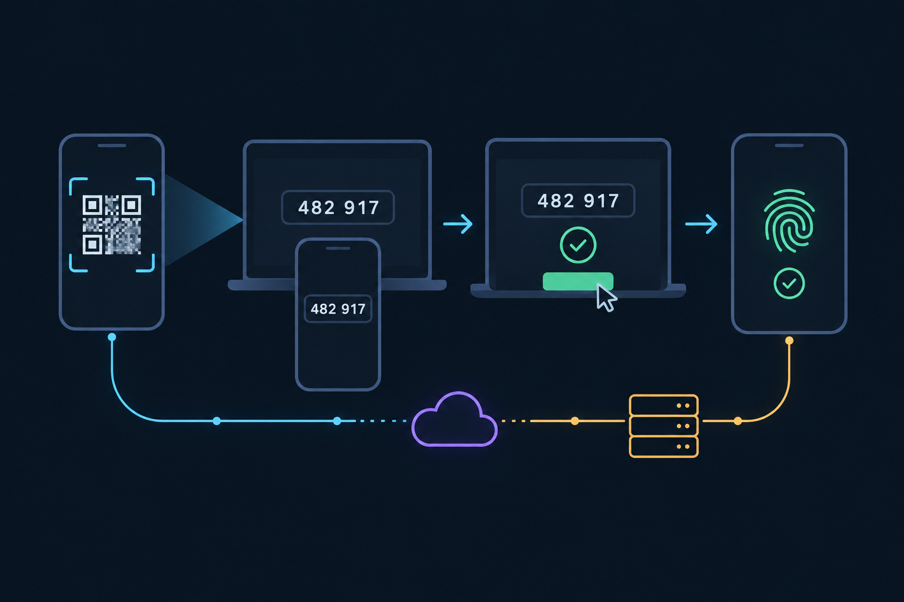
Phase 2A 已完成下列配對／typed devices／policy／session infrastructure；Phase 2B 已接 webauthn_rp =0.3.0 verifier、登入發行 session、passkey 提權與供應鏈 CI；供應鏈閘門仍因既有 Host MSSQL TLS 四筆公告而未通過，Phase 2 維持 [wip]。O2 僅為 provisional 預設，仍待使用者確認。
2.0. 前置：沿用 Phase 1 安全邊界
[x]新端點必須加入同一Routetable，宣告 method／path／Access::Public 或 Access::Session(Scope)／deadline，落實 session 驗證（登入發行僅在 verifier 成功後；無 binding 回401、有效 session 無 grant／policy 不允許回403 Scope not granted，有 grant 但提權不足回403 Elevation required）並經guard → body → dispatch → uniform headers；/api/*維持 no-store，更新 route-inventory guard test，列舉所有端點的缺 Host／login／必要 Origin 拒絕案例。header／body 各 15 秒，不因 long-poll 延長。[x]/api/*GET 也要求 exact Origin 或Sec-Fetch-Site: same-origin；state-changing 操作一律不得使用 GET。[x]靜態資產與 auth／pairing 使用分離固定大小 rate buckets（各 burst 60、10/s，不信任 forwarded IP），pairing 另有失敗 5 次作廢計數器；Phase 6 LAN 必須設 per-listener／per-IP 有界表，不與 Tailscale 共桶，避免未驗證 LAN 流量耗盡 Tailscale 額度。[x]解析並執行policy.enableUntil，到期 gateway 自行關閉 listener 與所有 HTTP connections、送error{code:"policy-expired"}並非零退出；wall-clock＋monotonic floor 防時鐘倒退延長期限。devices改為嚴格 Device／CredentialRecord／Grants 結構。policy TTL 可縮短但不得超過 idle 30 分／absolute 12 小時／elevation 15 分；passkeyBinding: o1|o2|o3缺省 o2，2A 僅保存，2B 驗證。HTTP 並行 admin 事件沿用 Phase 1 單一 stdout writer，不另開 stdout。
2.1. 配對建立與領取（pairing.rs）
[x]pairing.create{path, addToDevice?: deviceId}：pairingId（16 bytes）、secret（32 bytes）、TTL 5 分鐘、綁定該路徑的 origin；回傳https://<publicHost>/pair#p=<pairingId>.<secret>（URL 的 secret 只在 fragment；領取時只經 POST body 傳入，不在 query／日誌）。2A 僅接受 tailscale，lan 固定拒絕；最多 4 個 live pairings、16 筆 bounded records。[x]POST /api/pair/claim {pairingId, secret, deviceLabel, deviceNonce}：常數時間比對；每個 pairing 只接受一次成功領取，失敗 5 次或第二次領取即作廢並通知桌面。成功回 32-byte base64url claimToken，只存 SHA-256 並綁 pairingId；queue full 回固定 503、不提交成功領取；作廢／到期即使 queue full 仍 fail-closed，待 maintenance 重試通知。[x]SAS＝HMAC-SHA256(secret, "yz-sas-v1" ‖ deviceNonce ‖ gatewayNonce) 以 decoded 32-byte nonces 計算；由左至右捨棄 digest bytes 250–255，其餘取 %10，前 6 位數（各 digit 25 個 preimages，無 modulo bias；不足則以追加 u32-BE counter 的 HMAC 延伸）。回傳手機顯示，並以pairing.claimed{pairingId, deviceLabel, sas, via:"tailscale", tailscaleLogin, userAgent}送桌面，不把 loopback address 誤當手機位址。[x]桌面pairing.approve|reject|cancel{pairingId}；cancel 對手機為 rejected。手機以POST /api/pair/status {pairingId, claimToken}等待（long-poll ≤25 秒，Route 26 秒；每 pairing 1、global 8 個 permits）。25 秒未決回 pending，不使 pairing 作廢；5 分鐘未核准才 expired。核准後 status 每次輪替一張 32-byte base64url registrationTicket（只存 SHA-256、綁 pairingId＋deviceLabel、舊票立即失效、單次使用、TTL 2 分鐘），整體註冊視窗自 approve 起最多 10 分鐘；消耗後進入可取消的 registering，不再發票；若 options 的 target 驗證／challenge insertion 失敗，只對同一未取消／未過期 context 回復 Approved，保留原 approve+10分鐘視窗、舊票作廢，status 可重取 fresh ticket；Registration 保存 pairingId／deviceLabel／started_at／deadline，deadline=min(consume+120秒, approve+10分鐘)。Pending／Approved／Registering 均可 cancel／reject → rejected 並清除票及 registration context；到期 → expired。registered 僅代表 2B finish 原子完成（2B 真 verifier 成功後持 pairing→identity locks 完成；test-only stub 不作 production verifier）。approve 在同一 entry lock 下重查 expiry。
2.2. Passkey 註冊與登入（webauthn.rs）
[x]2A 已加入 typedpolicy.passkeyBinding: o1|o2|o3，缺省 o2（provisional，仍待使用者確認）；2B 依政策設定各 scope 的backup_requirement。O1 所有 scopes 要求 BE=0，O2 view 接受任何 UV passkey／control 與 full 要求 BE=0，O3 接受任何 UV passkey。[x]明確設定 webauthn_rp 選項，不依賴 Default：rp.id 與 Origin 唯一來源為 Phase 1 驗證後的 canonical publicHost；rp.id 去掉 port，allowed_origins僅含該路徑完整https://<publicHost>（保留非預設 port）；user.id 每裝置隨機 16 bytes；明建 user.name="yuzora-companion"，displayName 採已驗證 device label；library Nickname 轉換失敗或正規化改變原字串時省略 display_name（wire 為空字串），不新增 label 限制、不手改序列化 JSON；首 credential 的residentKey: required（discoverable login）；額外 credential 經新配對addToDevice，residentKey preferred 並 excludeCredentials 列既有 RP credentials、userVerification: required、attestation: none；依 parent 裁決明確清除credProtect（每次仍 UV required），不沿用隱含預設。演算法 ES256／EdDSA／RS256；challenge 128-bit（由 webauthn_rp 以 CSPRNG 產生，符合 WebAuthn L3 §13.4.3 建議 ≥16 bytes），單次使用，TTL 明設120000 ms。[x]驗證通過後送device.registered{device}（完整 Device snapshot）；額外憑證≤8，送device.updated{device}，兩者 widening／enqueue-first。Credential 欄位{id, publicKeyState, stateFormat:"webauthn_rp-0.3.0-static", rpId, signCount, backupEligible, backupState, transports}；publicKeyState 是 library StaticState binary 的 base64url，不是 COSE，decoded≤2058 bytes、library Decode＋key validation，格式不符拒絕整筆 init device。升 verifier 前須遷移或重新註冊；deviceId 同時作16-byte userHandle；預設權限只有 view。[x]登入：POST /api/auth/options（discoverable：空 allowCredentials，以 userHandle 選 device、再驗 credential ownership／locked／RP）→POST /api/auth/finish；驗證 origin 完全相符、rpIdHash、UP＋UV 旗標、challenge 單次、signCount 非零時必須遞增（倒退 → 鎖定裝置並通知桌面）。[x]連續 5 次簽章已驗證的政策違規 → 鎖定裝置，需桌面解鎖。只計 library 驗簽後的 Origin／CrossOrigin／TopOrigin／RpIdHash／UV／Backup*／unsolicited Extension，以及應用層 verified policy 拒絕；unknown／expired／replaced challenge、ChallengeMismatch（防禦性不計）、不可解析輸入、Timeout、CollectedClientData*、AuthenticatorData、PubKey、AssertionSignature、userHandle／credential ownership／allowCredentials 不符等驗簽前失敗一律不計。未明確列入／位置不明錯誤保守不計；SignatureCounter rollback 仍立即鎖定。成功 assertion reset failures；未驗證失敗不計也不重置。auth 共用既有 API bucket（burst60、10/s）＋bounded per-device failures，不新增 attacker-keyed map。只有 unlocked→locked 才 clear sessions／主動4401／通知 snapshot，已鎖定不重複計數或通知；queue滿合併最新 snapshot。auth.outcome.deviceId 只在驗證成功時設定，所有失敗一律 null。
2.3. Session、提權與撤銷（session.rs）
[x]Cookie__Host-yzc：Secure、HttpOnly、SameSite=Strict、Path=/；值為 32 bytes 隨機 session id，對應記憶體中的{deviceId, rpId, bindingHash, createdAt, lastSeen, controlUntil, fullUntil}；gateway 重啟即全部失效。production 只有 verifier 成功後的私有 issuance 邊界；每次新32-byte ID＋獨立binding，不沿用 request cookie。每device≤4，超過淘汰最舊；全域 maxDevices×4、先 purge，仍满固定503 Session limit reached。[x]View session：idle 30 分鐘、absolute 12 小時，且不超過policy.enableUntil。[x]2A elevation records 與驗證基礎：scope 彼此獨立；control until ≤ grant／policy／absolute TTL，full 需 policy＋full grant；3B-2已將full_at（open≤2分鐘freshness）與full_until（≤15分鐘validity）分離，不能以2分鐘截斷已開stream；已提交的 device update／revoke／unlock 在 identity lock 下清除該裝置所有 sessions／elevations；private elevate 接 AuthContext 並重驗其中 rp_id，devices table 私有，只提供唯讀 accessor。control／full 各保存獨立 until，設定其一不清另一、不互相暗示。公開 elevate options／finish 皆 Session(View)＋binding，finish 用 with_authorized 重驗。[x]POST /api/auth/elevate/*（scope＝control|full）：需裝置有對應 grant 且 grant 未過期，再做一次 passkey；control 提權最長 15 分鐘（可續），不超過 grant 期限；full 需policy.fullSessionEnabled且每次full.open前 2 分鐘內重新驗證；3B 已開 full stream 最長 min(15分鐘, full grant, absolute TTL, enableUntil)，到期自動關閉。full.input依 open-stream token＋Full validity 授權，不再套用 open 的2分鐘新鮮度；3B-2已實作immutable stream deadline；再提權不延長既有stream。[x]POST /api/auth/logout經 Session(View) 驗證，取得AuthContext {session_id, device_id, rp_id}（opaque／唯讀；3A 已移除未驗證 scope 欄位／accessor）；Gateway::with_authorized(ctx, scope, |identity| ...)重新取得 identity lock、先重驗 binding 對應 session／device／RP／TTL，再重驗任意要求 scope 的 grant／elevation：session無效401，無 grant／policy 禁止403 Scope not granted，有 grant 但提權不足403 Elevation required；WS RPC 分別為 scope-not-granted／elevation-required，未驗證4401；持鎖執行同步決策，禁止 async closure／返回future／反向取pairing lock。validate／logout／elevate 不再是 public raw-session-ID 授權入口，elevate 接 AuthContext。logout 走同一 API，清除 session 與 __Host-yzc cookie；device admin 命令更新 typed table 並回 device.updated／device.revoked。3A 已接入 WS 主動 close 4401，保持既有失效通知。
P1-3 裁決（mandatory）：cookie 不隔離 port，cookie 單獨永不足以授權。每個 session 額外保存 32-byte CSPRNG binding 的 SHA-256；每個 HTTP Access::Session(_) 請求須帶恰好一個 X-Yzc-Binding: <canonical base64url-no-pad token>，constant-time 比對；缺漏／錯誤／重複一律 401、固定 Authentication required、no-store。2B 登入成功必定產生新 session ID 與 binding，不沿用請求 cookie；binding 僅在 login response body 回傳，PWA 只放 memory／sessionStorage（per-origin）。Phase 3 WS 首 frame 驗 binding、撤銷即 close 4401；3A 已實作 first-frame authentication 與主動4401。session cap＝maxDevices×4，maintenance purge expired。Phase 4 對同 hostname 其他 Serve handler 顯示警告，任一 port 的 Funnel 則拒絕啟用。
收緊先提交：device.revoke、降低 grant、lockouts、pairing.reject／cancel 先在 lock 下提交並清除 sessions／elevations 或 registration context，才 try_emit；label-only／相同 grants 為 neutral，也先提交。control delta 採 None < Some(until)，Some 以 until 時間排序；full 採 false < true。任一欄減少且無增加＝tightening，任一增加且無減少＝widening；混合 delta 整筆 admin-command-rejected，由桌面拆為先收緊、後擴權。approve／unlock／grant increase／2B register 必須先入列才提交。
收緊／neutral 通知未入列時回 AdminResult::NotificationDeferred {command, target}，main 送獨立 {v:1,type:"command.deferred",command,target,committed:true}，不是 error、不是操作失敗。每 device pending 合併最新 snapshot（含 signCount／lastSeen），revoke 取代一切；任何待送 snapshot／revoke tombstone 存在即拒絕新 device registration，以 maxDevices 限制表大小；每 pairing 最多一筆最新狀態。maintenance 每秒重試正常 device.updated／device.revoked／pairing.state；同 device 尚有 pending 通知時擴權回 admin-queue-unavailable，不容許舊 snapshot 之後蓋回新權限。入列仍不代表持久化，stdout 故障仍關閉 gateway。2B finish 先驗 WebAuthn，再以專用 Pairings::finish 持 pairing→identity locks 重查 Registering／deadline／maxDevices 或≤8 credentials，enqueue-first 後原子commit；cancel／expiry／revoke後無法finish。Challenge 分池：anonymous login≤48，滿額 FIFO 淘汰最舊 login，不能擠掉 registration／elevation；registration 每pairing1、總≤16；elevation 每session1、總≤maxDevices×4，重試／control↔full 切換以新 ceremony 取代舊的。總 map≤48+16+maxDevices×4。單次consume、TTL≤120秒、綁type／RP／Origin／pairing或session；registration finish 用 clientDataJSON challenge 查找並確認 pairingId，垃圾 finish 不消耗合法 ceremony。elevation finish 同樣由 NonDiscoverableAuthenticationRelaxed16 取 challenge 查找，再比對 session／scope 才 consume；舊 passkey sheet、unknown challenge 或錯 session／scope 回 REJECTED、不計也不重置 failures、不消耗 replacement；正確 binding 後仍在 verifier 前單次 consume。鎖序固定 pairing→identity→ceremonies；只有專用 elevation_options 允許 identity→ceremonies，在同鎖範圍 prune 已失效 session 的 ceremony 再插入；禁止任意 with_authorized closure 取 pairing／ceremonies、禁止持 ceremonies 再取任何其他鎖；所有 finish 先釋 ceremonies 再取 pairing／identity。maintenance 各鎖分開 purge。
解析強化：cookie byte-wise 掃描所有 Cookie headers，略過 unrelated malformed／non-ASCII segments，僅 target 重複／值無效拒絕；UTC 先驗大寫 T／Z、1–9 小數位與 Z／+00:00 byte shape 再交 chrono。label 拒 Cf explicit ranges 與 U+2028／2029；User-Agent 最多256 ASCII bytes。rand 直接 features 僅 sys_rng，chrono 僅 std／now；host／postgres feature union 仍帶入 thread_rng／chacha20／iana-time-zone，未越界修改 host。
2.4. Testing Strategy
2B review fixes（P1-1、P2-1…P2-9）：依 parent 核准改鎖定計數；P2-5 沿用3A。真loopback＋注入clock驗垃圾rawId不鎖、verified policy五次鎖、registration challenge查找／rollback、elevation替換／eviction與revoke prune、固定403／WS code、L3欄位與BE=1/BS=0。P2-4冗餘guard的red來自unit內部重入，HTTP另驗不重送。O2 cfg(test)-only篩選seam：只移除library或app層仍403，兩層同移除200造成red；單層source contracts各red，恢復green。最終連續兩輪138 tests、14組有效red→green＋兩組單層403綠；fmt／clippy與供應鏈實跑詳 companion-p2b-fix/report.md。獨立review仍待完成，Host四筆advisory仍阻擋Phase2整體驗收。
2A 本機 Darwin arm64 最終連續兩輪各 76 tests passed（23 lib＋2 main＋10 admin＋6 contracts＋3 devices/policy＋18 HTTP＋11 lifecycle＋3 pairing HTTP），fmt／clippy 與五個 native TLS 禁用依賴檢查通過。9 組安全 mutation 重現 red，恢復後全綠；真 loopback status 以 paused clock 驗 approve／reject／expiry／25 秒 timeout，子程序驗 policy expiry 關閉 listener、連線、非零退出與 stderr 無秘密。上述為初始2A歷史基線；review 608ffb40 的修正與新增 red→green 證據見本次 Amendment／companion-p2a-fix/report.md。本次獨立複審／Windows／Linux CI 尚待執行；以下 2B authenticator 測試已完成；8組 temporary-revert security red→green，最終連續兩輪各107 tests passed（含1 doctest），fmt／clippy通過，指令詳 companion-p2b/report.md；仍不代表跨平台／手機或獨立 reviewer gate 已通過。
以測試用軟體 authenticator（測試內產生 P-256／Ed25519／RSA 金鑰，涵蓋 ES256／EdDSA／RS256，並組出 attestation／assertion）驅動完整流程；時間相關邏輯注入可控時鐘。WebAuthn 同時涵蓋 discoverable 與 non-discoverable 流程、BE=1/BS=1 與 BE=1/BS=0 註冊 fixtures、L3 toJSON() authenticatorData／publicKey／publicKeyAlgorithm 交叉比對及六種 transports 與各 scope 的 backup_requirement。邊界：create／get type 互換、crossOrigin:true、userHandle／credential-id 不符、過期 pairing、重複領取、錯誤 SAS、challenge 重放、跨 origin、缺 UV、signCount 倒退、撤銷中的連線、grant 到期時的提權。
[x]cargo test --locked --manifest-path src-tauri/companion/Cargo.toml pairing_— TTL、單次領取、失敗作廢、SAS 決定性與常數時間比對。[x]cargo test --locked --manifest-path src-tauri/companion/Cargo.toml webauthn_— discoverable／non-discoverable、BE=1/BS=1 註冊、ES256／EdDSA／RS256 authenticator；依裁決政策驗證各 scope，拒絕 type 互換、crossOrigin:true、userHandle／credential-id 不符。[x]cargo test --locked --manifest-path src-tauri/companion/Cargo.toml session_— 2A cookie 屬性、idle／absolute TTL、提權期限、device mutations 作廢 session；WS 撤銷主動4401已於3A完成。[f](cd src-tauri/companion && cargo deny check && cargo audit)— 檢查供應鏈；RUSTSEC-2023-0071 例外須記錄版本（Phase 0 為rsa 0.9.10，以產品 lock 再核對）、理由（只做 RSA 公鑰驗簽，VAPID 用 ES256，不做受影響的 RSA 私鑰操作）、負責人與到期日；未記載或到期不得默認略過。本輪未過：兩工具皆因 host→vendored tiberius0.12.3→tokio-rustls0.24.1→rustls0.21.12→rustls-webpki0.101.7（RUSTSEC-2026-0098／0099／0104）與 rustls-pemfile1.0.4（RUSTSEC-2025-0134）失敗；不新增ignore、不改host，CI fail-closed，parent另案處理。[x]Phase 2 已將cargo deny check／cargo audit與上述可追蹤例外加入.github/workflows/companion.yml，不延至 Phase 8。精確pin工具 cargo-deny0.20.2／cargo-audit0.22.2；RSA0.9.10例外 owner Yuzora maintainers、review-by2027-03-31，由contract test守護，Cargo.lock 必須恰一筆 name="rsa" 且 version=0.9.10；licenses/bans/sources通過，advisories仍失敗。[x]cargo clippy --locked --all-targets --manifest-path src-tauri/companion/Cargo.toml -- -D warnings— 零警告。
[wip] Phase 3: Herdr bridge（view → control → full session）
以 WebSocket 把 Herdr 官方接口橋接給已驗證的 session：view 權限可列 session／Agent、訂閱事件、observe pane；control 權限可回覆 Agent、控制 pane；full 權限可開完整 Herdr client。只使用方法白名單，絕不原樣轉發 API socket。
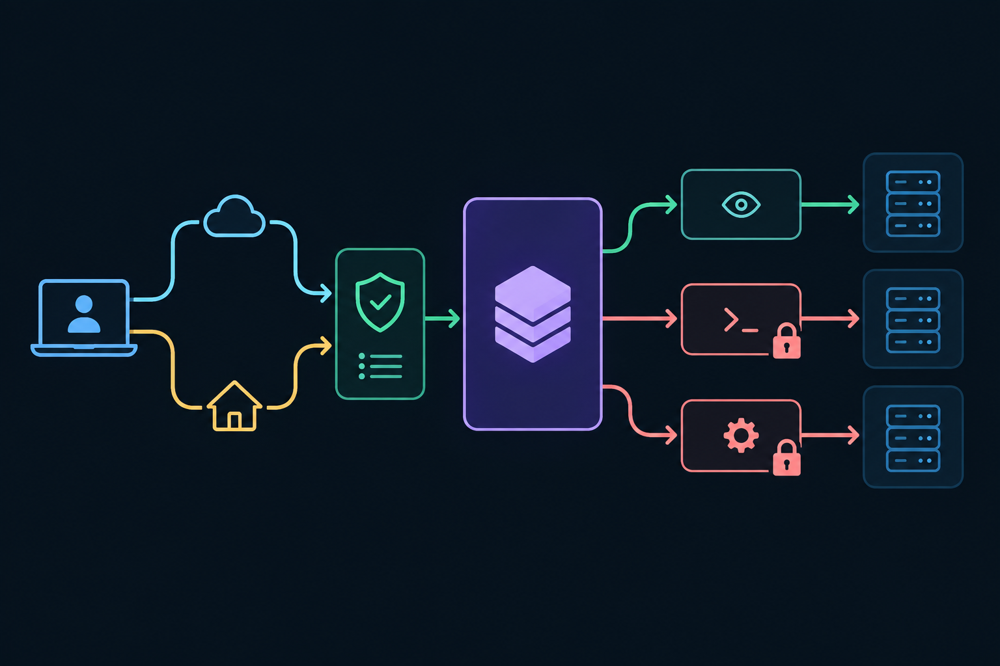
Phase 3A（已實作，獨立 reviewer gate 待驗）：該輪只完成 WS transport/auth/registry/lifecycle/RPC framing；未接 Herdr。Phase 3B-1 read path 已經73370baa獨立review（OK with notes）；本輪3B-2已實作control/input/agent/full/audit，並修P1-1與P2-A/B/C。3B-2經c83ef750 review指出P1-1／P2-1…P2-5，修正後df201412複審為OK with notes；本輪再修P2-N1…N3，收尾仍須獨立複審；桌面／手機驗收未執行，Phase 3整體仍[wip]。2B 複審 P2-5 已移除 AuthContext 的 scope 欄位／accessor，任何方法只能以 registry 宣告的 scope 經 with_authorized 重新授權。
3.1. 範圍與 WS 協定 v1（bridge.rs）
[x]Phase 3A 重新加入 axumwsfeature，重驗依賴／lock；upgrade 仍經既有 Route／guard 邊界，WS 不沿用非-upgrade HTTP 的 60 秒 connection cap；Hyper with_upgrades＋library handshake，OnUpgrade jobs 經有界 queue 進同一 JoinSet，HTTP permit 在交接後釋放，WS 使用獨立 global16 permits。保留 axum ws feature，但 production source contract 禁 WebSocketUpgrade／on_upgrade(／extract::ws，admin stdout writer 外禁 tokio::spawn(；main 改 owned JoinSet，test-only modules 的排除須精確且有反例測試。[x]已逐項檢閱 Herdr 0.9.1 schema：未找到 actual PTY cols/rows。PaneLayoutRect 是 layout；PaneScrollInfo 只有 viewport_rows；grid_cols/grid_rows 是 graphics placement，PaneReadResult 是文字而非 PTY 尺寸。gateway 取該 pane 正數 rect width/height（缺失回 geometry-unavailable），忽略 client 尺寸；固定 request 尺寸的 observe frames 不能反推 PTY，亦不保證涵蓋被其他 client 放大的 PTY。[x]只暴露sessionAllowlist中且正在執行的本機 named session；session 停止時回session-stopped，絕不自動啟動 server 或 session。[x]GET /ws經唯一 Route／Host／Tailscale login／exact Origin／API rate bucket，拒 query。取 WS permit 前先要求恰一個語法正確且對應現存session的 __Host-yzc cookie，否則401且不upgrade／不消耗permit；這只是DoS filter，不刷新TTL、不授權。upgrade 後 5 秒內首文字 frame 必須為{"type":"auth","binding":"TOKEN32"}，以 cookie＋binding 呼叫 authenticate(View)，失敗 close4401且無細節；成功送session.ready{protocolVersion:1}event 後才接 RPC。JSON RPC{id, method, params}／{id, result|error}／{event, data}；id 為 u64 或≤128 bytes字串，params 缺省/null/object。二進位保留streamId(u32 BE) ‖ bytes，3A／3B-1 收到 client binary 仍 close1003；3B-1 server binary 已承載 observe ANSI。3B-2 input 必須依序 decode streamId → check peer/stream ownership → 依stream種類 with_authorized(Control|Full)，不能沿用View活動檢查當input授權。hello 回 protocolVersion、serverTime、即時 with_authorized 計算的 scopes；session.ping 回 serverTime。3B-1 hello 新增已實作 methods 與 protocol limits；3B-2已加入control/full方法（hello共17個）；push仍scope-aware not-implemented。[wip]view（3B-1 read methods 已實作，VAPID／push 留 Phase 7）：hello（回傳能力、權限、VAPID 公鑰）、sessions.list、snapshot.get{session}、events.subscribe{session}、terminal.observe{session, target, cols, rows}（忽略 client cols／rows，由 gateway 決定不小於 pane layout rect 的尺寸，絕不用手機 viewport；layout rect 不等於實際 PTY 尺寸）、stream.close{stream}、push.subscribe（Phase 7）。[x]control：terminal.control{session, target, takeover=false, confirmResize:true, cols?, rows?}（忽略 client cols／rows，由 gateway 決定；預設不送尺寸，或使用已知的實際 PTY 尺寸；若必填且無官方尺寸來源，不得猜測為無副作用，須明確確認會改變桌面 pane）、terminal.input{stream, text|bytesB64}（≤ 4 KiB）、terminal.scroll、terminal.release、agent.prompt{session, target, text}（≤ 16 KiB）、pane.sendKeys{session, target, keys[]}（僅 Enter、Escape、Tab、BackTab、方向鍵、Ctrl-C、Ctrl-D）。[x]full：full.open{session, cols, rows, confirmResize:true}（重用open_native_client，每裝置同時 ≤ 1）、full.input、full.resize、full.close。開啟即改變桌面該 tab 幾何；先釋放本peer在該session的control streams，Host official client成功開啟後才送 adminfull.state{deviceId,peerId,stream,seq,session,open:true}，由桌面依 ADR-0004 暫停該 session 的 pane connectors（或明確警告仍有 connectors）；僅已announced時關閉送full.state{deviceId,peerId,stream,seq,session,open:false}並協調恢復。full 本身不排除 direct control。full.open 需≤2分鐘內取得Full提權；已開full stream可持續≤min(15分鐘, full grant, absolute TTL, enableUntil)，到期自動關閉；full.input使用open-stream token＋Full validity，不以2分鐘freshness截斷。3B-2已拆full_at與full_until：open freshness≤120秒，已開stream不因續提權延長；full.resize亦須confirmResize:true，尺寸20..400欄、8..200列。[]任何尺寸變更都須明確確認「會改變桌面 pane」；control release 後 PTY 不會自動恢復，須定義並驗證恢復策略，至少驗收桌面 connector 下一次 resize 的恢復行為，不把 release 當作 restore。
3.2. 白名單與拒絕清單
[x]以 Herdr 0.9.1 bundled schema（herdr api schema --json匯出為測試 fixture）列舉全部 103 個 request methods（另列26個event kinds與3個subscription events；先前129是混入event的regex粗算，經parent核准更正）。3A 已从隔離 Spike C schema.txt 匯出 method-list fixture，與 /tmp/herdr-0.9.1-schema.json 內容核對相同；明確deny與closed registry測試已完成。只有上述對應方法可達，其餘一律拒絕；3B-1 已接封閉 typed read mapping（HerdrPort／本機 HerdrManager::with_binary）；3B-2已補封閉control/full mapping與拒絕audit；METHOD_MAPPING逐項核對103 methods，見READ_PROTOCOL.md。[x]Phase 3A fixture／registry test 鎖定明確拒絕（防禦縱深）：server.*、plugin.*、integration.*、command.invoke、worktree.remove、workspace.close、tab.close、pane.close、layout.apply、client_shell.*、client.window_title.*、notification.show、popup.*、pane.report_*、pane.clear_agent_authority、pane.release_agent。
3B 授權／IO 邊界（3B-2已實作，待獨立審查）：with_authorized closure 只能同步 try_send 到該 peer／stream 擁有的 bounded queue，不能返回future或在解鎖後無條件寫Herdr。Herdr writer 在每次實際write前重查peer invalidation watch／per-stream validity epoch；撤銷後未寫出的control input回錯誤、清空且永不重播。writer tasks由peer持有JoinSet／select，不能detached spawn；不得反向取得pairing／ceremonies鎖，固定pairing→identity→ceremonies。
自然到期：不移除login session的提權到期也必須主動release control／full streams；control timer以min(control_until, grant)為界，full timer依open-stream Full validity／上述min期限，不能只等下一筆input被拒。Full grant目前是boolean、撤銷即失效，沒有持久化until欄位；不得假造既有grant deadline，3B依有效grant與已核准stream期限落實。
3.3. 接管、背壓與上限
[x]Phase 3A：ping20秒／pong20秒、無client frames 5分鐘idle（2026-10-17 PR #141 review 移除：合規 peer 每 20 秒回的 Pong 也算 client frame，不回 Pong 的 peer 40 秒內就 pong-timeout，這個分支永遠不會觸發；應用層閒置由登入 idle TTL（viewIdleMin ≤ 30）負責，Ping/Pong 只維持 liveness），shutdown1001；identity鎖內有界live peers（session/device索引資料＋watch），revoke／降權／unlock／lockout／addToDevice清session／logout／第5session淘汰皆主動4401；maintenance≤1秒推送idle／absolute expiry，enableUntil關listener前失效並4401。close最多250ms、server join最多500ms後abort；RAII清registry／獨立WS permits。經parent核准只有已授權Text/Binary應用活動延長登入idle TTL，Ping/Pong只維持WS liveness，避免browser自動pong使登入永不idle。client Close改在250ms內close/flush queued reply；None原樣回None（browser code1005），1000原樣回1000，測乾淨EOF；admin只記client-closed reason、無code欄位。invalid UTF-8 Text→1007，client Ping只用library自動Pong。main以測試專用YZC_TEST_TIMING=1輸出server join／writer join／total durations到stderr，EOF/shutdown測試失敗輸出診斷，不放寬期限。[x]3B-1 view 的寫入由 gateway 在送往 Herdr 前擋下；Herdr 會靜默忽略 observer input／resize，不能依賴 Herdr 回錯誤。[x]terminal.closedreason 映射 pin 至 Herdr 0.9.1 fixtures：…already has an attached client; retry with --takeover→owned-elsewhere；terminal attach taken over→taken-over；server is shutting down→session-stopped。attach 前先以session list的running判斷 session-stopped，區別已連線 shutdown 與停止後 attach 的 stderr；絕不把「Start it withherdr server」變成可操作按鈕。[x]無 takeover 的 control 遇到既有 owner → 回owned-elsewhere；takeover:true需 2 分鐘內的新鮮提權，並送control.state{deviceId,peerId,stream,seq,session,target,takeover:true,open:true}（Host open成功後才enqueue，target為resolved pane ID） 給桌面。[x]被桌面取回控制時回報taken-over，gateway 絕不自動搶回。[wip]Phase 3A 每連線 outbound≤4 MiB（queued＋in-flight bytes、frame overhead與預留tungstenite write buffer），queue≤256 messages；overflow或write停滯20秒先close1013（slow-consumer），不靜默丟棄／重播；對完全不讀TCP者close frame只能best-effort，仍有界回收。3B-1 snapshot 正規化 JSON >48KiB 以 base64-json-v1 分片（原始每片36KiB）；gateway上限2MiB，但另受Host raw NDJSON 1MiB限制，兩層 size rejection 都是 payload-too-large，不是1013。每 stream 已加入256 frames與384KiB budget（含in-flight、也計入peer4MiB）；observe／events 溢位 → 以slow-consumer關閉該 stream（手機重開後 Herdr 會重送當前畫面）；control 輸入不得靜默丟棄，送出失敗即回錯誤；重連後不重送任何輸入。[wip]3A已落實：每裝置 WS≤2（跨login sessions合計）、global≤16（含首frame驗前），message/frame≤64 KiB、每連線任意1秒內≤50 client messages（含auth／ping／pong）；此rate只計library組好的完整message、不計continuation fragments，64KiB仍限制payload記憶體，但不宣稱限制碎片解析CPU；本輪記錄限制，未加入bytes/s新policy。HTTP64 permits獨立。配對裝置依既有maxDevices政策；3B-2 每 WS observe／events／control／full合計≤8 streams；peer-owned select／RAII teardown 已接write path。
3B-1 協定與 bounded IO：READ_PROTOCOL.md 定義最小 snapshot、base64-json-v1 chunks、binary header、錯誤及測試邊界。events 只傳 agent.status／pane.exited；每 peer/session 一份 subscription，重複回同stream，opening時回busy。每peer≤2 pending read results；3B-2改為每device read≤2（含orphan，job结束才歸還），global read4／write2／cleanup2獨立slots；每device write1，peer write queue16，read orphan不阻擋input/release。128 resource permits界定active/pending資源與cleanup waiters。
3B-1 經parent核准的限制：取消只orphan同步Host call，不會立即中止；callback與每次WS write前查失效watch，peer失效後不發布結果、清queue，晚到resource以RAII release。已交給OS的bytes不可撤回。15s CLI／5s socket是每個操作上限，串行discovery可能更久，cleanup可能等待slot；shutdown仍500ms server／1s main join後exit。Host stderr reader目前未保存join handle，只隨pipe EOF結束；只宣稱companion tasks owned，fake測PID／socket最終回收。後續另案：Host cancellable async API及保存/join stderr reader，本輪不改Host。另經parent核准保留TOCTOU：最後running check後、connector connect前停止時，Host callback只給stderr，安全關stream但回generic stream-closed；不猜狀態／不曝Start it訊息，PWA重查sessions.list；callback後有界re-list留後續。
3B-1 environment：同步main在runtime/thread前清除所有繼承HERDR_*，production保留HOME/XDG；Library local port遇未清env fail-closed。fake測試清繼承env，真gateway子程序另用隔離HOME/XDG與假的poison vars驗只剩Host有意設定HERDR_SESSION；未執行使用者Herdr。P2-A contract補自由spawn/import/Handle/axum::serve tripwires、空cfg(test) module與test-file唯一cfg引入反例；方法型JoinSet的真正ownership仍由review檢查。
3.4. 稽核事件
3A已送best-effort try_emit session.opened{peerId,deviceId}／session.closed{peerId,deviceId,reason}；peerId為非機密連線counter，不含cookie/session ID或binding；不取代下列3B audit。
[x]所有 control／full 動作送audit{deviceId, scope, action, session, target, summary, at}。[x]摘要規則：agent.prompt記前 200 字＋長度；terminal.input／full.input只記每 10 秒的位元組數（不記原始按鍵，可能含密碼）；takeover、full.open／close、release 逐筆記錄。
3B-2已實作／parent裁決：Host沒有封閉pane.send_keys feature，因此RPC pane.sendKeys對映Herdr agent.send_keys；先解析同session snapshot pane與agents membership，無agent回no-agent，keys限Enter／Escape／Tab／BackTab／ArrowUp/Down/Left/Right／Ctrl-C／Ctrl-D（1..32）。Herdr pane.send_keys／pane.send_input／pane.send_text仍deny。Control沒有actual PTY來源時一律需confirmResize:true，client尺寸忽略；Full open/resize尺寸20..400×8..200亦需確認。Control takeover與Full open在admission及Host前檢查120秒freshness；同peer control先實際release，official client成功後才enqueue full.state(open:true)。Full state不是開啟前的desktop握手，不能保證connector暫停先於PTY改幾何。
3B-2期限／取消：with_authorized同步try_send到peer queue16；每次Host facade前查失效watch與不可復用stream validity，control/full timer=min(elevation、grant如存在、absolute、enableUntil)。Full boolean grant沒有until；Full validity自提權起≤policy15分鐘、freshness另存，既有token2分鐘後仍可input、續提權不延長token。自然expiry主動release與WS stream.closed(elevation-expired)，release/close收緊不受audit滿或提權到期阻擋。每個mutation先started.store(true, SeqCst)，再最後validity check；取消側先SeqCst失效再load started。started=false回dropped，true一律保守unknown（含最後check失敗），PWA不得自動重試任何mutation。close前內容無關錯誤僅best-effort；4401／斷網未見error也應視為unknown、重新核對pane。
3B-2稽核／收緊優先：audit含deviceId、peerId、scope、action、session、target、summary、at、reason?/outcome?。prompt前200 Unicode chars＋length/bytes；keys只數量；input每stream10秒聚合byte attempts，不是delivery receipt，獨立semaphores限制mandatory announcements 4、optional input buckets 12，合計仍在48 ordinary slots內；input超額改同步try_emit(bytes)，失敗仍fail-closed。open在audit admission時必須額外reserve state(true) OwnedPermit，失敗在Host mutation前回audit-unavailable；Host成功用permit送true，失敗釋放permit、不送state，不能讓Host已動作卻因queue後來填滿而不公告。ordinary audit/open announcements至多48/64 slots，保留16 slots給lifecycle/pairing/revocation/收緊。新open/input/prompt/keys/scroll/resize在try_emit/reserve失敗回audit-unavailable且不寫Herdr；release/expiry/revoke/teardown先失效及cleanup，audit＋已announced的state(false)以stream最新bundle有界重送（64，專供收緊），覆蓋/超額的事件數計入audit.dropped的lost及其子集lostTightening。同device有pending tightening bundle即拒絕新open（audit-unavailable），Host前reserve時亦重查。admission後新出現的其他stream deferred bundle不阻擋已預留announcement；opaque key不重用，不會跨stream覆蓋，同stream true已入列才設announced並容許false。rejected-write只計數、不進deferred；每peer最多10秒一次count-only summary，省略的詳細拒絕audit立即計入rejectedOmitted；stalled/cancelled滿queue只計lost、不計lostTightening。未announced且未lease的stream移除只送ordinary open.failed；queue滿只計lost，絕不進deferred或觸發same-device pending guard。取消audit outcome=dropped/unknown。沒有admin stream.closed；該事件只屬WS，desktop看audit reason/outcome與control.state/full.state。
3B-1複審修正：reply batch先檢查全部queue capacity、一次reserve total bytes並split permits，每peer一份queued/in-flight chunked snapshot，不足回busy而非1013；Control/Full replies亦同。獨立128KiB reply/ping headroom不供stream sinks或chunked snapshot使用；snapshot先入列再被streams填滿仍可送reply/ping。固定busy reply也排不進才1008 reply-queue-full（僅reply本身的bounded容量亦耗盡）；真正20秒write stall仍1013。init.herdrBinary強制absolute；測試sentinel用平台temp絕對不存在路徑。P2-C加thread/task Builders、runtime Builder/Runtime（main例外）、grouped/renamed spawn imports反例；with_authorized允許leaf jobs locks、禁止identity重入／pairing／ceremonies。read completion Err先close state再移除；已開write stream的audit-unavailable／Host內容錯誤不拆stream，必要關閉走state.close→stream.closed。所有非同步write error含stream（非stream方法為null）；binary已發出但移除的token回stream-closed而非1003，不保存歷史類型，仍active的observer/events及never-issued token保持1003。
已接受殘留：最後guard在Host facade前；Host內部同步discovery/IO不可撤銷，feature timeout可達135秒、串行CLI另有15秒單次上限。cleanup有獨立2 slots，但Host持有input鎖時物理release仍可能等待；state(false)是邏輯失效，不保證client process當下已消失。stderr reader無join、stopped-connect TOCTOU與OS已交付bytes限制沿用；不改Host。3B-2新增26項fake-only tests、17組有效red→green、最終連續兩輪各196 tests passed／0 failed；供應鏈／scope證據見4ccfdbfc/companion-p3b2/report.md；沒有把fake當手機或桌面restore驗收。
Phase4／產品發佈blocker（parent接受本輪不改Host）：Host connector stdin與native client input的write_all/flush無timeout，release先取同一mutex，physical release可能永久等待；135秒feature timeout不適用pipe／PTY。Companion已補write與release job的10秒async觀測：一次audit(action=herdr-io-stalled, summary.phase=write|release)，write stream失效（stream-stalled），清queued input，所有已開始的mutation outcome=unknown（input保留input-outcome-unknown，其餘write-outcome-unknown），未開始回對應dropped；watchdog失效job也涵蓋nonstream prompt/keys，防止discovery逾時後遲到執行。晚到result不重複ACK；blocking thread、slot及resource/full permit照實持有到Host返回或process結束，read slots與cleanup admission獨立，但cleanup slots也可能被不合作release佔滿。發佈前另案修Host bounded/cancellable input/release並驗永久不讀fake的有期限kill/reap及permit回收；本輪只保證logical invalidation，不宣稱physical release deadline。
3B-2 review fixes：mutation取消碼
任何mutation都不得自動重試，含dropped／unknown／Host error與缺ACK；input名称為相容性保留。Host facade之後仍不可取消，unknown必須使用者核對pane；release ACK僅logical ownership，不是physical cleanup ACK。
| Method | started=false | started=true |
|---|---|---|
| terminal.input／full.input（含binary） | input-dropped | input-outcome-unknown |
| agent.prompt／pane.sendKeys | write-dropped | write-outcome-unknown |
| terminal.scroll／full.resize | write-dropped | write-outcome-unknown |
| terminal.control／full.open | write-dropped | write-outcome-unknown |
| terminal.release／full.close | 不走write job，直接同步logical close；不等待Host cleanup | |
3.5. Testing Strategy
本輪P2-N1…N3：12個bucket reservations占滿、額外input走fallback時，Control／Full新open仍可預留4個獨立announcement名額；lost／lostTightening／rejectedOmitted分計與flush重置；未announced且未lease的Control／Full失敗在滿channel也不進deferred、不擋same-device admission。N1／N2先在舊碼assertion red，再修正green；既有213項保留，新增3項，完整驗證見companion-final-fix/report.md。
本輪P1-1與P2-1…P2-5：fake測同device兩peer衝突無假close、自takeover後獨立stream key/seq、deferred guard、failed open無state；確定性交錯的started最後guard；六種mutation在queued／4401／watchdog的dropped/unknown與nonstream遲到防護；content error保留stream、async busy含stream、closed binary不1003；snapshot先入列再由真Sink queues補滿而reply/ping成功；rejected flood不占64收緊bundles、per-peer摘要限速、16 reservations cap與16 lifecycle slots。另加LocalHerdr manager方法白名單tripwire。red→green、最終兩轮測試與命令見companion-p3b2-fix/report.md；不是browser或實機验收。
3A已以真loopback WS＋2B software authenticator測試，15項新增（11 WS integration＋3 bridge unit/loopback＋1 AuthContext contract）；6組temporary-revert皆有效red→green（首frameauth、active revoke、device/global permit釋放、HTTP lifetime不套WS、每call scope）。slow-consumer以暫停writer／預填真outbound queue作可重現注入，真loopback client收到1013；不是實機網路壅塞或browser測試。完整最終驗證見 companion-p3a/report.md。補 WS idle／pong timeout、shutdown 1001、revoke 4401、upgrade 後超過 60 秒仍依 WS 政策存活、WS／HTTP permit 分帳與各結束路徑釋放測試；另由 Phase 0 手機矩陣確認 iOS Safari 的 connect-src 'self' 允許同源 wss:，仍待使用者實機。
3A review fixes：新增client Close(None)/Close(1000)回覆＋clean EOF、真1KiB duplex被64KiB messages塞住且client停止讀取、19秒未關／20秒timeout→1013＋admin slow-consumer、pre-auth cookie401與16 fake peers無法占pool、UTF-8 1007、恰一automatic Pong、production upgrade/task ownership contracts。各指定finding執行temporary-revert red→green；原138 tests保留。lifecycle suite連跑10次，per-stage timing分布與所有失敗（若有）詳companion-p3a-fix/report.md，不將未重現當作既有偶發EOF根因已修。
3B-1 自動化：trait fake＋真loopback WS驗allowlist/running、不start、最小snapshot/chunks/size errors、events filter/one-per-session/bounds、observe尺寸/8 streams/256 frames/byte isolation、close/socket/4401/shutdown/orphan cleanup、revoke後不送新frame；本機facade＋scripted fake Herdr/private Unix API驗PID與socket回收，真gateway子程序＋software WebAuthn驗env sanitization與shutdown。另補P2-A production task contract。8組有效assertion red→green，完整命令／最終測試數與殘留詳 companion-p3b1/report.md；該輪未驗的Control/Full/audit已於3B-2補fake-only測試；Windows/Linux native及手機仍未驗。
以 herdr_transport 的測試 listener 或腳本化 fake herdr binary（輸出 NDJSON terminal.frame／terminal.closed）建立可重現環境；fixture 取自 Spike C 的實際錯誤字串。邊界：多 observer 扇出、owner 衝突、接管與被取回、慢速消費者、重連不重送、session 停止、白名單外的每一個 schema 方法。
[x]cargo test --locked --manifest-path src-tauri/companion/Cargo.toml bridge_allowlist_— 3A已驗103個request method中非closed registry方法皆unknown-method、明確deny無法註冊；3B-1 已驗 HerdrPort 封閉 read mapping 及本機 facade＋fake binary/private Unix API；3B-2含typed write facade／fake API／official client PTY與103-method closed mapping。[x]cargo test --locked --manifest-path src-tauri/companion/Cargo.toml bridge_stream_— observe 扇出、control 衝突、takeover、taken-over、slow-consumer、無重送；pin 0.9.1 的衝突／接管／server is shutting down三種 reason 映射，另測 running=false 時不 attach／不自動啟動，也不提供啟 server 按鈕。[x]cargo test --locked --manifest-path src-tauri/companion/Cargo.toml bridge_scope_— view 無法呼叫 control／full 或向 observe stream 寫入／resize；斷言 gateway 未送出寫入，不期待 Herdr observer 回錯誤；過期提權被拒且無新輸入也主動release；full.open需新鮮驗證，已開full stream於2分鐘後仍依token＋Full validity可輸入、最長15分鐘/更早deadline主動關；revoke後queued input不得到達fake Herdr、不重播。[wip]尺寸邊界測試（gateway fake已驗，desktop restore未驗）：client cols／rows 被忽略；observe ≥ layout rect 且不取手機 viewport、frame 固定為請求尺寸；layout rect≠實際 PTY／找不到 PTY cols 來源；control 預設不送尺寸或使用已知 PTY 尺寸，改尺寸需確認；release 不自動 restore，驗證桌面 connector 下一次 resize 恢復。[wip]Full Session access 邊界測試（gateway coordination已驗，desktop／手機未驗）：full.open 前先釋放同 session 的 gateway control streams，再送 full.state；桌面暫停 connectors（或警告），關閉後恢復；open 即改幾何、full 不排除 direct control、≤64 欄只改 chrome 而 BSP panes 仍並排。[x]cargo test --locked --manifest-path src-tauri/companion/Cargo.toml audit_— 稽核摘要不含原始按鍵。[]cargo test --locked --manifest-path src-tauri/host/Cargo.toml— host library 若有新增 pub 匯出，既有測試不受影響。
[wip] Phase 3C: 移植到 v0.0.19 與 HERDR 0.9.2+ 對齊（2026-10-17 新增）
lane 以 9f4592e（v0.0.16）為基底，而且沒有 commit；origin/main 已到 f790d1c3（v0.0.19）。gateway 用到的 host API（HerdrManager、list_sessions、snapshot、events_subscribe、open_terminal、terminal_*、feature、protocol::MAX_FRAME_BYTES、wire::read_frame）在 origin/main 都還在，簽章也沒變（只比對簽章行，沒有比對行為）。所以主要工作是對齊版本、lock、fixture 與文件。本 phase 是 Phase 3D 的前置工作，因為 git_discovery、git_registry 只存在於 main。
[x]經使用者同意後，以 main 為基底建立新的工作分支／worktree，搬入src-tauri/companion/、spikes/companion-direct/、.github/workflows/companion.yml、計畫與 ADR-0008；不在共用主樹直接切換分支。（2026-10-17：.yuzora-lanes/companion-v0019、branchfeat/companion-pwa-v0019，從 origin/main f790d1c3 建立；本計畫即為此 worktree 內的 living copy，舊 lane 保持不動。）[x]companion 版本從 0.0.16 改成和 main 一致（目前 0.0.19）；一併移植scripts/verify-version-consistency.ts、scripts/release-version.test.ts的 companion 檢查，並確認通過。（依 main 新版\r?\n寫法重套；main 新增的換行符測試 fixture 一併補上 companion 檔案；docs/operations.mdrelease 清單加入 companion 版本一項。）[x]重新產生src-tauri/companion/Cargo.lock（host 依賴已升級：dirs 7、rand 0.10.3、新增 grep-matcher 等）；重新驗證deny.toml的 option-ext／dirs 例外與禁用清單。（lock 只變動 dirs 6→7、grep-matcher 與兩個版本號；option-ext 仍為 =0.2.0，deny 例外仍對得上。本機未安裝 cargo-deny／cargo-audit，實跑交給 CI 的 companion workflow，預期仍因四筆 TLS advisory 失敗。）[x]在隔離的 named session（全新 temp root，清除全部 HERDR_*，絕不碰使用者的 live session）用 HERDR 0.9.2 以上（建議 0.9.5）重跑 Spike C 與 method fixture；gateway fixture 從 0.9.1 改成對齊 main 的herdr-0.9.3-methods.json或更新的版本；確認 protocol 仍是 22，並確認 c411883e（kitty graphics，標了 breaking）對 observe frame 的影響。（2026-10-17：依使用者指示把隨附 HERDR 升到最新的 0.9.5，Spike C 以 0.9.5 重跑，結果與 0.9.1 完全一致，見herdr-multiclient/REPORT.md與fixtures-0.9.5/；companion fixture 改為herdr-0.9.5-methods.json（102 methods、26 events、3 subscription events）；0.9.3／0.9.4／0.9.5 完整 API schema 零差異，protocol 22。）[wip]吸收 0.9.2 以後的變化：收到events_lost時 gateway 重抓 snapshot 並通知 PWA；terminal.mouse先在 closed mapping 列為 deny 或 control-only（是否開放見 Phase 5 註記）；0.9.4 起 Windows 上以系統管理員權限執行的 server 只接受 administrator client，記入 Windows sidecar 風險。（2026-10-17 查證：events_lost是訂閱串流上的錯誤，不在 schema 文字內，main 的 host 目前沒有區分處理，gateway 只能走既有的訂閱錯誤路徑，「重抓 snapshot」需要 host 先提供可辨識的訊號，未實作；terminal.mouse是 terminal session control 指令而不是 API method，gateway 目前不轉送，是否開放見 Phase 5；closed mapping 另把 0.9.2+ 新增的pane.clear加入明確 deny。）[x]文件參照更正：src/terminal/terminalImeInput.ts不存在，改成terminalImeHandling.ts＋terminalImePositioning.ts；companion 的 Rust 註解如果引用 ADR-0007，一律改成 ADR-0008（2026-10-17 掃描 lane 內的 .rs，沒有這類引用）。[x]cargo test --locked --manifest-path src-tauri/companion/Cargo.toml、cargo clippy --locked --manifest-path src-tauri/companion/Cargo.toml --all-targets -- -D warnings、cargo fmt --manifest-path src-tauri/companion/Cargo.toml -- --check全部通過（基準：v0.0.16 時 218 項）。（2026-10-17：218 項全過；唯一的編譯錯誤是 main 的terminal_scroll多了游標座標參數，傳None, None保留原行為。）[x]PR #141 的 CI 與 Codex review 修正（2026-10-17）：Windows 上三個 WebSocket 測試因 RST 失敗，改成 server 送出 close frame 後半關閉並在 250ms 內排空輸入；Codex 三則 P2（時鐘回撥後重新放行已過期授權、Pong 讓 idle 分支不可達、full.open 被拒時已先拆掉 control streams）全部修正或處理；companion lock 的 rustls 0.23 升到 0.23.46。細節見執行紀錄。[x]cargo test --locked --manifest-path src-tauri/host/Cargo.toml：host 測試不受影響。（2026-10-17：669 項全過，含新增的 0.9.5 fixture；host clippy-D warnings、fmt 通過。）
[] Phase 3D: Spaces 瀏覽與 Git 唯讀 bridge（2026-10-17 新增）
依 2026-10-17 的範圍裁決（D12）擴充 gateway。Spaces 的名稱、順序與所屬 Agents 是 HERDR workspaces 的投影，取自既有的 snapshot.get／events.subscribe。但 Space 的 repo root 不完全來自 snapshot：桌面 src/lib/herdrWorkspaceRoots.ts 會用 localStorage（yuzora.runtime.workspace-roots.v1）裡的明確綁定覆寫 snapshot 的 space.path，只有使用者明確選取時才退回 pane cwd。因此 root 對照要由桌面經 admin 推送。Git 讀取重用 yuzora-host 的 git_command，它已經包含 require_trusted／require_trusted_git 的 trust gate，以及 GitCommand::{Status, Branches, Diff, Log, CommitDetail, LogAuthors, FileAtRev}。因此 Git 讀取不經過 Tauri 行程，不會破壞 D2。
[]Spaces（view scope）：PWA 需要的 Space 欄位（名稱、順序、所屬 Agents、cwd／repo root 是否存在）從 snapshot 投影，只限 sessionAllowlist 內的 session。Yuzora 專屬的外觀 metadata（Space 圖示、角色等）不在範圍內，除非桌面經 admin 推送。不提供任何 workspace mutation。[]Git 方法白名單（view scope，新的 closed mapping）：只允許git.status、git.branches、git.diff、git.log（包含畫 graph 需要的 parents／refs）、git.commitDetail；FileAtRev、LogAuthors是否開放，見下方開放問題。所有寫入類GitCommand（stage、commit、checkout、push、pull、fetch、stash、rebase、reset 等）在 mapping 層就無法註冊，測試方式比照 Herdr 103-method 的 closed registry。[]路徑權威：repo root 只能來自桌面經 admin 推送的 Space→root 對照（新增spaces.roots推送，只含 allowlist session，桌面綁定變更時重送）。gateway 收到後仍經 hostgit_discovery與 trust gate 重新驗證，推送內容本身不等於授權；沒有推送的 Space，手機上不顯示 Git 分頁。不從 pane cwd 自動推導，比照桌面「背景投影不得依 process cwd 改變 Files」的規則。client 只能傳 Space 參照（不透明 id），不接受任何檔案系統路徑；diff／log 的 pathspec 必須是 repo 內的相對路徑，並經 host 驗證。[]Trust：以桌面同一份workspace-trust.json為準。gateway 用 init 傳入的桌面 store 路徑建立WorkspaceTrustState::at(...)，只呼叫require_trusted*，絕不呼叫 grant、revoke 或任何 persist。host 的lookup每次都從磁碟重讀這個檔案（workspace_trust.rs:607-608@ origin/main），記憶體裡只有 challenge 與 session_git_roots。所以桌面撤銷 trust 後，下一個 Git 請求就會被拒，不需要另外推送。未受信任的 repo 在手機上顯示「請在桌面信任此工作區」，手機端不提供信任入口。[]資源上限：沿用 host git process 的 timeout 與輸出上限；log 分頁大小、diff 位元組上限與並行數另設 gateway 上限；慢速 client 的背壓處理和 Herdr stream 一致。[]稽核：Git 讀取屬於 view scope，不逐筆通知桌面；但 audit 會記錄 repo 與方法類型（不含內容），讓裝置清單能顯示「最近讀取」。[]cargo test --locked --manifest-path src-tauri/companion/Cargo.toml git_bridge_：白名單外的 GitCommand 一律無法註冊；client 傳入的路徑被拒；未受信任的 repo 被拒；桌面撤銷 trust 後立即生效；上限與分頁正確。[]cargo test --locked --manifest-path src-tauri/companion/Cargo.toml spaces_：Space 投影只含 allowlist session、沒有 mutation 方法、events 更新正確。
開放問題（本輪不決定）：diff、commit detail 與 FileAtRev 會把原始碼送到手機。在 O2 provisional（view 接受同步 passkey）之下，任何已綁定、通過 UV 的同步 passkey 都能讀到原始碼。需要使用者確認：Git 讀取要不要求 BE=0 或 control 等級，或者 FileAtRev 完全不開放。
[] Phase 4: 桌面整合（sidecar、Tailscale 設定、設定頁、狀態列、稽核）
blocked：待 ADR-0006（GPUI）裁決（2026-10-17 解除：GPUI 暫停，沿用 Tauri＋React）；仍需 Phase 3C 移植完成、Host timeout 與六筆 TLS advisory 解除；Phase 4+ 另需 Spike A 手機閘門通過。
由 Yuzora 桌面以 Tauri sidecar 啟動並管理 gateway，提供設定頁（啟用期限、路徑、Session 範圍、裝置與授權）、配對與 SAS 核准對話框、狀態列指示與撤銷，並把稽核事件轉成桌面通知與 Logs。所有指令沿用 main-window-only 閘門，不新增任何 webview 權限。
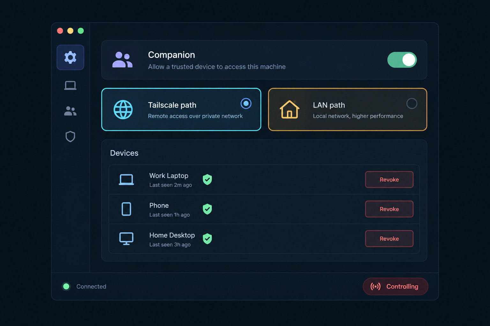
4.1. Sidecar 打包與啟動
[]scripts/build-companion.ts：以目前 target 建置 companion crate，輸出src-tauri/binaries/yuzora-companion-<target-triple>[.exe]（gitignore），並建置 PWA（Phase 5）。[]tauri.conf.json加入bundle.externalBin: ["binaries/yuzora-companion"]；beforeBuildCommand加入bun run companion:build；各平台 conf 的resources加入resources/companion-web/。macOS 只建aarch64-apple-darwin（AGENTS.md）。[wip]Rust 端由目前執行檔同目錄解析 sidecar 路徑，以tokio::process啟動（stdin／stdout piped、stderr 轉 Yuzora logs、kill_on_drop）；以最小白名單環境啟動並排除繼承HERDR_*（defence in depth；3B-1 sidecar自身亦清除），不引入tauri-plugin-shell。（2026-10-17 T2：companion_commands.rs的sidecar_program從目前執行檔同目錄找yuzora-companion[.exe]；debug build 可用YUZORA_COMPANION_BIN／YUZORA_COMPANION_WEB覆寫，release build 沒有這個覆寫。啟動方式：tokio::process、stdin／stdout piped、stderr 寫入 Yuzora logs、kill_on_drop、env_clear加 allowlist。實測 HERDR 在 macOS 要靠HOME才找得到使用者的 session；只給 PATH／TMPDIR 時只看得到 default。allowlist 只保留 PATH、HOME、TMPDIR、USER、LANG／LC_*、XDG_* 與 Windows 的系統、profile 變數，env_path 匯入的 API key 不會傳給 gateway；Windows 部分尚未實測。externalBin與 build script 留在 4.1 另做：一旦宣告，缺 binary 的每一次 build 與 CI 都會失敗。）
4.2. companion_service.rs
[x]狀態機 Disabled → Starting → Running{paths} → Stopping；重啟 backoff 最多 3 次，之後回 Disabled 並顯示錯誤。（2026-10-17 T2：companion_service.rs的CompanionManager，狀態為 Disabled／Starting／Running{port}／Stopping／Failed{code}。只有收到 ready 之後的非預期結束才會重啟，最多 3 次，backoff 為 1、2、4 秒，並沿用原本 init 的 enableUntil；ready 之前的錯誤（如 port-in-use、invalid-web-root）、policy-expired與使用者要求的停止都不重啟。用 generation 讓舊行程的事件與已排程的重啟失效。fake sidecar 測試涵蓋 crash 重啟 3 次後失敗、啟動錯誤、到期、不回應 shutdown 時改 kill。）（2026-10-17 #142 Codex review 後改為不自動重啟：backoff 期間 Serve 仍把 tailnet 流量轉到沒人 bind 的 loopback port，任何本機行程都能搶先 bind，最後一次 backoff 也可能超過 enableUntil。ready 之後崩潰改為直接 Failed{companion-crashed}，並移除 Serve，使用者要重新套用並啟用。行程結束時同時讓 generation 失效，被 kill 的行程或其子行程晚到的輸出不會再寫入 devices.json。）[x]啟用期限：1 小時／8 小時（預設）／直到 Yuzora 結束；到期自動停用；App exit hook（lib.rs的退出流程）必定送shutdown並等待結束。（2026-10-17 T2：enableUntil 由companion_enable{window}決定，可選 1h／8h／untilExit，untilExit 給 gateway 365 天的期限，由 App 結束負責收尾。到期由 gateway 自行關閉並送出policy-expired。App exit 分支呼叫CompanionState::shutdown()：先送 shutdown，最多等 2 秒，逾時就 kill；兩個 exit 事件都會到這裡，停止後再呼叫是 no-op。command_inventory_tests已把這個呼叫列為必須存在的字串。）[wip]init內容：Herdr binary（取自 HerdrManager 目前選定來源）、webRoot＝resource_dir/companion-web、listeners、devices、policy、sessionAllowlist；（2026-10-17）workspace trust store 路徑（gateway 只讀不寫），以及 Space→root 對照spaces.roots（Phase 3D）。（2026-10-17 T2：build_init依 settings 與已套用的 Serve 組 init：herdrBinary 取自HerdrManager::resolve_binary()，webRoot 取自 resource_dir/companion-web；publicHost 用小寫 host，port 443 時省略 port（gateway 會拒絕:443）；policy 用預設值，fullSessionEnabled 取自 settings。測試以 gateway 自己的 init fixture 比對所有欄位名稱，因為 gateway 用 deny_unknown_fields 解析。devices 每次啟動都重新從磁碟讀。trust store 與 spaces.roots 屬 Phase 3D，尚未加入。Companion 只看得到本機原生 HERDR，Windows 上 WSL 或遠端機器的 session 看不到。）[x]Tauri 指令：companion_status、companion_enable{window, paths}、companion_disable、companion_pairing_create{path}（回{qrSvg, expiresAt}，UI 不顯示明文 secret）、companion_pairing_decide{pairingId, approve}、companion_devices、companion_device_update{deviceId, label, grants}、companion_device_unlock、companion_device_revoke、companion_sessions_set、companion_tailscale_probe、companion_tailscale_apply{confirm}、companion_tailscale_remove；事件companion://event。（2026-10-17 T2：companion_commands.rs，13 個指令全部註冊在 main-window-only 的 handler。與原列表的差異：companion_enable{window}的 window 是啟用期限，path 固定為 tailscale；companion_pairing_decide多了 cancel，給 QR 對話框提早關閉時用；companion_sessions_set回傳 restartRequired，因為 gateway 只在 init 讀 allowlist；gateway 沒在執行時，device 的 update／unlock／revoke 直接改 devices.json，讓遺失的手機在停用狀態下也能撤銷。事件用emit_to("main", "companion://event")，不送進 Browser 子 webview；送到前端的 device 只含摘要，不含 credential。）[x]QR 以 Rustqrcode產生 SVG；pairing secret 不經前端 state 保存、不寫入 Logs。（2026-10-17 T2：qrcode 0.14.1 只開 svg feature，沒有引入 image crate；pairing URL 只在 Rust 端轉成 SVG，不會出現在事件或 log 裡。真 gateway smoke 測試會確認事件中沒有/pair#p=。）
4.3. companion_tailscale.rs
[x]CLI 探測：macOS/Applications/Tailscale.app/Contents/MacOS/Tailscale與 PATHtailscale；Windows%ProgramFiles%\Tailscale\tailscale.exe；Linux PATH。找不到時顯示安裝指引（不自動安裝）。（2026-10-17 補充）先判斷 macOS 上是哪一版：App Store 版（/Applications/Tailscale.app/Contents/_MASReceipt存在；KB 寫 CLI 內建於 app，路徑就是上面列的那條；不支援 Funnel 與 SSH server；沙盒下 serve 能不能用，待 Spike A 驗證）；Standalone 版（官方推薦；可以從設定安裝 CLI integration 到/usr/local/bin/tailscale，能不能直接用 .app 內的路徑，KB 沒有明說）；開源 tailscaled（沒有 GUI）。探測結果要記錄版本，找不到 CLI 時依版本給不同指引（kb/1080、kb/1065）。（2026-10-17 T1：src-tauri/src/companion_tailscale.rs的discover。macOS 有_MASReceipt判為 App Store 版、只有 bundle 判為 Standalone、都沒有判為一般 CLI；優先用 PATH 上的 CLI（Standalone 的 CLI integration、開源版），App Store 版退回 bundle 內的執行檔。Windows 先找%ProgramFiles%\Tailscale再找 PATH，Linux 只找 PATH。路徑存在與否以注入的函式測試；本機尚未安裝 Tailscale，實機確認留給 Spike A。安裝指引屬 T3。）[x]唯讀探測：tailscale status --json（BackendState、Self.DNSName、登入者 LoginName、CertDomains 是否含本機名稱）、tailscale serve status --json（所選 HTTPS port 是否已被其他 handler 使用，並檢查同 hostname 全部 ports）、tailscale funnel status --json（同 hostname 任一 port 是否公開）。欄位以 Phase 0 fixture 為準。（2026-10-17 T1：parse_status／check_serve，依 tailscale v1.104.1 原始碼核對。funnel status --json與serve status --json是同一個函式、輸出同一份 ServeConfig，所以只呼叫一次；沒有設定時輸出null。status要帶 peers：v1.104 之前，--peers=false不保證包含本機使用者的 profile。HTTPS 就緒要同時有 CLI 檢查的httpsnode capability，以及 CertDomains 含本機名稱。port 衝突檢查涵蓋頂層與所有 Foreground session，Services 依 service 名稱隔離、不佔用本機 port，所以不計入；Funnel 只要任何 handler 公開就拒絕；同 hostname 其他 port 列為 cookie 風險。fixture 是依原始碼推導、不是實際輸出，Spike A 要用實際擷取取代。）[wip]套用：確認對話框顯示完整指令tailscale serve --bg --https=<port> http://127.0.0.1:<gatewayPort>，使用者按下確認才執行；Serve target 必須為http://127.0.0.1:<port>，不得用localhost（可能解析為 ::1，gateway 僅 bind IPv4）；預設 HTTPS port 8443，避免覆蓋使用者既有的 443 設定；所選 port 衝突或同 hostname 任一 port 被 Funnel 公開時拒絕啟用 Tailscale 路徑；同 hostname 其他 Serve handler 顯示 cookie 跨 port 風險警告（binding 仍 mandatory），不僅檢查 Companion port。（2026-10-17 T1 只完成純函式：serve_args與refusal，依序拒絕未連線、tagged、無登入者、HTTPS 未就緒、Funnel、port 被占用。原始碼確認serve --https會默默覆蓋同 port 的既有 handler、不檢查 Foreground；缺httpscapability 時可能 exit 0 卻沒套用，或一直等待。所以 T2 套用前要重新探測，套用後要重讀 Serve 狀態，確認變成Ours。確認對話框屬 T3。）（2026-10-17 T2：companion_tailscale_apply{confirm}要求 confirm=true，套用前重新探測並檢查拒絕條件，port 是 Free 才執行 serve；之後最多重讀 5 次，確認狀態變成 Ours，否則回companion-tailscale-unverified。成功後把實際套用的 port、host 與 login 存進settings.applied，login 即 requiredTailscaleLogin。確認對話框屬 T3。本機沒有 Tailscale，這段尚未實機驗證。）[wip]停用或移除時只執行tailscale serve --https=<port> off，不動其他 serve 設定；啟用當下的 LoginName 寫入requiredTailscaleLogin。（2026-10-17 T1：off_args只在 port 上恰好是本 gateway 的 handler 時才回傳指令：TCP 只有{"HTTPS":true}，/只 proxy 到http://127.0.0.1:<gatewayPort>。指向舊 gateway port 的 handler、多了其他 mount，或屬於 Foreground，一律不動。這個形狀已對照 v1.104.1 原始碼：ExpandProxyTargetValue回傳的目標沒有結尾斜線；SetWebHandler只寫入{HTTPS:true}與{Proxy}，而且只刪除同前綴的 mount，其他 mount 會保留；serve（非 funnel）會把該 port 的 AllowFunnel key 刪掉，不會寫入false。requiredTailscaleLogin 的寫入屬 T2。）（2026-10-17 T2：Serve handler 不會比 gateway 活得久。companion_disable、companion_tailscale_remove、到期、崩潰後重啟失敗與 store 寫入失敗都會移除 handler；App 結束時來不及移除的，下次啟動時清掉，所以每次啟用都要重新確認套用。移除時以settings.applied記錄的 port 與 host 重新探測，只有仍恰好是 Ours 時才執行 off；已被別人換掉的 handler 只清除紀錄、不去動它。本機沒有 Tailscale，這段尚未實機驗證。）（2026-10-17 #142 Codex review 修正：使用者在同一 port 加了其他 mount 時，原本整個 port 會被判成 Taken，紀錄被清掉，但/仍指向 gateway。現在新增 Shared 狀態，表示 root 是我們的、另有其他 mount；同源的 mount 讀得到 Companion 的 cookie，所以拒絕啟用。移除一律用tailscale serve --https=<port> --set-path=/ off：依 v1.104.1 原始碼，這只刪/，其他 mount 還在時 port 保留；不帶--set-path會刪掉所有 mount，多個 mount 時還會跳出確認提示。套用時，紀錄的 port 或節點只要和目前不同就要求先移除，以免覆蓋另一台節點上 handler 的唯一紀錄。啟用失敗（含同步的啟動失敗）時移除 Serve；到期或崩潰後的清理工作拿到 ops 鎖後，若已有新的 gateway 在跑就跳過。仍有空窗：apply 與 enable 之間 handler 已存在但 gateway 還沒 bind；T3 必須在同一個動作裡連續呼叫 apply 和 enable。）（2026-10-17 T2 review 修正：只有在原本那台節點上確認 port 已空出或已被換掉時才清除紀錄；登出、切換 profile、節點改名或 off 失敗時保留紀錄並回錯誤，因為 handler 可能還在。套用前先寫入settings.applied，CLI 失敗或驗證不到時盡力移除；紀錄的 port 與目前設定不同時要求先移除。App 結束時停止 gateway 後，再以最多 5 秒移除 handler；被強制結束的情況由下次啟動清理。）[]（2026-10-17）由桌面發起的綁定流程（D13）：啟用 Companion → Tailscale 探測 → 確認後套用 serve → 自動開啟CompanionPairingDialog（QR）→ 手機 PWA 掃描 →CompanionApprovalDialog核准 SAS → 手機註冊 passkey。任何一步失敗都回到可以重試的狀態，不留下半套 serve 設定：套用失敗或使用者取消時，只移除本次新增的 handler。
4.4. companion_devices.rs
[x]<app_data>/companion/devices.json：schema version、deviceId、label、credentials（依 rpId，保存 publicKeyState＋stateFormat:"webauthn_rp-0.3.0-static"；非 COSE，升版需遷移／重新配對）、grants（control: {until} | null、full: bool）、locked、createdAt、lastSeen、push subscription（Phase 7）；不含任何 secret。（2026-10-17 T2：檔名改為companion_store.rs，同時存 devices.json 與 settings.json。device 原封不動保存 gateway 送出的物件，因為 init 會以 deny_unknown_fields 重新解析；格式為{version:1, devices:[...]}。）[x]原子寫入（tmp＋rename）、Unix 權限 0600；損毀時保留備份並停用 Companion，不自動重建。（2026-10-17 T2：先寫 tmp、fsync，再 rename；目錄權限 0700、檔案 0600。檔案損毀時另存.corrupt-<時間戳>備份，原檔留在原位，Companion 無法啟動，不會自動重建。寫入成功才更新記憶體，所以撤銷失敗不會被當成已完成；gateway 在執行中時，device 變更寫不進磁碟就停止 gateway。）（2026-10-17 T2 review 修正：gateway 延後通知（command.deferred）時，變更其實已生效，所以在回覆前就把這筆指令套用到 devices.json，否則停用後重啟會把撤銷的裝置帶回來。停用狀態的直接編輯只允許 Disabled／Failed；Starting／Stopping 時回companion-busy，因為啟動中的 gateway 已讀過檔案、停止中的仍可能寫入。label 與 control.until 的驗證規則與 gateway 完全相同（80 bytes、不可前後空白、禁止控制字元與明列的 Unicode Cf；時間格式同utc_shape）。）（2026-10-17 #142 Codex review 修正：載入 devices.json 時套用 gateway init 的規則：欄位集合、22 字元的標準 base64 deviceId、label、grants、時間格式與先後、1～8 個 credential、全部裝置合計 (rpId, id) 不重複、最多 64 台。不檢查 credential 內部的 key state，那只有 gateway 解析得了。不合規的檔案當作損毀備份，否則每次啟動都會失敗。這些規則只在 load 時檢查，upsert 不檢查，以免規則抄錯時讓執行中的 gateway 停止。Windows 的 rename 本身會取代既有檔案，但 Defender 可能暫時鎖住剛寫好的檔案，所以沿用ssh_service的短暫重試。）
4.5. 設定頁與對話框（shadcn）
[]SettingsDialog.tsx新增 SectionIdcompanion（lucideSmartphone，放在safety附近），僅在 Experimental 旗標開啟時顯示；settings-search.ts加入索引。[]CompanionSettingsSection：Experimental Badge；紅色警語「開啟後，已授權的手機可遠端操作 AI Agent，等同授予此電腦帳號的 shell 權限」；啟用 Switch＋期限 Select；Tailscale 卡片（狀態、DNS 名稱、登入者、HTTPS、Funnel、port、套用／移除）；LAN 卡片（Phase 6；2026-10-17 延後，本期不顯示）；Session 範圍；裝置 Table（名稱、路徑、最後連線、control 期限 15 分／1 小時／8 小時、full 開關、解鎖、撤銷）。清單使用ScrollArea。[]CompanionPairingDialog：選擇路徑 → 顯示 QR SVG 與倒數，逾時自動作廢。[]CompanionApprovalDialog（AlertDialog）：大字 SAS、裝置名稱、路徑、來源位址、Tailscale 登入者、User-Agent；核准／拒絕；視窗未聚焦時要求注意。[]i18n：companion.json（zh-TW／en）。[]（2026-10-17）Tailscale 卡片加註兩點：啟用 HTTPS 憑證後，<device>.<tailnet>.ts.net會寫進公開的 Certificate Transparency log（kb/1153），可以改用隨機的 tailnet DNS 名稱；手機必須以使用者帳號登入 tailnet、不能打 tag，因為 tagged 節點不會收到 identity header，會被拒。
4.6. 狀態列與稽核橋接
3B-2 review-fix handoff（parent核准）：desktop以(peerId, stream)追蹤control/full，只接受該stream更新的seq，再按session聚合所有仍開啟的peers；禁止device/session單值覆蓋。stream是gateway lifetime不重用的opaque字串，與WS-local u32不同；open:true seq=1，open:false seq=2。Host open成功且state(true)成功入列才announced，失敗open無state(false)。state(false)仍不是Host物理cleanup ACK；Full成功通知後才可暫停／警告connectors，沒有開啟前desktop握手。所有mutation不得自動重試；prompt摘要視為可能含secret的未信任文字，Logs/通知不得執行ANSI/HTML。
| Admin event | 桌面責任 |
|---|---|
| control.state{deviceId,peerId,stream,seq,session,target,takeover,open} | 以(peerId,stream)+seq追蹤；target為resolved pane ID；takeover可見通知，不自動reclaim。 |
| full.state{deviceId,peerId,stream,seq,session,open} | 同樣key/seq，再聚合session內所有Full owners；暫停／警告一般connectors，最後owner關閉後協調恢復，仍須驗physical cleanup。 |
| audit{deviceId,peerId,scope,action,session,target,summary,at,reason?,outcome?} | 顯示安全摘要；input.cancelled／write.cancelled的unknown不可自動重試。 |
| audit action=herdr-io-stalled | 顯示write/release停滯與未解決physical cleanup，不宣稱已回收。 |
| audit action=write.rejected；summary={count} | per-peer限速合併提示；非逐筆拒絕記錄。 |
| audit.dropped{lost,lostTightening,rejectedOmitted,since} | lost＝本稽核管線實際未送出的事件數（含stalled/cancelled/open.failed）；lostTightening＝其中release/expiry/revoke/state(false)收緊／生命週期bundle的事件數子集，>0必須醒目提示安全相關稽核缺口，不再與lost相加。rejectedOmitted＝刻意count-only的拒絕，不當作實際loss；write.rejected summary也不可重複累加。since為本批最早累計時間，成功入列後三計數重置；不是所有admin事件的可靠投遞保證。 |
| audit action=open.failed | 從未announced／leased的open終止，不代表control/full曾啟用或完成release；不會送state(false)、進deferred或擋同device重開。 |
stream.closed{stream,reason}只發WS，沒有admin同名事件；desktop從audit reason/outcome＋state(false)得知失效，斷線不補送WS。新事件shape/排序已在本輪修正，獨立複審尚待通過；Phase4 blocker仍含Host無timeout pipe/PTY input/release、六筆Host TLS advisories（2026-10-17 由四筆增為六筆）、GPUI/Spike A gate、Windows/Linux native與手機/Tailscale/LAN/connector restore實機驗收；stderr reader無join仍為已知殘留。
[]CompanionStatusIndicator：停用時隱藏；啟用時顯示剩餘期限；有檢視中裝置顯示數量；有 control 提權時以紅色顯示「控制中」，Popover 列出裝置並提供「全部撤銷」。[]CompanionBridge：audit→logUserAction（categorycompanion）＋寫入類動作 toast（例如「iPhone 對 agent X 送出輸入」）；control.statetakeover → 視窗未聚焦時送系統通知；pairing.claimed→ 開啟核准對話框。
4.7. Testing Strategy
Rust 單元測試涵蓋 Tailscale JSON 解析（fixture：HTTPS 未啟用、Funnel 開啟、port 衝突、未登入）、devices.json 原子寫入與損毀處理、sidecar 生命週期（stdin EOF、期限到期、exit hook）。前端以 vitest（jsdom）測設定頁各狀態、SAS 對話框、狀態列、事件 → Logs／toast 對應。邊界：Tailscale CLI 不存在、指令逾時、使用者取消確認。
[](cd src-tauri && cargo test --locked companion_)— companion_service／tailscale／ca／devices 測試通過。[](cd src-tauri && cargo fmt --package yuzora -- --check)— 格式一致。[](cd src-tauri && ruby ../.github/scripts/verify-clippy-baseline.rb ../.github/clippy-baseline.json)— clippy baseline 完全吻合，新程式碼零警告。[]bun run test src/app/workbench/CompanionSettingsSection.test.tsx src/app/workbench/CompanionApprovalDialog.test.tsx src/app/workbench/CompanionStatusIndicator.test.tsx src/workbench/CompanionBridge.test.tsx— 桌面 UI 行為通過。[]bun run lint && bun run typecheck— 前端靜態檢查通過。
[] Phase 5: PWA 前端
blocked：待 ADR-0006（GPUI）裁決（2026-10-17 解除：GPUI 暫停，沿用 Tauri＋React）；仍需 Phase 3C 移植完成、Host timeout 與六筆 TLS advisory 解除；Phase 4+ 另需 Spike A 手機閘門通過。
以獨立 Vite entry 建置手機優先的 PWA：配對、passkey 登入、Agent 清單、pane 檢視、提權後的控制與快速回覆、（可選）完整 Herdr。重用桌面的 Herdr 正規化、xterm 主題與 shadcn 元件，不引入外部 CDN。
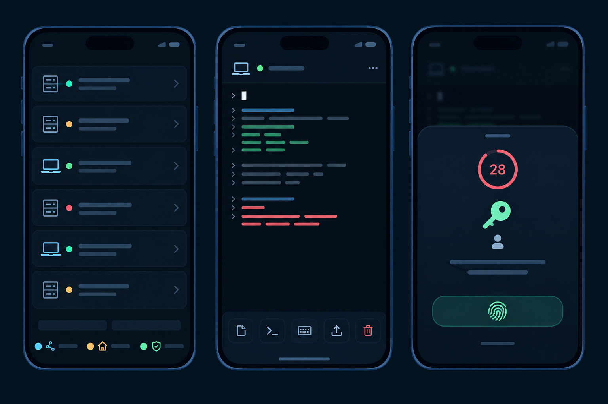
Phase 2B handoff：PWA 的 deviceLabel 送出前以 gateway 相同嚴格規則預檢（≤80 UTF-8 bytes、無首尾空白／control／Unicode Cf，包含 ZWJ／ZWNJ），不相容字元须提示使用者；不放寬伺服器規則。
5.1. Build 設定
[]companion/index.html、vite.companion.config.ts：rootcompanion/、alias@→src、outDirsrc-tauri/resources/companion-web（gitignore）、base: '/'；sw.ts另建為/sw.js。[]package.jsonscripts：companion:build（bun scripts/build-companion.ts）、companion:web（只建 PWA）、companion:dev（vite dev＋proxy 到本機 gateway loopback port）；tsconfig.json與eslint.config.js涵蓋src/companion。
5.2. 狀態機與配對／登入
[]狀態：Unpaired → Claiming → AwaitingDesktop（顯示 SAS）→ RegisterPasskey → LoggedOut → Viewing → Elevated(control|full，倒數) 。[]讀取#p=後立刻history.replaceState清除；localStorage 只存非機密提示（deviceLabel、上次路徑），驗證需要 HttpOnly cookie 加 origin-scoped binding；login body 的 binding 只保存在 memory／sessionStorage，每個 session HTTP 請求加 X-Yzc-Binding，WS 首 frame 傳送，logout／401 時清除，不寫 localStorage／URL／logs。[]status 429 必須 backoff；拿到 registrationTicket 立即停止 polling（避免自行輪替票），消耗票後顯示 registering 而非已完成。claim 回應遺失／502／connection lifetime 邊界錯誤一律提示重新掃描，絕不自動重送 claim。[]WebAuthn 呼叫封裝於src/companion/auth/webauthn.ts；錯誤（取消、無 passkey、不支援）有明確 UI。
5.3. 畫面
[]Home：Session → Space → Agent 清單，狀態徽章（idle／working／blocked／done／unknown）與注意程度排序，重用herdrNormalize.ts／herdrAgents.ts；以events.subscribe即時更新；清單用ScrollArea。[]（2026-10-17）Spaces：Home 以 Space 分組，點進 Space 後顯示該 Space 的 Agents 與 Git 分頁；只在手機端切換畫面，不改變桌面焦點或 workspace。[]（2026-10-17）Git（唯讀）：status 清單、diff 檢視（等寬字型、可橫向捲動、超過行數上限時提示）、log graph（分頁載入，以手機寬度簡化 lane 繪製）、commit detail；沒有任何寫入按鈕；未受信任的 repo 顯示「請在桌面信任此工作區」。如果要沿用桌面的 graph 繪製邏輯，先確認它是純 TS、不依賴 React／Tauri。[]Pane：TerminalView（xterm.js，沿用已 patch 的@xterm/xterm）以 gateway 請求的 cols／rows 渲染（observe frames 固定為該請求尺寸，不能反推實際 PTY），由 PWA 縮放至螢幕寬並支援雙指縮放與平移；不載入剪貼簿 addon（不處理 OSC 52 寫入）；OSC 8 連結經linkHandler確認後才開啟。[]Control：「取得控制」→ passkey 提權 →terminal.control；若owned-elsewhere，顯示「桌面正在控制此 pane，接管後桌面會收到通知」並再做一次 passkey 才送takeover；KeyAccessoryBar（Esc、Tab、⇧Tab、Ctrl-C、Ctrl-D、方向鍵、Enter）；輸入框可選「送給 Agent（agent.prompt）」或「直接輸入」。[]核准提示：Agent 處於 blocked 時，送出y／Enter 前必須顯示 pane 內完整的待核准內容與工作目錄，並需再次點擊確認。[]（2026-10-17，選做）HERDR 0.9.2 以上的terminal.mouse：在 control 狀態下把點按轉成 TUI 滑鼠事件（例如 Agent 的核准選單）。這屬於寫入，需要 control scope 並留稽核紀錄，核准提示規則同上。[]Full Session access（僅在裝置有 full grant 且 policy 允許時出現）：警告頁（等同 shell；「開啟即改變桌面該 tab 幾何；BSP panes 仍並排（≤64 欄只切換 chrome）；桌面 connectors 可能同時存在」）→ 明確確認與新鮮 passkey → 依 Phase 3 協調 connectors 後以手機寬度開啟 → 提供 Ctrl-B prefix 按鈕 → App 進入背景時關閉並協調恢復。
5.4. 韌性與 PWA
[]WS 重連：退避 1 秒 → 30 秒加 jitter，visibilitychange回前景時立即重試；待送輸入一律丟棄並提示，絕不重送；session 過期回登入。[]manifest.webmanifest：name「Yuzora」、display: standalone、品牌色與既有品牌資產產出的圖示。[]Service Worker：只 precache 帶 hash 的 app shell；不快取/api/*、/ws；新版時提示重新載入。[]i18n（zh-TW／en）、觸控目標 ≥ 44px、shadcn 元件優先。
5.5. Testing Strategy
vitest（jsdom）測狀態機、fragment 清除、RPC client 重連不重送、按鍵列對應、以 snapshot fixture 驗證 Agent 投影、接管確認流程；bundle 驗證腳本檢查無外部 URL、無 inline script、SW 與 manifest 存在、大小預算。邊界：WebAuthn 取消、cookie 過期、多分頁同時開啟。
[]真機 WebAuthn：Safari／Android／安全金鑰驗error_on_unsolicited_extensions: true的相容性，特別記錄未請求卻回傳 credProtect／其他 extension 的註冊／assertion；未驗前不宣稱相容，不自動放寬拒絕政策。[]bun run test src/companion— PWA 單元測試通過。[]bun run companion:web— PWA 建置成功並輸出至src-tauri/resources/companion-web。[]bun scripts/verify-companion-bundle.ts— 無外部資源、無 inline script、CSP 相容、SW／manifest 存在、gzip 後總大小 ≤ 2.5 MB。[]bun run lint && bun run typecheck— 靜態檢查通過。
[] Phase 6: Direct · LAN（本機 CA、LAN listener、CA 匯出）
延後 2026-10-17 使用者裁決：只做 Direct · Tailscale，本 phase 延後、不執行。原文與 Spike B 證據保留，等之後另行裁決；status 維持 []。
依 Phase 0 的 LAN 支援矩陣，只在通過的平台開放。Yuzora 產生 name-constrained 本機 CA（私鑰只在 OS keychain），為 <LocalHostName>.local 簽發短效 leaf 交給 gateway；gateway 僅在私有網段介面提供 HTTPS。沒有明文 HTTP、沒有以 IP 登入的替代方式。
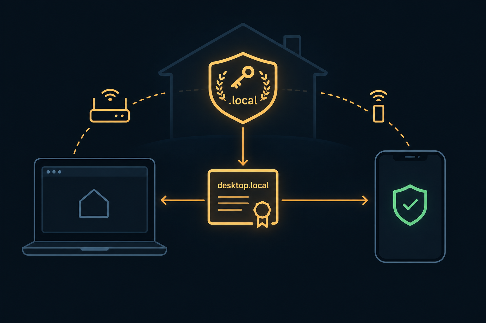
.local 名稱簽證；leaf 90 天自動輪替，私鑰不落地。6.1. companion_ca.rs
[]CA：ECDSA P-256、basicConstraints CA:true pathlen:0、keyUsage keyCertSign／cRLSign、critical nameConstraints 只有一個 permitted DNS<LocalHostName>.local（DNS subtree，含子網域），並以 excluded subtrees 排除全部 IPv4（0.0.0.0/0）與 IPv6（::/0）、效期 2 年；產品 CA 私鑰 PKCS#8 只存 OS keychain／keyring（serviceyuzora.companion.ca），憑證 PEM 存 app data。Spike 的拋棄式 CA key 簽完即刪，不沿用到產品。[]Leaf：SAN DNS<LocalHostName>.local、EKU serverAuth、效期 90 天、剩 30 天自動重簽；leaf 私鑰每次重新產生，只經 admininit傳入 gateway 記憶體。[]主機名稱：macOSscutil --get LocalHostName；Windows／Linux 依 Phase 0 結果；名稱變更 → 需重建 CA 並重新信任（UI 說明原因），不放寬 constraints。
6.2. CA 匯出與信任指引
[]匯出 iOS.mobileconfig（com.apple.security.root，顯示名稱「Yuzora Companion CA (<host>)」）與 Android DER.crt，經儲存對話框輸出；UI 顯示 SHA-256 指紋供手機端比對。[]不提供任何 HTTP 下載端點（避免 CA 被替換）；指引使用 AirDrop／Nearby Share／USB，並說明 iOS「完全信任」開關位置。
6.3. LAN listener
[]使用者在設定中選擇介面；只允許 RFC 1918、ULA、link-local 位址，拒絕公網位址；預設 port 47443。[]tokio-rustls：TLS 1.2+、ALPNhttp/1.1、只用 init 傳入的 leaf；來源 IP 必須為私有位址；Host 必須為<name>.local:<port>；Origin 規則同 Phase 1。[]作業系統防火牆：macOS 應用程式防火牆提示、Windows Defender 規則限定 Private profile，寫入操作文件。[]LAN 配對：同 Phase 2 流程，RP ID＝<name>.local；同一裝置在不同路徑各有一組 credential（依 rpId），需各自配對。[]未通過矩陣的平台：LAN 卡片顯示「此平台不支援」與原因，不提供較弱替代。
6.4. Testing Strategy
Rust 測試以 rustls／webpki 實際驗證憑證鏈；在暫存 app data 目錄中執行以確認私鑰不落地。邊界：name constraints 的 DNS 與 IP-SAN 反例（SAN 與測試 URL 相符，不能以 hostname mismatch 冒充 constraints 拒絕）、主機名稱變更、leaf 輪替門檻、公網來源位址、錯誤 Host。
[](cd src-tauri && cargo test --locked companion_ca_)— CA 含 critical nameConstraints、只有一個 permitted DNS，excluded subtrees 排除全部 IPv4／IPv6；合法 leaf 驗證通過；其他 DNS 名稱與 IP-SAN（含 127.0.0.1／IPv6）leaf 均被 constraints 拒絕；產品 CA 私鑰只在 keychain、未寫入磁碟；輪替門檻正確。[]cargo test --locked --manifest-path src-tauri/companion/Cargo.toml lan_— TLS handshake（信任測試 CA 的 rustls client）成功；公網來源與錯誤 Host 被拒。[]manual: LAN 支援平台的真機配對、登入、observe 通過— 使用者依步驟驗證；另驗同一 CA 的 IP-SAN 反例被拒（SAN 與手機 URL 的 IP 相符），確認手機套用 IPv4／IPv6 排除約束。
[] Phase 7: Web Push 通知
在已安裝且位於 secure context 的 PWA 上，Agent 進入 blocked 或 done 時由桌面直接發送 Web Push（RFC 8291 加密、RFC 8292 VAPID），不需要 Yuzora 雲端。推播內容只含 Agent 名稱與狀態。僅在 Companion 啟用期間運作。
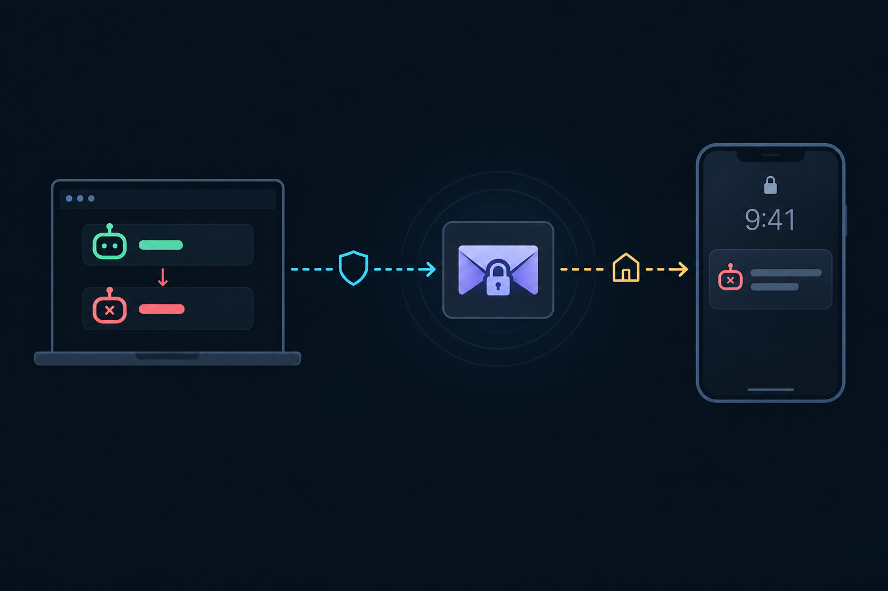
7.1. 訂閱
[]VAPID P-256 金鑰存 keyring；公鑰經hello提供給 PWA。[]PWA 在使用者手勢下請求通知權限並pushManager.subscribe({userVisibleOnly: true, applicationServerKey})，以push.subscribe送出；gateway 送push.registered，桌面寫入 devices.json（0600）。
7.2. 觸發與發送（companion_push.rs）
[]gateway 內部訂閱 allowlist session 的pane.agent_status_changed；轉為 blocked／done 時送push.request{deviceIds, payload}。[]桌面以 reqwest（rustls）發送：aes128gcm 內容加密、VAPID JWT（exp ≤ 12 小時）、TTL 1 小時、blocked 用 Urgency high；同一 Agent 60 秒冷卻；404／410 移除訂閱。[]Payload：{title: Agent 顯示名稱, body: "等待輸入" | "已完成", session, paneRef}；Service Worker 顯示通知，點擊開啟對應 pane（仍需登入）。
7.3. Testing Strategy
以 RFC 8291 Appendix A 測試向量驗證加密；VAPID JWT 以公鑰驗簽並檢查 claims；冷卻與 410 清理以可控時鐘與 mock HTTP 測試；確保 payload 不含 pane 輸出。
[](cd src-tauri && cargo test --locked companion_push_)— 測試向量、JWT、冷卻、410 清理、payload 內容限制通過。[]bun run test src/companion/push— PWA 訂閱流程與通知點擊導向通過。[]manual: iPhone（主畫面 PWA）與 Android 收到 blocked／done 通知— 使用者真機驗證。
[] Phase 8: 強化、文件、發佈與實機驗收
完成威脅模型測試掃描、一次獨立的跨模型家族安全審查、文件與發佈契約更新，並由使用者執行實機驗收矩陣。功能以 Experimental 旗標出貨，預設關閉。
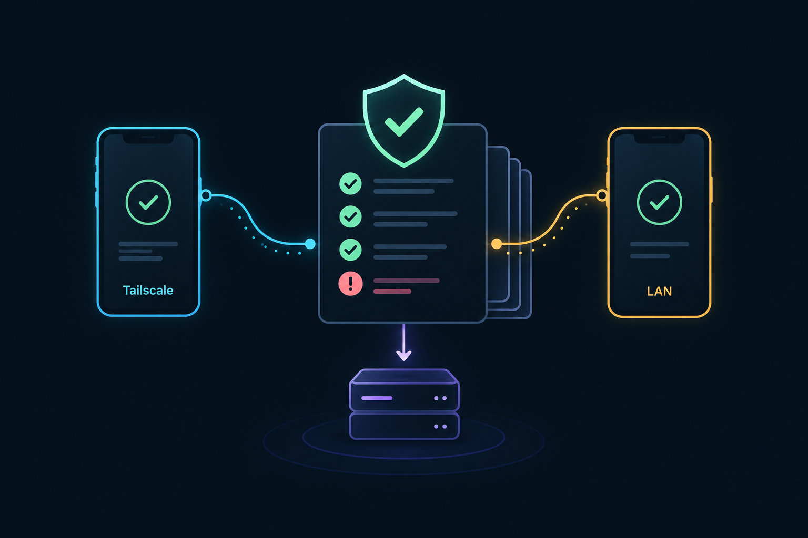
8.1. 安全強化
[]依 Notes 的威脅表逐項補齊測試；admin 與 WS 解析器以表格化惡意輸入測試（截斷 JSON、超長欄位、錯誤型別、未知方法）。[]一次 fresh-context、唯讀、與作者不同模型家族的安全審查（依~/.pi/agent/herdr-agents/README.md的跨家族規則選擇並確認模型）；修正所有 P0／P1 並附回歸測試。
8.2. 文件
[]ADR-0008（原 0007）改為 Accepted，補上 Phase 0 矩陣與最終選型；CONTEXT 術語定稿。[]docs/operations.md：Tailscale HTTPS 啟用、serve port、ACL／Grants 只放行手機的範例、Funnel 必須關閉、CT log 會公開機器名與隨機 tailnet 名稱、手機不能打 tag、LAN CA 安裝與指紋比對（LAN 延後期間省略）、撤銷與疑難排解。[]README.md／README.zh-TW.md：Experimental 說明與「等同授予遠端 shell 權限」警語；CHANGELOG.md新增條目。
8.3. 發佈與 CI
[].github/workflows/companion.yml：companion crate 的 fmt、clippy-D warnings、test（macOS、Windows、Linux）；驗收 workflow 已納入的原生 Windows／Linux build（不能以 target dependency tree 代替），並保留 Phase 2 加入的cargo audit／cargo deny check與具版本、理由、負責人、到期日的 RUSTSEC-2023-0071 例外。[]scripts/verify-host-resources.ts（或新增驗證）與scripts/release-contract.ts涵蓋 sidecar 與companion-web；安裝包解包驗證包含兩者。[]Experimental 旗標：預設關閉；關閉時不啟動 sidecar、不顯示設定頁以外的任何 UI。
8.4. 實機驗收矩陣（使用者執行）
[]iPhone Safari（主畫面 PWA）與 Android Chrome × Tailscale（LAN 延後）：由桌面發起的 serve 設定與綁定、配對與 SAS、passkey 登入、Agent 清單、Spaces 瀏覽、Git 唯讀（status／diff／log graph；未受信任的 repo 被拒）、observe、提權後 agent.prompt、接管與桌面提示、撤銷中斷、啟用期限到期、Yuzora 結束後 gateway 消失。[]公司網路經 Tailscale 連線成功；Funnel 開啟時拒絕啟用；share／tagged device 的請求被拒。
8.5. Testing Strategy
執行下方全域 Validation Commands；實機項目由使用者執行並記錄於 Amendments，代理不得宣稱已完成實機驗證。
[]manual: 驗收矩陣全部通過並記錄— 真實環境行為符合設計。[]manual: 安全審查無未解決 P0／P1— 獨立審查通過。[]git diff --cached --name-only— 輸出為空（代理未 stage 任何檔案）。
Validation Commands
Execute these commands to validate the entire plan is complete:
[]bun run lint— ESLint 全專案（含src/companion）通過。[]bun run typecheck— 兩份 tsconfig 型別檢查通過。[]bun run test— 全部 vitest 通過（桌面與 PWA）。[]bun run build— 桌面前端建置通過。[]bun run companion:build— sidecar 與 PWA 建置成功。[]bun scripts/verify-companion-bundle.ts— PWA bundle 符合 CSP 與大小預算、無外部資源。[]bun run runtime:verify— host／Herdr／companion 資源完整。[]bun run check:version— 版本一致（含 companion crate）。[]cargo fmt --manifest-path src-tauri/companion/Cargo.toml -- --check— companion 格式一致。[]cargo clippy --locked --all-targets --manifest-path src-tauri/companion/Cargo.toml -- -D warnings— companion 零警告。[]cargo test --locked --manifest-path src-tauri/companion/Cargo.toml— companion 全部測試通過。[]cargo tree --manifest-path src-tauri/companion/Cargo.toml -i openssl— 預期不匹配任何套件。[]cargo fmt --manifest-path src-tauri/host/Cargo.toml -- --check && cargo clippy --locked --all-targets --manifest-path src-tauri/host/Cargo.toml -- -D warnings && cargo test --locked --manifest-path src-tauri/host/Cargo.toml— host library 未受影響。[](cd src-tauri && cargo fmt --package yuzora -- --check)— 桌面 crate 格式一致。[](cd src-tauri && ruby ../.github/scripts/verify-clippy-baseline.rb ../.github/clippy-baseline.json)— clippy baseline 完全吻合。[](cd src-tauri && cargo test --locked)— 桌面 crate 全部測試通過。[]git diff --cached --name-only— 輸出為空。[]manual: Phase 0 閘門、Phase 6／7 真機項目、Phase 8 驗收矩陣與安全審查全部完成— 使用者確認。
Notes
術語：Companion login session 是 gateway 的登入／view 工作階段（cookie、TTL、elevation），不是 Herdr Session（named runtime session），也不是 Terminal Session；高風險 full scope 的 UI 名稱統一為 Full Session access，full.* 保留為協定名稱。
決策紀錄
| # | 決策 | 理由 |
|---|---|---|
| D1 | 只做兩條直連：Direct · Tailscale（主要）與 Direct · LAN 2026-10-17：LAN 延後，本期只做 Direct · Tailscale。 | 使用者已驗證 Tailscale 能穿越公司防火牆（WireGuard 打洞，失敗時走 DERP over 443）；不需自建 Orca 式雲端 Relay（director／cell／fence broker／push gateway）。（2026-10-17 註：「已驗證穿越公司防火牆」是使用者的陳述，Spike A 的公司網路項目仍待實機驗證。Orca 37c314bc 的 Relay 營運面更重，就算上游開源，拒絕理由仍成立。） |
| D2 | gateway 為獨立 sidecar crate src-tauri/companion | 權限分離：拿不到 Yuzora 行程內的 DB 憑證、SSH 連線與 keychain 項目；網路依賴不進入會部署到遠端主機的 yuzora-host payload；崩潰隔離。 |
| D3 | gateway 生命週期由 Yuzora 持有（啟用期限、App 結束即停止、stdin EOF 即停止） | 縮短暴露時間；避免無人看管的常駐 listener。常駐模式列為未來工作。 |
| D4 | 不做應用層 E2EE，依賴 TLS | 兩條路徑的 TLS 都在同一台桌面終止（tailscaled 或 gateway）；Orca 需要 E2EE 是因為經過雲端 Relay。少一層自製加密即少一類錯誤。 |
| D5 | 每次連線都要 passkey（UV required），Companion login session 用 __Host- HttpOnly cookie；綁定政策 O1／O2／O3 待使用者裁決（ADR-0008） | UV 證明 authenticator 完成使用者驗證（也可能是 PIN），不保證金鑰不可匯出或硬體綁定；各 scope 的 backup_requirement 依裁決設定。webauthn_rp 0.3.0 僅支援 none／self attestation，目前 stack 無法以 x5c attestation 鏈證明硬體，若要求此能力須重新選型。HttpOnly 降低 token 竊取風險，但不阻止 XSS 代操作；不宣稱已達 SSH＋硬體金鑰等價。 |
| D6 | 權限分 view／control／full；control 需桌面 grant＋passkey 提權＋時限；full 預設關閉 | 「看」與「動」風險等級不同；所有「動」都等同 shell，因此必須可見、限時、可撤銷、可稽核。 |
| D7 | LAN 只走 HTTPS＋name-constrained 本機 CA＋.local；不提供明文 HTTP，也不提供 IP 登入2026-10-17：隨 LAN 延後暫不實作，決策保留。 | 明文下 JS 可被替換、無 secure context；WebAuthn RP ID 不能是 IP。CA 被 constraints 限定單一名稱，外洩時影響面最小。 |
| D8 | Tailscale 路徑額外核對 Tailscale-User-Login，但不取代 passkey | 2026-10-17 修訂：定位為強制的縱深防線，不是 peer 驗證。serve 會先刪除 client 送來的 Tailscale-User-*、Tailscale-Funnel-Request、Tailscale-Headers-Info，再以 WhoIs(SrcAddr) 注入；Funnel、tagged 節點、本機經 serve 進來的流量都不注入（tailscale ipn/ipnlocal/serve.go:1098-1126 @ e3c3ef18），guard 的強制比對因此會一併擋下（guard.rs:94-100，已實作，不改程式）。本機程序直連 127.0.0.1 就能繞過 serve 偽造 header；gateway 看到的 peer 永遠是 127.0.0.1，X-Forwarded-For 也只是 header，所以 whois 在 serve 架構下不可用，日後不得誤加。身分由 passkey 承擔；手機必須以使用者帳號登入 tailnet、不能打 tag。真正的 peer 驗證（tsnet、bind 100.x＋whois）列為未來工作。 |
| D9 | Herdr 只經官方接口橋接、方法白名單、不自動接管；gateway 決定 observe／control 尺寸並忽略 client cols／rows；observe ≥ layout rect，control 預設不送尺寸或使用已知 PTY 尺寸 | snapshot 沒有實際 PTY cols，layout rect 不能當作 PTY 尺寸；改尺寸須確認，release 不自動 restore，至少驗證桌面 connector 下一次 resize。full 不排除 direct control，開啟即改 tab 幾何；須先釋放 gateway control 並通知桌面暫停／恢復 connectors。≤64 欄只切換 chrome，BSP panes 仍並排。 |
| D10 | 範圍限本機 owning host 的 named session 2026-10-17：功能範圍見 D12。 | open_native_client 已拒絕遠端；SSH／WSL runtime 需在其 owning host 另跑 gateway，列為未來工作。HERDR v0.9.5 的 --machine 仍明確拒絕 terminal attach 與 session control（src/cli/target.rs），saved machines 無法取代。 |
| D11 | 推播由桌面直接發 Web Push | 不需雲端；payload 端對端加密到瀏覽器，且只含名稱與狀態（Orca 的推播內容是明文送自家 gateway）。 |
| D12 | （2026-10-17）範圍：HERDR Agents（view／control／full）＋Git 純唯讀（status、diff、log graph、commit detail、branches）＋Spaces 只瀏覽；不含 editor、DB、SSH 與 Git 寫入 | 使用者裁決。Git 函式與 workspace trust 都在 yuzora-host，sidecar 可以直接重用，不破壞 D2；Spaces 是 HERDR workspaces 的投影，名稱與 Agents 已經在 snapshot 裡；repo root 由桌面推送對照，因為桌面有 localStorage 綁定覆寫。完整 workbench 等同 Orca 的 workspace tier（等同以 host 使用者執行指令），仍然拒絕。 |
| D13 | （2026-10-17）Tailscale 綁定由桌面發起：探測 → 確認後套用 serve → QR → 手機 PWA 掃描 → SAS 核准 → 註冊 passkey | 使用者裁決。桌面是唯一的授權中心（Phase 4）；serve 設定一定要經使用者確認，只動自己的 handler；QR＋SAS＋passkey 沿用 Phase 2。 |
| D14 | （2026-10-17）GPUI 暫停期間，Phase 4 沿用 Tauri＋React，Phase 5 PWA 用 React＋Vite；PWA 重用的共用模組維持純 TS | 使用者裁決「GPUI 計畫先暫停，但不是不做」。herdrTypes、herdrNormalize、herdrAgents、xtermTheme、terminalImeHandling、terminalImePositioning 本來就是純 TS；GPUI 恢復時（ADR-0006 P11 會刪除 src/），必須先把它們抽成共用 package。 |
| D15 | （2026-10-17，照預設推進）HERDR 最低版本 0.9.2 | 可以用到 terminal.mouse、events_lost，也和 ADR-0007（saved machines）的 gate 對齊。使用者本機仍是 0.9.1，升級後要在隔離 session 重驗（Phase 3C）。 |
兩條路徑比較
2026-10-17：Direct · LAN 延後，本表保留作為日後重新評估的參考。
| 項目 | Direct · Tailscale | Direct · LAN |
|---|---|---|
| 網址 | https://<device>.<tailnet>.ts.net:8443 | https://<LocalHostName>.local:47443 |
| TLS 終止 | 本機 tailscaled（有效公開憑證）→ loopback HTTP 到 gateway | gateway（本機 CA 簽發的 leaf） |
| 對外暴露 | 無區網 listener；只有 tailnet 內、ACL 允許的裝置 | 選定的私有網段介面；拒絕公網來源 |
| 網路身分 | WireGuard 節點＋Tailscale-User-Login | 無（僅私有來源位址） |
| passkey RP ID | <device>.<tailnet>.ts.net | <LocalHostName>.local |
| 穿越公司防火牆 | 可（取決於公司是否封鎖 Tailscale） | 不適用（同網段） |
| 使用者前置 | 兩端登入同一 Tailscale 帳號、啟用 HTTPS 憑證、確認 Funnel 關閉 | 手機安裝並信任 Yuzora CA、比對指紋、手機能解析 .local |
| PWA／Web Push | 完整支援 | 信任 CA 後支援（依 Phase 0 矩陣） |
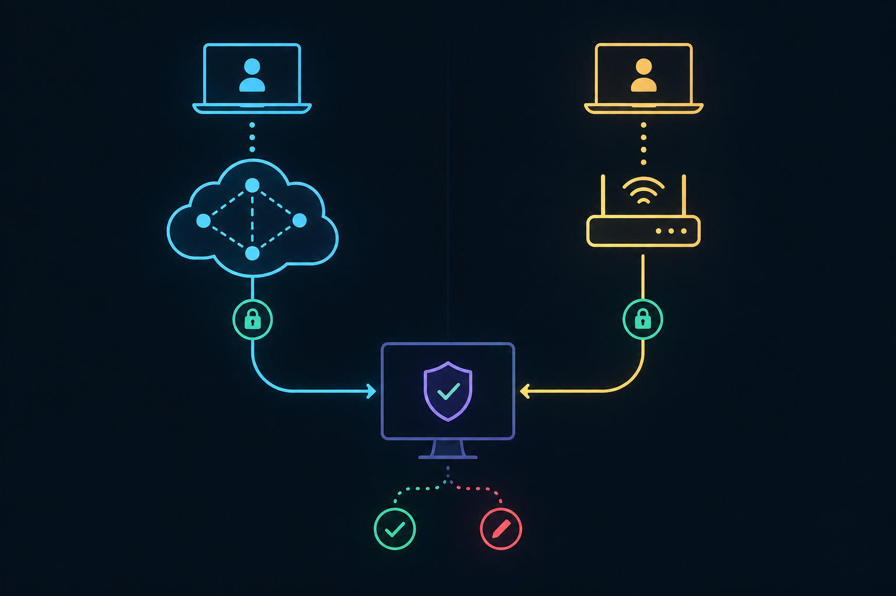
權限模型
| Scope | 可做的事 | 如何取得 | 時限 | 稽核 |
|---|---|---|---|---|
| view | Session／Agent 清單、事件、observe pane | passkey 登入 | idle 30 分、absolute 12 小時、不超過啟用期限 | 登入／登出 |
| control | agent.prompt、pane.sendKeys、pane control（takeover 需再驗證） | 桌面授予 control grant（15 分／1 小時／8 小時）＋passkey 提權 | 提權 ≤ 15 分可續，不超過 grant | 逐筆（輸入只記位元組數）＋桌面 toast |
| full | 完整 Herdr client（等同 shell） | policy 啟用＋裝置 full grant＋每次開啟前新鮮 passkey | full.open 需≤2分鐘內 Full 提權；已開stream≤min(15分鐘, full grant, absolute, enableUntil)，到期自動關閉，full.input 用open-stream token＋Full validity而非2分鐘freshness；App 進背景即關閉 | 開啟／關閉＋位元組數＋桌面通知 |
威脅與對策
| 威脅 | 對策 |
|---|---|
| 手機遺失或未鎖時被拿走 | 每次連線 passkey＋生物辨識；session 短效；桌面撤銷單一裝置或全部；連續失敗鎖定。 |
| 配對 QR 被拍到或轉傳 | 一次性、5 分鐘；只接受一次領取；桌面比對 SAS 後才核准；配對當下綁定 passkey。 |
| 同網段／公網攻擊者 | Tailscale 路徑無區網 listener；LAN 路徑只接私有來源＋TLS；Host／Origin 檢查；無明文 HTTP。 |
| Tailscale 帳號被盜、他人加入 tailnet | passkey 仍是必要門檻；登入者比對；建議 ACL 只放行手機、可開 Tailnet Lock。 |
| iCloud／Google 帳號被盜導致同步 passkey 外流 | 仍需網路可達（tailnet 或同網段）；裝置可隨時撤銷；文件說明風險。 |
| Apple／Google SSO 單點失效：Tailscale 登入與同步 passkey 使用同一帳號 | 單一帳號失陷可能同時取得網路可達性與 passkey，不能把兩者視為獨立因素；Tailnet Lock／device approval 緩解加入網路風險。BE=0 政策可降低同步帳號外洩風險，但仍依賴桌面 SAS 核准及 authenticator 如實回報；依 ADR-0008 的 O1／O2／O3 裁決，不預設採用。 |
| 本機其他程式偽造 Tailscale header | header 只作輔助訊號；passkey RP ID 綁定網域，本機惡意網頁無法完成驗證。 |
| 瀏覽器上 DNS rebinding／CSWSH | 嚴格 Host 與 Origin 檢查；SameSite=Strict cookie。 |
| PWA 遭 XSS | 嚴格 CSP、無第三方 script、HttpOnly cookie；終端機輸出與 Markdown 一律視為不可信。 |
| Agent 輸出夾帶 prompt injection 或惡意跳脫序列 | 不載入剪貼簿 addon；連結需確認；核准 Agent 權限前顯示完整內容並二次確認。 |
| 小螢幕盲目核准 | blocked 狀態的核准畫面必須顯示完整待執行內容與工作目錄。 |
| gateway 漏洞 | 獨立程序、forbid(unsafe_code)、方法白名單、訊息與 stream 上限、白名單外方法全數測試拒絕。 |
| CA 私鑰外洩 | 產品私鑰只在 keychain（spike 簽完即刪）；critical nameConstraints 僅一個 permitted DNS <name>.local subtree 並排除全部 IPv4／IPv6；leaf SAN／Host／Origin／RP ID 仍固定，leaf 90 天輪替且不落地；手機 constraints 與 IP-SAN 反例須實測。 |
| 重連後重送輸入造成重複操作 | client 丟棄待送輸入並提示；server 不緩存輸入。 |
協定草圖
# HTTP（兩個 listener 相同路由）
GET / /index.html /pair /assets/* /manifest.webmanifest /sw.js /icons/*
POST /api/pair/claim {pairingId, secret, deviceLabel, deviceNonce} → {gatewayNonce, sas, claimToken}
POST /api/pair/status {pairingId, claimToken} long-poll ≤25s → {state: pending|approved|registering|rejected|expired|registered, registrationTicket?}
# approved: 每次 status 輪替 ticket（32B base64url，hashed，單次，TTL 2min，approve 後視窗最多10min）
POST /api/pair/webauthn/options {pairingId, registrationTicket} → creation options（先消耗票→Registering；首credential residentKey required，added preferred＋excludeCredentials）
POST /api/pair/webauthn/finish {pairingId, credential} → {deviceId}（pairing→identity 原子完成後才 registered）
POST /api/auth/options {} → request options（discoverable，空allowCredentials）
POST /api/auth/finish {credential} → body {binding: TOKEN32, deviceId, scopes:["view"]} + Set-Cookie: __Host-yzc=…; Secure; HttpOnly; SameSite=Strict; Path=/
POST /api/auth/elevate/options {scope: "control" | "full"} → request options（non-discoverable，policy-filtered allowCredentials）
POST /api/auth/elevate/finish {scope, credential} → {scope, until}（兩scope獨立；full不含control）
POST /api/auth/logout
GET /ws WebSocket（cookie + Origin，首 frame {binding: TOKEN32}）
# 所有 HTTP Session(_) routes：恰好一個 X-Yzc-Binding: TOKEN32；錯誤401/no-store
# TOKEN32＝32-byte CSPRNG canonical base64url-no-pad；cookie 不足以授權
# WS 文字 frame（JSON RPC）
→ {"id":1,"method":"terminal.observe","params":{"session":"work","target":"w1:p2","cols":132,"rows":40}}
← {"id":1,"result":{"stream":7}}
← {"event":"agent.status","data":{"session":"work","pane":"w1:p2","status":"blocked"}}
# WS 二進位 frame
[u32 BE streamId][ANSI bytes]
# admin stdio（NDJSON，desktop ⇄ gateway）
→ {"v":1,"type":"init", ..., "policy":{"enableUntil":"RFC3339 UTC", ..., "passkeyBinding":"o2"}} # o1|o2|o3，缺省o2 provisional
← {"v":1,"type":"ready","ports":{"loopback":47110,"lan":47443}}
→ {"v":1,"type":"pairing.create","path":"tailscale","addToDevice":"optional-deviceId"} ← {"v":1,"type":"pairing.created","pairingId":"…","url":"https://…/pair#p=…","expiresAt":"RFC3339 UTC"}
← {"v":1,"type":"pairing.claimed","pairingId":"…","sas":"482913","deviceLabel":"iPhone","via":"tailscale","tailscaleLogin":"…","userAgent":"…"}
→ {"v":1,"type":"pairing.approve","pairingId":"…"} # 或 pairing.reject／pairing.cancel
← {"v":1,"type":"pairing.state","pairingId":"…","state":"approved","reason":"approved"}
→ {"v":1,"type":"device.update","deviceId":"…","label":"iPhone","grants":{"control":{"until":"RFC3339 UTC"},"full":false}}
→ {"v":1,"type":"device.unlock","deviceId":"…"}
← {"v":1,"type":"command.deferred","command":"device.revoke","target":"…","committed":true} # 已提交，不是 error；maintenance 補正常 state event
← {"v":1,"type":"device.registered","device":{...,"credentials":[{...,"publicKeyState":"base64url-library-state","stateFormat":"webauthn_rp-0.3.0-static"}]}}
← {"v":1,"type":"device.updated","device":{...}} # added credential／counter／lockout snapshot
← {"v":1,"type":"auth.outcome","ceremony":"login","outcome":"succeeded","deviceId":"…"} # best-effort，無秘密
← {"v":1,"type":"audit","deviceId":"…","scope":"control","action":"agent.prompt","summary":"…"}
→ {"v":1,"type":"device.revoke","deviceId":"…"} → {"v":1,"type":"shutdown"}
Herdr 多 client 語意（v0.9.1 原始碼與 Spike C fixtures）
- observe：可多人同時看；input／resize 會被 Herdr 靜默忽略，gateway 須先擋 view 寫入（
src/server/headless.rs:1365-1387）。frame 固定為請求尺寸，小尺寸會裁切；gateway 取不小於 layout rect 的尺寸、不取手機 viewport，PWA 再縮放／平移；frame 與 layout rect 均不能證明實際 PTY cols。 - control：每個 terminal 只有一個 direct control owner；
--takeover會讓原 owner 收到terminal attach taken over並斷開，並把 pane PTY 改為控制者尺寸、加上direct_attach_resize_locks（headless.rs:1849-1905）。release 後 PTY 不會自動恢復；至少須驗證桌面 connector 下一次 resize 的恢復行為。 - 完整 client／Full Session access：開啟即取得 tab 幾何並重排，不是等首次輸入才改變（
headless.rs:1273、server/headless/client_views.rs:689-708；Spike C 開啟前後 fixtures）。寬度 ≤ui.mobile_width_threshold（預設 64）只切換 mobile chrome，BSP panes 仍並排（src/config.rs:78、src/client/shell/mobile.rs）；full 不排除 direct control，兩者仍可同時寫。gateway 須先釋放同 session 自己的 control streams，透過full.state{session, open}協調桌面依 ADR-0004 暫停 connectors（或警告），關閉後恢復；不是 Herdr 的互斥保證。 - 遠端：Herdr 自身的遠端控制是 SSH stdio bridge（
src/remote/host.rs:6-36、src/remote.rs:13-37），沒有網路 listener 或驗證。 - Yuzora 現況：被接管時顯示「已由其他視窗取得控制」並提供手動取回，不會自動搶回（
src/app/panels/HerdrTerminalPage.tsx:92,1241-1243,1469）。
拒絕的方案
- Orca 式 LAN 明文 ws＋NaCl：JS 可被同網段攻擊者替換；無 secure context，不能用 passkey、SW、推播。
- 自建雲端 Relay：需營運 director／cell／push gateway；Tailscale 已提供穿牆能力。
- Tailscale Funnel、Cloudflare Tunnel、公開反向代理：服務暴露於網際網路。
- gateway 放在 Tauri 主程序內：與 DB 憑證、SSH 連線、keychain 權限同處一個行程，影響範圍最大。
- gateway 做成
yuzora-host的新 lane：網路與 WebAuthn 依賴會進入每一台遠端主機的 helper payload。 - 以 Herdr plugin
startup承載 gateway：沒有停止機制與程序監管。 - 原封不動轉發 Herdr API socket：會暴露
server.stop、plugin.link、integration.install、command.invoke等高風險方法。 - 把完整 Yuzora UI 投射成 web client（Orca 的 runtime scope）：權限過寬，且不適合手機。
風險與未來工作
- 公司日後可能封鎖 Tailscale 控制平面或 DERP；也請先確認公司政策是否允許。
- iOS 將 PWA 移到背景時會暫停 WebSocket；通知依賴 Phase 7 的 Web Push。
.local解析與.localRP ID 在部分 Android／Windows 環境可能不可用（Phase 0 矩陣決定）。- Tailscale CLI 的 JSON 欄位可能變動；以 fixture 測試並在探測失敗時停用 Tailscale 路徑。
- 新 Rust crate 的供應鏈風險；Phase 0 選型需檢視維護狀態與授權。
- 未來工作：SSH／WSL runtime（在各 owning host 執行 gateway）、Yuzora 關閉時仍能推播（Herdr plugin event hook
pane.agent_status_changed）、可選的常駐 gateway、iPad 版面、多台桌面切換。 - （2026-10-17）啟用 Tailscale HTTPS 憑證後，機器名會進入公開的 Certificate Transparency log（kb/1153）；設定頁與 runbook 必須警示，可以改用隨機的 tailnet DNS 名稱。
- （2026-10-17）未來工作是做到真正的 peer 驗證。N1：tsnet／libtailscale 內嵌（Rust 沒有官方綁定，而且需要 Go runtime）。N2：gateway bind tailnet IP＋
tailscale cert＋每個連線做 LocalAPI whois（會改變 D4，macOS 各版本的 LocalAPI 存取方式不同）。N3：--accept-app-caps的 App Capabilities header 只能當縱深防線。詳見主樹 delta 研究報告第 3 節。 - （2026-10-17）diff、commit detail、FileAtRev 會把原始碼送到手機；Git 讀取要求哪個 passkey 等級，待使用者確認（見 Phase 3D 開放問題）。
依賴（候選，Phase 0 定案）
- companion crate：
yuzora-host（path）、axum（ws）或 hyper＋tokio-tungstenite、tokio-rustls、rustls（ring）、WebAuthn RP 驗證套件（不得依賴 OpenSSL）、hmac、sha2、rand、base64、serde、zeroize。 - desktop crate：rcgen（ring）、qrcode、純 Rust Web Push 加密／VAPID 實作；沿用既有 keyring、reqwest（rustls）。
- 前端：不新增套件；沿用已 patch 的
@xterm/xterm、@xterm/addon-fit、i18next、shadcn 元件、lucide-react。
參考
- Orca：
mobile/src/transport/mobile-connection-path-label.ts（Relay／Direct · Tailscale／Direct · LAN）、src/shared/tailnet-address.ts、src/main/runtime/rpc/mobile-socket-wiring.ts:149（只有 Relay 強制 v2 加密）、src/main/runtime/rpc/static-web-client-handler.ts、cloud/README.md。 - Herdr：Persistence and remote access（第三方 bridge 使用 observe／control）。
- Tailscale：Tailscale Serve（identity headers、Funnel 不帶 header、backend 只 listen localhost 的建議）。
- 2026-10-17 delta 研究：主樹
.yuuzu/specs/remote-control-orca-tailscale-delta-2026-10-17.html（Orca 37c314bc、Tailscale e3c3ef18ipn/ipnlocal/serve.go:1098-1126、HERDR v0.9.5src/cli/target.rs、kb/1080、kb/1153）。 - WebAuthn Level 3（RP ID 不可為 IP、UV 旗標）、RFC 8291、RFC 8292。
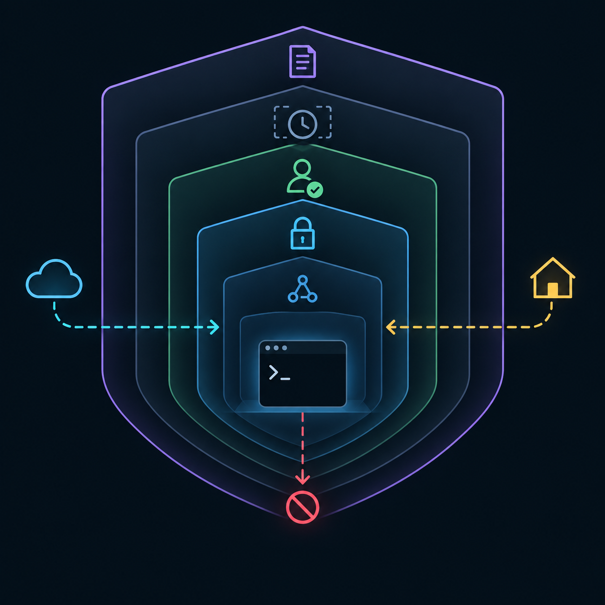
Amendments
以下保留修訂歷史；Phase 0 的後續真機結果與 LAN 支援矩陣仍以附加方式記錄，不將自動化證據當作實機驗收。
2026-09-27 — Companion ADR 改編號 0007；GPUI 關係與 Phase 0 證據
經計畫作者核准，Companion 由原預定 ADR-0006 改為 ADR-0007；ADR-0006 已由另一提案「原生 GPUI 桌面與完全移除 Tauri」（Proposed）使用。既有 forward refs／檔案與驗證參照同步更正。
gateway 為只依賴 yuzora-host 與 admin stdio 協定的獨立 sidecar，Phase 1–3 不依賴桌面殼層。Phase 4 整合取決於 GPUI 提案是否核准；Phase 5 React＋Vite PWA bundle 與「安裝包不含 React、Vite 或前端 bundle」衝突，待使用者裁決例外、非 React PWA 或資產不進安裝包，本輪不自行決定。
Phase 0 自動化證據見 RUNBOOK、Spike C REPORT。observe 44×30 是裁切；control resize 可改 PTY 而 layout rect 不變；full client 的 mobile chrome 不會把 BSP panes 自動改成單欄。Tailscale iOS／Android 全部待驗證；LAN 支援矩陣（iOS／Android × macOS／Windows／Linux）的解析、信任、反例、secure context、SW、passkey 全部待驗證（待使用者實機）。尚無 LAN 平台標為支援，Phase 0 整體保持 [wip]。
2026-09-27 — WebAuthn RP 選定 webauthn_rp =0.3.0；challenge 修訂為 128-bit
經計畫作者核准，選定精確 pin webauthn_rp = "=0.3.0"（MIT OR Apache-2.0）。其 Challenge 型別固定 u128，CSPRNG 產生的 16 bytes 符合 WebAuthn L3 §13.4.3 至少 16 bytes；Phase 2.2 由原32 bytes 改為128-bit，仍單次使用、TTL 2分鐘。配對 secret 與 session id 各32 bytes不變，沒有自行手刻 WebAuthn。
ES256 軟體 authenticator 註冊／登入與 origin、rpIdHash、UV／UP、challenge、signCount、signature、BE／BS 負向測試通過；macOS 實編譯通過，macOS／Windows x86_64／Linux x86_64及aarch64 dependency trees 無 OpenSSL／openssl-sys／aws-lc。其他平台尚未實編譯；EdDSA／RS256 是 API 支援而非本輪實跑。
HTTP／WS 選 axum0.8.9，TLS tokio-rustls0.26.5＋rustls0.23.45（ring、禁default）；後期候選 rcgen0.14.10、qrcode0.14.1、web-push-native0.5.0。詳 DEPENDENCIES。webauthn_rp 單一維護者、自架repo、最後發布2025-04-03；保留供應鏈風險，採精確pin、lock checksum與升級人工審閱。
2026-09-27 — Phase 1 安全外殼；Phase 1–3 與手機閘門並行
經 parent 核准，Phase 1–3 可與使用者執行 Phase 0 手機閘門並行；Phase 4+ 仍須等 Spike A 通過，Phase 0 整體維持 [wip]，不宣稱手機／Tailscale／LAN 實機已驗收。
Phase 1 完成獨立 yuzora-companion 0.0.16 crate／lock、host wire 有界 admin NDJSON、5 秒 init deadline、EOF／shutdown 關閉 loopback listener 與連線、guard／靜態檔及三平台 CI。僅 bind 127.0.0.1；不啟動 Herdr、不接受 LAN、不開 WS（/ws 一律拒絕）。WS 1001 close 與 Herdr stream teardown 要在 Phase 3 建立該類連線時接入，目前不存在可關閉的 WS／Herdr stream。
依 supervisor 安全裁決，直接依賴既有解析版本 hyper =1.11.1、hyper-util =0.1.21，只開 HTTP/1，以 hyper 唯一 parser 限制 header 64 個／16 KiB、header read timeout 15 秒；router 處理逾時 15 秒、body 64 KiB、同時 TCP 連線 64、單一允許 login／loopback 共用 token bucket（burst 60、每秒補 10）。不信任 X-Forwarded-For。RFC 2047 B 用核准的 base64 0.23，Q 嚴格解碼；login 大小寫敏感、DNS Host 大小寫不敏感，Origin exact match。
安全標頭適用範圍澄清為 gateway router 產生的所有回應（包含錯誤）。hyper 在路由前自行拒絕的 400／408／431 可不含安全標頭；拒絕自寫 preflight HTTP parser，避免兩個 parser 的解讀差異造成 desync／request smuggling。靜態 bundle 僅接受 literal 路徑（所有百分號編碼都拒絕，包含雙重 traversal）；canonicalize 後不得逃逸 webRoot，單檔讀取最多 16 MiB。
本機 aarch64-apple-darwin：fmt、clippy -D warnings、21 tests 與各 prefix 篩選通過；完整 host path dependency graph 無 openssl／openssl-sys／aws-lc-sys，Windows／Linux target trees 無 openssl-sys；YAML 語法檢查通過。Windows／Linux native compile/test 與 CI 執行仍待後續，symlink 測試限 Unix。Phase 2 接入 pairing／WebAuthn／session 與 policy enforcement；不得把 Tailscale login header 當成驗證。
2026-09-27 — Phase 0 review 與 fixes 同步至後續計畫
來源：Phase 0 review cb6e3e30-8239-494c-ada6-843d2fea120f/companion-review-p0/review.md（尤其 Q8），及 fixes 75e3f3aa-8841-485f-9235-205b8c440c5b/companion-p0-fix/report.md；對照 Spike C REPORT 與 ADR-0007（Proposed）。本次僅同步計畫，不執行產品實作或手機驗收。
- Phase 0 同尺寸 control 不重排改回待驗（headless 已驗；Yuzora 桌面待使用者實機）；live 證據限隔離路由未送命令與目錄 metadata 比對。ADR forward ref 改為已建立 Proposed，移除過時「尚無修訂」說明，其餘既有狀態不變。
- Phase 2.2／2.4：O1／O2／O3 綁定政策須先由使用者裁決，再設定各 scope 的 backup_requirement；明設 allowed_origins（含 port）、residentKey preferred、UV required、TTL 120000 ms 與 credProtect 決策。測試補 discoverable／non-discoverable、BE=1/BS=1 註冊、create／get type 互換、crossOrigin:true、userHandle／credential-id 不符與 EdDSA／RS256。Phase 2 即加入 audit／deny CI；RUSTSEC-2023-0071 例外須記版本、理由、負責人、到期日。
- Phase 3.1／3.3／3.5：先找官方實際 PTY cols/rows 來源；gateway 忽略 client 尺寸，observe ≥ layout rect、不取手機 viewport，control 預設不送尺寸或用已知 PTY 尺寸。改尺寸須確認、release 不自動恢復，至少驗證桌面下一次 resize；full.open 先釋放自己的 control streams，以 full.state 協調桌面暫停／恢復 connectors（或警告），open 即改幾何且 full 不排除 control。gateway 擋 view 寫入，不期待 Herdr observer 回錯；pin 0.9.1 的 owned-elsewhere／taken-over／server is shutting down → session-stopped fixtures，先查 running，禁止把啟 server 建議變成按鈕；補對應邊界測試。
- Phase 4／5 顯示 GPUI（ADR-0006，Proposed）blocked 與 Phase 4+ 的 Spike A 手機閘門。Phase 5.3 統一 Full Session access，警告開啟即改 tab 幾何、≤64 欄只改 chrome、BSP panes 仍並排與桌面 connectors 可能並存；observe frame 固定請求尺寸，PWA 縮放／平移。
- Phase 6.1／6.4：critical constraints 僅一個 permitted DNS subtree，excluded 全部 IPv4／IPv6；補 IP-SAN 反例與手機驗證。產品 CA key 只在 keychain，spike 簽完即刪。Phase 8.3 保留原生 Windows／Linux build 驗收及 Phase 2 audit／deny 與限期例外。
- Notes：D5 中性描述 UV 與未決綁定政策，不宣稱不可匯出／硬體等價；目前 stack 不支援 attestation 鏈硬體證明。D9／多 client 語意依實測更新，新增 Apple／Google SSO 單點失效與 Companion login session／Herdr Session 術語區分。append-only metadata 記錄本次時間與 worker。
Phase 0 仍為 [wip]，ADR-0007 仍 Proposed；O1–O3、credProtect 與 GPUI 未在本次代作裁決。手機、桌面 UI、其他平台 CI 與產品測試仍依各 Phase 驗收，不因計畫更新視為通過。
2026-09-27 — Phase 1 review fixes 與 Phase 2–4 前置同步
來源：review 8fd2a13c-56c0-4bdf-bb2e-eb307139c8ec/companion-review-p1/review.md（Phase 2 應沿用或調整的地方），及 fix 8b45b8bb-39f5-426e-a29f-f25535a54805/companion-p1-fix/report.md（Parent 必須套用的計畫更新，10 項）。本次只同步計畫；以下取代先前 Phase 1 歷史紀錄的 framing、timeout、依賴與測試數描述，不修改既有歷史條目。
- Phase 1.1–1.2：已完成項目縮限為實際 HTTP／listener teardown；共用 protocol 16 MiB bound、companion-local zeroizing growth reader、版本優先兩段解析及單一 stdout writer（64-slot bounded mpsc、FIFO、flush ACK、bounded teardown）。frame owner 與 PEM 欄位可擦除，但 serde_json scratch、Tokio stdin blocking buffer、BufReader 仍可能留有未擦除副本，不宣稱全程序記憶體清零。
- Phase 1.3–1.4：accept 重試／退避；唯一 Route 邊界；header／body 各 15 秒、handler 預設 15 秒／LongPoll 26 秒、非-upgrade connection 含寫出 60 秒，pinned Hyper keep-alive idle 實測約 15 秒。publicHost 必須 canonical；body transport error 回 400，只有長度超限回 413。靜態 segment charset、dotfile／ADS／Windows device aliases 拒絕、MIME 補齊、ReaderStream＋16 MiB metadata cap；安全標頭沿用 router 回應範圍與 pre-router 例外。
- Phase 1.5：不啟用 axum ws；CI PR＋manual、vendor path、loop 逐一拒絕 openssl／openssl-sys／aws-lc-sys／aws-lc-rs／native-tls；本機另確認 tungstenite／sha1 不存在。版本 checklist 納入 companion Cargo.toml 與 lock 的 companion／host entries；runbook 後續同步。fix 報告為兩輪各 34 Rust tests、11 version tests，涵蓋 trickle／keep-alive／slow-reader；Windows／Linux native CI 與獨立 reviewer gate 仍待完成。
- Phase 2.0–2.2：新 endpoint 沿用 Route method／path／scope／deadline 與 guard → body → dispatch → uniform headers，更新 inventory guard test；pair/status 採 26 秒 class；API GET 須 exact Origin 或 Sec-Fetch-Site same-origin，GET 不得改狀態。分離靜態／auth／pairing buckets 與 pairing 失敗計數，Phase 6 LAN 再加 per-listener／per-IP 有界表；rp.id／Origin 同源於 canonical publicHost，解析／執行 enableUntil、到期自行關閉 listener，devices 改 typed。
- Phase 3：才重新加入 axum ws；idle／pong、1001 shutdown、4401 revoke、WS／HTTP permits 分帳及對應測試，不沿用 HTTP 60 秒 cap。Phase 4：Serve target 明定 http://127.0.0.1:<port>，禁止 localhost／IPv6 解析歧義。
保留既有狀態標記；Phase 1 的 [x] 不代表 pairing／auth／WS／LAN 已實作，也不代表 Phase 0 手機閘門、原生跨平台 CI 或獨立審查已通過。本次未執行 cargo、browser、Herdr 或網路操作。
2026-09-27 — Phase 1 follow-up N1–N6；Phase 2 前安全邊界
來源：review 75d674f8-07a8-4a19-816a-c5d1b0ea8d9f/companion-review-p1-fix/review.md「新發現」及「Phase 2 開始前」1–2、6；實作證據見 6c9e768a-6c85-4288-8624-9540e55e3abd/companion-p1-fix2/report.md。本筆修正先前歷史中的硬性 HTTP 60 秒 cap 與 enqueue／ACK 1 秒描述，不覆寫歷史。
- N1：60 秒開始 graceful shutdown，停 keep-alive、完成進行中的請求，再給 60 秒 bounded grace；idle 立即關閉，slow-reader 仍受界限保護。測試注入短期限，重用連線上的慢 handler 完整送出後才斷線。
- N2／N3／N4／N6：rate 測試按經過時間計算 refill 上限；唯一 fallback source-contract 禁止其他路由註冊；scope 在 Phase 2 auth 前一律 fail-closed；文字契約正規化 CRLF，禁用套件不會因 Windows 換行而漏判。
- N5：handler 非阻塞 try_emit，入列不等於寫出，queue full 回固定 503；lifecycle ready／error 才等待 ACK。只有 writer 的逐筆 IO deadline 判斷 stdout 故障；writer 結束令 gateway 關閉並輸出固定 stderr。慢而存活 stdout 不會因總排隊超過 1 秒而誤關閉。
- 驗證：兩輪各 48 Rust tests、fmt／clippy、五個 native TLS 禁用依賴檢查通過，8 組 mutation 預期失敗後恢復全綠；未執行 browser／Tailscale／Herdr 或非-loopback listener。Windows／Linux native CI 與獨立 reviewer 仍待完成。
本輪僅修 Phase 1 邊界；policy.enableUntil enforcement、typed devices、auth／pairing 分桶仍依既有 Phase 2 計畫，未提前實作。未新增 production endpoint，既有狀態標記保持不變。
2026-09-27 — Phase 2A：配對、typed devices、policy 與 session infrastructure
經 parent 核准，2A 不加入 webauthn_rp，不做實際 WebAuthn／登入發行 session；O1／O2／O3 已存成 typed policy，缺省 O2 僅 provisional。新端點全部經同一 Route／guard→body→dispatch→uniform headers；靜態／API 各一有界 bucket，API GET 要 exact Origin 或 same-origin Fetch Metadata。UTC enableUntil 到期獨立關 listener／HTTP connections，error policy-expired、非零退出。
配對採 tailscale-only、5 分鐘 TTL、4 live／16 records 上限、5 次失敗或第二次領取作廢。claimToken／registration ticket 皆為 32-byte base64url、僅保存 SHA-256、constant-time 比對；SAS 使用無 modulo bias 的 byte rejection。status 改 POST，最多25秒回應，pending timeout 不作廢。依本輪 supervisor 補充裁決，approve 後 status 可輪替票以容忍手機遺失回應：舊票立即失效、2分鐘 TTL、approve 起10分鐘總視窗；consume 後回 registered（表示票已消耗，非已完成 WebAuthn），不再發票。cancel{pairingId} 對手機回 rejected；grants.control 採 {until}|null。
typed Device／CredentialRecord 嚴格欄位、ID／base64url／長度／UTC 驗證；COSE 語意及 passkey 旗標驗簽留2B。session store／cookie／idle／absolute／elevation cap 與 device.update／revoke／unlock 即失效完成，只有 cfg(test) 能建立 session；WS close4401留Phase3。9 組安全 mutation、真 loopback／paused clock／子程序 expiry／stdout 無洩密測試詳 companion-p2a/report.md。fmt／clippy、連續兩輪各76個測試、native TLS 禁用依賴與 HTML 檢查通過；獨立 reviewer 與 Windows／Linux native CI 尚待完成。
2026-09-27 — Phase 2A review fixes（2B 前）
來源：獨立 review 608ffb40-fb91-4d5a-a158-b85a5c93f8ca/companion-review-p2a/review.md；實作與逐项證據見 ed7d3117-2312-49f5-882c-8abe72e7450e/companion-p2a-fix/report.md。本筆取代初始2A「consume＝registered」、「device/reject/cancel 一律 enqueue-first」與 cookie-only 語意，保留歷史 Amendment 不改寫。
P1-1～4：收緊／neutral 先提交、bounded latest pending state 重試與 command.deferred committed:true；mixed grants 拒絕、桌面先收緊再擴權；Registering 可取消並限制120秒／總視窗；AuthContext＋持鎖重新授權；parent 裁決 mandatory origin-scoped binding，Phase4同 host Serve 警告／任何 port Funnel 拒絕，Phase5 memory/sessionStorage 與 polling/claim 韌性配套。P2：entry expiry 重查、byte-wise cookie、devices 私有／elevate RP、嚴格 UTC、Cf label、reserved event 修正、direct features 精簡及缺漏測試；session maxDevices×4／purge expired。
27組受控 temporary-revert 已逐項 red→green（含 compile-fail privacy doctest）；本機 fmt／clippy、最終連續兩輪各87項 tests（含1項 doctest）通過，HTML balanced／template token 數量為0，五個禁用套件皆無，protected diff／staged list 為空。未實作 WebAuthn、production session issuance、WS、Serve/Funnel 探測或 PWA；跨平台與獨立 reviewer gate 仍待執行。host／postgres 仍透過 feature union 引入 iana-time-zone／chacha20／thread_rng，未修改禁止範圍。
2026-09-27 — Phase 2B：WebAuthn、獨立提權與 supply-chain fail-closed
parent 核准 webauthn_rp =0.3.0＋Relaxed parsers、明確 UV required／none attestation／120秒／不請求credProtect／ES256 EdDSA RS256；O2 provisional，O1全scope BE=0、O2只有control/full要求BE=0、O3任何UV。首credential discoverable required，額外credential經 addToDevice 新配對 preferred＋excludeCredentials。各scope套library backup_requirement並另查verified BE/BS。成功登入新cookie＋origin binding，control/full slots獨立，rollbacks或五次failure tightening-first鎖定；signCount/lastSeen neutral commit-first／bounded latest snapshot。
依parent追加裁決，publicKeyCose 改為 publicKeyState＋必填 stateFormat="webauthn_rp-0.3.0-static"；用library Encode/Decode、key validation、decoded≤2058 bytes，不自行實作COSE verifier；升library必須遷移或重新配對。deviceId同為CSPRNG16-byte userHandle。2A複審40883d91 N1–N5：raw-ID API縮限、AuthContext可重驗任意scope（401／403區別）、專用pairing→identity finish、不准async authorization closure、保留嚴格Cf label、每device4 sessions淘汰最舊；全域cap與purge保留。
本機三演算法真loopback註冊登入、負向flags/origin/type/RP、O1/O2/O3、lockouts、cancel/expiry/replay、add≤8、session/binding與提權測試；8組UV／origin／O2 control BE／5-fail／rollback／userHandle／fresh-cookie／cancel-finish temporary-revert red→green。fmt／clippy與最終兩輪測試、禁用套件、HTML、protected/staged結果詳 companion-p2b/report.md；獨立reviewer、Windows/Linux CI與手機仍待驗。
供應鏈閘門未過，Phase2保持[wip]：已加入pin cargo-deny0.20.2／cargo-audit0.22.2（舊工具無法parse CVSS4）；licenses/bans/sources通過，但host→tiberius0.12.3→tokio-rustls0.24.1→rustls0.21.12→rustls-webpki0.101.7仍有RUSTSEC-2026-0098（URI constraints）、0099（wildcard constraints）、0104（CRL parsing panic）；host→tiberius→rustls-pemfile1.0.4另有RUSTSEC-2025-0134（unmaintained）。未新增ignore或修改host，CI保持fail-closed，parent另案處理。test rand0.8.5窄升0.8.6消除RUSTSEC-2026-0097。
唯一advisory例外RUSTSEC-2023-0071／rsa0.9.10：production RS256只做公鑰驗簽、VAPID ES256、不做RSA私鑰操作；owner Yuzora maintainers、review-by2027-03-31，contract測試防逾期。parent另核准既有option-ext =0.2.0限定MPL-2.0 license例外（host→dirs→dirs-sys），不全域允許MPL；未修改crate、file-level copyleft，Phase8需附notice／source availability；0BSD／CC0／CDLA-Permissive加入allow。詳 src-tauri/companion/DEPENDENCIES.md，不更改歷史spike。
Phase3先驗WS首frame binding（不能query），驗前不接受RPC；revoke/lockout/logout/expiry/降權須主動close4401；所有寫入用AuthContext＋with_authorized重驗並在同步鎖內決定，不把future延後無條件執行。Phase4持久化schema與Phase5 label/binding handoff已同步；ADR-0007政策文字仍需parent在授權範圍另行更新。
2026-09-28 — Phase 3A：WebSocket infrastructure；Herdr 留 Phase 3B
本輪只改companion與Phase3計畫。重新啟用axum ws，tokio-tungstenite0.29.0握手／framing、sha1僅RFC6455 Accept key（不是auth雜湊）；仍禁止openssl／native-tls／aws-lc*。Hyper是唯一HTTP parser，OnUpgrade經有界queue與同一JoinSet追蹤，沒有detached on_upgrade callback；HTTP64與WS16 permits分帳，驗後identity registry每device2 peers，Drop回收。首frame5秒type=auth＋binding、cookie不授權、query拒絕、失敗4401不透漏細節。
identity所有session移除集中於invalidate_session／invalidate_device，同鎖watch通知revoke／update降權或neutral／unlock／lockout／added credential／logout／expiry／eviction；enableUntil也送4401，正常shutdown1001。RPC registry含18方法，每call with_authorized(scope)同步決策，hello與session.ping有效、其餘not-implemented；unknown-method不斷線、403映射elevation-required。2B複審P2-5移除AuthContext.scope，contract禁止ctx scope讀取；其餘2B findings依parent留後續修正回合。
parent核准：Text/Binary應用活動需with_authorized(View)成功才延長登入idle，Ping/Pong只維持WS liveness。ping20秒／pong20秒、無client frames5分鐘idle、64KiB／rolling50msg/s／4MiB outbound＋256-message queue；3A overflow或write停滯20秒close1013，close送出最多250ms後回收，server500ms join後abort。session.opened／closed只best-effort、無秘密。3B須加入stream與Herdr IO的原子授權/撤銷邊界，不可把目前同步placeholder決策改成解鎖後無條件async寫入。
schema修正經parent核准：實際request.oneOf有103方法，原129混入26事件；fixture另列26 event kinds與3 subscription events，來源隔離Spike C schema.txt、與parent保存的/tmp/herdr-0.9.1-schema.json完全一致。無呼叫Herdr。3A只鎖closed method registry與plan3.2明確deny，3B才加mapping；不虛稱129個request methods或現有mapping已驗收。
真loopback／paused clock涵蓋所有主動4401路徑、真WebAuthn提權前後scope、shutdown1001、80秒WS存活、獨立permit上限/回收、ping/pong、oversize1009、rate1008；slow-consumer預填同一production queue且暫停writer，loopback驗1013與byte permits，不宣稱OS網路壅塞實驗。六組security temporary-revert全數red→green；fmt/clippy、兩輪cargo test與HTML/protected/staged檢查詳report。deny licenses/bans/sources通過，advisories仍只有既有Host TLS四筆，未新增ignore；獨立review、跨平台native CI與手機閘門仍待完成，Phase3維持[wip]。
2026-09-28 — Phase 2B review fixes：P1-1 與 P2-1…P2-9
依獨立review及parent裁決，只對簽章已驗證政策違規計入五次lockout；其他錯誤不計、rollback仍立即lock；失敗auth.outcome.deviceId=null，已locked不重複通知。沿用3A已移除AuthContext.scope與主動WS失效。403區分Scope not granted／Elevation required，WS對應scope-not-granted／elevation-required。
login pool≤48 FIFO、registration≤16且每pairing1、elevation≤maxDevices×4且每session1可取代；options失敗回復Approved並保留原視窗／fresh ticket；registration finish依challenge查找再比pairing。parent核准唯一專用elevation options在identity鎖內prune失效sessions及插入ceremonies，固定pairing→identity→ceremonies鎖序；不從任意authorization closure取得ceremonies，finish先釋ceremonies才取identity／pairing。
user.name固定yuzora-companion；parent追加裁決：Nickname轉換必須不改原label才使用displayName，否則None（wire空字串），避免新增label限制或自訂JSON修改。L3註冊三欄交叉比對、BE=1/BS=0與六種transport、RSA lock恰一筆0.9.10 contract；Phase5加unsolicited-extension真機清單。
parent核准O2證據：cfg(test)-only seam只讓BE=1通過options篩選；單移除library／app層仍各自403，兩層同移除才200 red，兩組單層source contract也各red。P2-4 HTTP前段已拒locked，因此guard本身red來自unit重入，另以HTTP驗不重送snapshot。最終兩輪138 tests、14組red→green與兩組單層403、fmt／clippy、protected/staged/HTML證據詳419c3b3a/companion-p2b-fix/report.md。deny licenses/bans/sources通過，advisories僅既有Host四筆仍fail；不新增ignore、不碰host／desktop／workflows，Phase2仍[wip]，reviewer gate及手機／跨平台待驗。
2026-09-28 — Phase 3A review fixes P2-1…P2-7、lifecycle diagnostics 與 2B P2-N1
依9ae5f382/companion-review-p3a，close回應用bounded flush/close、UTF-8 1007、Ping只automatic Pong；真duplex背壓驗20秒timeout→1013及admin slow-consumer；permit前查恰一個現存session cookie但仍首frame驗binding。保留axum ws，加production API/task contracts；main owned JoinSet；FirstFrame(_)不漏scope；fragment-count limitation明記code與Phase3。parent核准close(None)依tungstenite0.29原樣回None而非虛構1000，兩種close皆驗clean EOF；admin既有事件只有reason、不新增code欄位。測試專用env輸出shutdown stages，期限不變。
3B裁決僅記錄：同步with_authorized只try_send peer/stream bounded queue、每次Herdr write前重查失效epoch/watch、撤銷未寫input回錯不重播、peer-owned writers；自然elevation expiry主動release；binary解streamId後先ownership再Control/Full；大payload chunk/stream及獨立error。Full open≤2分鐘新鮮提權、已開stream≤min(15分鐘,full grant,absolute,enableUntil)、input依token＋Full validity；因此經parent核准只跨改Phase2與Notes的Full期間文字，現行2B的120秒記錄與尚待3B拆分的差異已明示，不提前實作Herdr。
parent中途追加2804583b/2B-fix review P2-N1：elevation finish從Relaxed clientDataJSON取challenge查找，先比session/scope再consume，舊sheet/unknown challenge不吃replacement且不計/不reset失敗；ChallengeMismatch防禦性Invalid。同步Phase2現行分類／lookup文字；舊Amendments保持歷史，不覆寫。HTTP＋非零failure count回歸及temporary-revert證據詳本輪report；鎖序未變。
驗證：fmt/clippy、cargo test兩輪、lifecycle×10 timing、禁用套件、deny licenses/bans/sources、HTML/protected/staged詳accb1e95/companion-p3a-fix/report.md。獨立reviewer gate仍必要；Host既有四筆advisories仍fail，不新增ignore；未執行browser／Herdr／Tailscale／非loopback或跨平台native CI，Phase3維持[wip]。
2026-09-28 — Phase 3B-1：Herdr read path、fake-only 驗證與P2-A contract
本輪只實作local owning-host read mapping：internal HerdrPort＋HerdrManager::with_binary，admin pin binary、allowlist∩running、無startup；sessions.list／minimal snapshot.get（>48KiB以36KiB raw-byte base64 chunks，gateway2MiB／Host raw1MiB、payload-too-large）／events.subscribe（agent.status、pane.exited）／terminal.observe／stream.close，以及hello capabilities。Control/input/agent/full/audit留3B-2，method scopes與既有auth/policy不變。
每WS8 observe/events streams、每stream256frames及384KiB、總4MiB計queued/in-flight。溢位只關stream，未知target/geometry fail-closed，client cols/rows無效；schema未找到actual PTY尺寸，rect≠PTY，frame固定request尺寸且會裁切，詳READ_PROTOCOL.md。0.9.1 conflict/taken-over/shutdown原因以fixture pin，不傳raw stderr或Start server建議。
parent核准不改Host的取消語意：gateway-owned bounded blocking JoinSet（4 calls／peer2 pending／128 resource cleanup permits），cancel orphan而非立即abort同步IO；失效後不發新資料、晚到資源RAII release。保留shutdown deadline；Host每個CLI/socket timeout不等於整個discovery上限，stderr reader無join handle亦列殘留，後續另案改善Host async cancellation/thread ownership。同步main先清HERDR_*再建runtime、library fail-closed；另經parent授權在Phase4補桌面最小env啟動要求。
fake-only證據：真loopback WS、production facade對scripted fake binary/private Unix API、真gateway process＋software WebAuthn、PID/socket清理、8組有效red→green（含no auto-start、overflow isolation、4401 teardown/no new frames、P2-A兩種自由spawn、env）。所有Cargo固定隔離target且清繼承HERDR_*；fmt/clippy、兩輪tests、依賴deny/forbidden、HTML/scope/staged/ps詳d11f9bd5/companion-p3b1/report.md。P2-A另补空test module與*_tests.rs唯一cfg引入反例；文字tripwire不取代型別/ownership review。
Phase3維持[wip]、獨立review必要。Host既有四筆advisories仍未處理，不新增ignore；未執行真實Herdr、browser/E2E、Tailscale、非loopback、Windows/Linux native或手機驗收；不把fake結果當成實機承諾。
2026-09-28 — Phase 3B-2：fake-only write path與3B-1複審修正
本輪接Control/input/scroll/release、agent prompt、restricted keys與Full Session access，所有新增write走同步with_authorized bounded admission、peer-owned queue、Host前失效/stream validity重查；定時release不等下一RPC。Full分120秒open freshness與≤15分鐘immutable stream validity；每device一Full、同peer control先release；Control/Full尺寸須明確確認，仍不承諾release restore桌面。
Parent另裁決：Host沒有pane.send_keys，所以gateway pane.sendKeys改接封閉agent.send_keys且只開放agent pane，不改Host；Full尺寸20..400×8..200。Audit fail-closed只擋新增write，不擋release/expiry/revoke；收緊通知以64-entry latest bundle重送並明報audit.dropped。input取消區分未進Host的input-dropped與已進Host的input-outcome-unknown，audit亦帶outcome，均不重播。stream.closed僅WS；依parent要求於Phase4補admin事件分工（本輪唯一額外Phase4變更）。
73370baa（3B-1 OK with notes）P1-1改atomic reply batches＋one chunked snapshot，busy而非1013；P2-A device-orphan quota＋獨立read/write/cleanup slots；P2-B absolute binary；P2-C builders/import tripwire與leaf-lock文件、Err state close。Fake WS＋software elevation、LocalHerdr對fake CLI/private API/full PTY、PID回收、17組有效red→green與最終驗證詳4ccfdbfc/companion-p3b2/report.md。四筆Host既有advisories仍fail，不新增ignore；Phase3仍[wip]、独立review必要，跨平台native／browser／手機／Tailscale／LAN／桌面restore未跑。
收尾另發現Host pipe／PTY write_all/flush沒有timeout，release可被相同mutex永久阻塞；parent明確接受為本輪殘留、Phase4/產品發佈blocker。Companion加write/release job10秒觀測與herdr-io-stalled audit，不假裝abort同步thread；slot/permit保持占用、late result不重播。新增兩項fake stall回歸與兩組red→green；須另案修改Host後才能移除此blocker。
2026-09-28 — Phase 3B-2 review fixes：P1-1／P2-1…P2-5
來源c83ef750/companion-review-p3b2及parent裁決。本輪只改companion、Phase3/4及metadata；control/full state加peerId、gateway lifetime不重用opaque stream與每stream seq=1/2，Host成功且enqueue state(true)才announced，false只配對announced；target為resolved pane。desktop key=(peerId,stream)+seq；pending tightening拒新open以免deferred反轉。
所有mutation先SeqCst started再最後guard；取消/10秒watchdog涵蓋prompt/keys/scroll/resize/input及open，未開始dropped、已開始保守unknown；input名稱相容，其餘write-*，PWA任何mutation皆不auto-retry。nonstream watchdog亦失效job，防止late discovery後寫入。content error不拆已開stream；async error含stream；已發出但移除的binary token回stream-closed（含舊observe/events、不存歷史型別），active observer/events及never-issued仍1003。
128KiB reply/ping專用headroom不能被stream/snapshot消耗；audit普通48/64 slots、保留16給lifecycle/收緊，global最多16 reservations由input buckets與open announcements共用，input超額同步try_emit。parent收尾追加裁決：audit admission在Host open前預留state(true) OwnedPermit，queue後來填滿仍可公告；預留失敗不呼Host mutation。admission後其他stream新deferred不阻擋已reserved announcement，因key不重用、同stream true-before-false成立；新增兩項回歸與red→green。rejected-write只計數、per-peer十秒摘要，不進deferred；stalled/cancelled滿queue只計audit.dropped，64 deferred bundles專供收緊。修正歷史中「所有input都有reservation／stalled進deferred／按device/session追蹤／Full先通知後Host open」的描述，舊Amendments不覆寫。
17項新測試、保留原196（其中3項更新舊queue budget／scroll取消行為），初始4項red與16組有效temporary mutation red→green；完整最終命令、兩輪測試數及protected/staged/process證據見2c53ad50/companion-p3b2-fix/report.md。新增方法allowlist文字tripwire不取代型別/ownership review。Phase3仍[wip]，獨立複審必要；Host無timeout物理cleanup、4筆既有TLS advisories與GPUI/Spike A/跨平台/手機/桌面restore閘門未解，不擴大實作或宣稱發佈。
2026-09-28 — P2-N1…N3收尾與ADR-0007／Phase狀態同步
依df201412/companion-review-p3b2-fix的OK with notes：mandatory announcements 4與optional input buckets 12分開semaphore，仍受48 ordinary slots約束；12 buckets不再擠掉新Control／Full公告。audit.dropped改lost與rejectedOmitted分計；parent追加lostTightening作lost的收緊／生命週期事件子集，桌面以>0醒目提示。未announced且未lease的open移除只送ordinary open.failed，滿queue只計lost，不進64個tightening-only deferred、不觸發同device pending guard；已取得lease的關閉仍走收緊，state(false)只配對announced。
新增3項回歸（N1／N2舊碼red→green），保留既有213項；READ_PROTOCOL的control/full close條件、Phase 4事件表同步。ADR-0007新增Phase 1–3實作決策並保持Proposed，O2仍provisional待使用者確認；未變更術語，CONTEXT不動。頂部列已完成／待驗／blockers，Phase 1 [x]、Phase 0／2／3 [wip]及Phase 4／5 blocked保持；舊Amendments不改寫。
完整命令、兩輪測試、red→green、protected/staged/process證據見8d7b11b3/companion-final-fix/report.md；required獨立review仍待通過。Host不可取消同步IO／無timeout pipe與PTY、stderr reader、TOCTOU、四筆Host TLS advisories、GPUI／Spike A／跨平台／手機／桌面restore閘門皆未解除；本輪不動Host、不操作真Herdr、不執行browser或Tailscale。
2026-09-28 — P2-F1：Host open進行中的保守leased旗標
依6f2d7d03/companion-review-final的P2-F1最小修法：validity.start成功後、Host control/full open前即以SeqCst設leased=true（Host可能持有lease），只有Host回Err才清為false。in-flight open遇10秒watchdog或4401移除時走收緊audit；未開始Host open或Host已失敗且未announced仍只送ordinary open.failed。未announced不送state(false)，late lease照原RAII實體release，不改Host／desktop或取消語意。
新增2項回歸、共8個情境：control/full各驗watchdog與真WS 4401，Host稍後成功仍收緊且無state(true/false)、late lease實體回收；另驗已lease未announced與Host Err清旗標。把store移回Host之後時，新in-flight測試缺terminal.release（只有open.failed）如預期red，恢復後green。fmt --check、clippy -D warnings、clean-env cargo test --locked連續兩輪各218項通過；READ_PROTOCOL與ADR-0007僅同步該失敗條件。證據見bdefa97d/companion-f1-fix/report.md。
Phase狀態與既有blockers不變，仍須獨立reviewer gate；未執行真Herdr、browser/E2E、Tailscale或手機／跨平台native驗收，不宣稱物理release有期限保證。
2026-10-17 — 使用者裁決（範圍、只做 Tailscale、GPUI 暫停）；delta 研究修訂；ADR 改號 0008
使用者裁決（當次對話）：
- 範圍是 HERDR Agents＋Git 純唯讀（瀏覽與 graph）＋Spaces 只瀏覽。
- GPUI 計畫先暫停，但不是不做。
- Tailscale 綁定由桌面發起，綁定手機上的 PWA；LAN 延後。
- 其餘項目沒有逐項裁決，照預設推進：HERDR 最低 0.9.2、tagged 手機拒絕、O2 維持 provisional、O4 維持 none／self。
本次變更：
- 頂部新增裁決 callout。
- 決策 D1、D7、D8、D10 加註，新增 D12–D15。
- 新增 Phase 3C（移植到 v0.0.19、HERDR 0.9.2+ fixture）與 Phase 3D（Spaces 瀏覽與 Git 唯讀 bridge）。
- Phase 4：解除 GPUI blocker，補上 Tailscale 版本偵測、由桌面發起的綁定流程、CT log 與 tagged 說明、trust store 路徑與 Space→root 對照的 init 欄位。
- Phase 5：補上 Spaces／Git 畫面與選做的
terminal.mouse。 - Phase 6：標示延後。
- Phase 8：同步文件與驗收矩陣。
- 更正
terminalImeInput.ts。 - 非歷史段落裡的 ADR-0007 參照改成 ADR-0008。
舊 Amendments 與已勾選的項目不改寫；其中 Phase 0 提到的 .yuuzu/adr/0007-…，現在路徑是 0008-…。
研究依據：主樹 .yuuzu/specs/remote-control-orca-tailscale-delta-2026-10-17.html，由 yuzora-27 撰寫，來源是 Orca 37c314bc、Tailscale e3c3ef18、HERDR v0.9.5 的一手資料。本 session 親自抽查兩處，結論和報告一致：
- tailscale
ipn/ipnlocal/serve.go:1098-1126：清除偽造的 header；Funnel、本機、tagged 流量都不注入。 - HERDR
src/cli/target.rs：--machine不 attach。
另外以 git show origin/main 確認：
- Git 讀取用到的
GitCommand::{Log, CommitDetail, Status, Diff, Branches, FileAtRev}與workspace_trust都在yuzora-host。 - trust 的
lookup每次都從磁碟重讀workspace-trust.json，記憶體只存 challenge 與 session_git_roots。所以 gateway 共用 store 路徑、只讀不寫即可，桌面撤銷會即時生效。 - Space 的 repo root 會被桌面 localStorage 的綁定覆寫（
src/lib/herdrWorkspaceRoots.ts），所以 Phase 3D 要求桌面推送 Space→root 對照。 - origin/main 的 host lock 仍含 rustls 0.21.12、rustls-webpki 0.101.7、rustls-pemfile 1.0.4。
未變更：
- 沒有修改任何程式碼，沒有執行 Herdr、Tailscale 或瀏覽器，沒有任何 git 寫入；lane 仍以 9f4592e 為基底，而且沒有 commit。
- Phase 狀態標記沒有改成
[x]：Phase 0／2／3 仍是[wip]；Phase 4／5 仍 blocked，原因改為 Host timeout、TLS advisories、Phase 3C、Spike A。 - 同日在主樹 ADR-0006 加註「GPUI 暫停、React 不凍結」，沒有改它的決策原文。
2026-10-17 — Phase 3C 執行：移植到 v0.0.19，隨附 HERDR 升級到 0.9.5
範圍：使用者指示「開始」，執行中途追加「同步也將新版本的 herdr 更新成最新版本」。以 origin/main f790d1c3 建立 worktree .yuzora-lanes/companion-v0019（branch feat/companion-pwa-v0019），搬入 companion crate、spikes、companion workflow 與本計畫。全部沒有 commit。
HERDR 0.9.3 → 0.9.5：
herdr-runtime.json：五個平台的 URL 與 sha256 都和 GitHub asset digest 比對過；Windows zip 內只有 herdr.exe 變動；授權檔雜湊不變。- 新增 host fixture
herdr-0.9.5-methods.json。 - verifier 接受 0.9.4／0.9.5，release 檢查關卡納入 v0.9.4、v0.9.5；不然下次排程會失敗。
- 新增 0.9.3 混版 baseline 與 CI 步驟。
- 連帶更新的測試、README、operations：資源 pin 測試、host 資源測試、host_bootstrap 測試、features E2E 版本檢查。
0.9.4 的行為變更已查證：Windows 提權 server 預設只接受管理員 client；macOS／Linux 的 server 不再因 SIGHUP 停止。Yuzora 沒有使用 SIGHUP，session list 格式也不變。
本機驗證（全部清除 HERDR_* 後執行，私有 target）：
- companion：218 項測試、clippy
-D warnings、fmt 全部通過。 - host：669 項測試、clippy、fmt 全部通過。
- app：
host_bootstrap9 項測試與 fmt 通過。 verify-herdr-runtime：0.9.5、0.9.4 通過，0.9.5 與 0.9.0／0.9.1／0.9.3 雙向混版也通過；check-herdr-releases通過。- lint 0 errors，typecheck 通過。
- vitest：產生 Pages／demo 後全過；spike 的
bun:test檔案已從 vitest 排除。
未做／待辦：
- Windows／Linux 原生 build 與 cargo-deny／audit，只能交給 CI。
verify-herdr-native-e2e、verify-herdr-features-e2e與 GUI 實機驗收屬 E2E，要先徵得使用者同意。events_lost處理未實作。- CHANGELOG 等發版時再寫。
- 使用者本機的
~/.local/bin/herdr仍是 0.9.1，沒有動。
2026-10-17 — PR #141：Codex review 三則 P2、Windows CI 與新 rustls advisory
範圍：使用者授權 commit 並開 PR（#141），本機 ~/.local/bin/herdr 升到 0.9.5（舊版備份在 ~/.local/share/herdr-backup/herdr-0.9.1），兩支 HERDR E2E 腳本在隔離 temp root 跑過並貼在 PR。companion workflow 的 Windows test 與 supply-chain 失敗，Codex 留下三則 P2。
- Windows RST：server 送出 close frame 後直接丟掉 socket。如果 client 的輸入和 close frame 交錯（晚到的 Pong、超大訊息剩下的 payload、超過速率的訊息），Windows 會送 RST 並丟掉 client 還沒讀的 close frame。現在 server 先釋放 peer 與 WS permit，再半關閉寫入端，並在 250ms 內排空輸入；shutdown（stop 已設定）不做這段，維持既有的 500ms 上限。測試新增 opt-in 的
close_clean（Close 之後必須是乾淨 EOF），修正前在 macOS 上也是紅的。真正的 Windows 修正只能靠 CI 驗證。 - enableUntil 案例：Windows 對拒絕連線的 loopback connect 會重試約兩秒，超過
io()的 yield 預算；server 已結束，改成直接 await。companion workflow 的 test 步驟加上RUST_BACKTRACE=1，下次失敗能直接看到是哪個案例。 - P2 時鐘：系統時鐘往前跳又被校正回來時，
now()會倒退，已過期的授權可能再被接受。改成所有 clone 共用、只增不減的「牆鐘領先量」：now = 單調估計 + 曾觀察到的最大領先量。不採用「回傳值高水位」，因為那會讓時鐘凍結一段跳躍長度，期間核發的授權反而被延長。新增 seam 測試（跳躍、校正、再前進 10 秒），修正前是紅的。 - P2 idle：依上面 3A 項目的說明移除不可達的 5 分鐘 WS idle 分支，行為不變。改成只計 Text/Binary 會讓被動觀看超過 5 分鐘的 PWA 斷線，也會讓 880 秒、760 秒的既有提權到期測試失效；PWA 心跳的設計留給 Phase 5。
- P2 full.open：以前在
submit_device之前就拆掉同 session 的 control streams；device 或全域寫入槽忙碌時，full client 沒有啟動，control streams 卻已經沒了。現在先把 lease 移到交接區，送件成功才關閉 streams，被拒時把 lease 放回原 stream。新增忙碌測試，修正前是紅的；修正後 control stream 仍可輸入。 - 供應鏈：RUSTSEC-2026-0346～0349 命中 rustls 0.23.45，companion lock 升到 0.23.46（只動 rustls）。其中 0346、0349 也命中 rustls 0.21.12，沒有修補版，blocker 從四筆變成六筆，不加 ignore。主程式
src-tauri/Cargo.lock也還是 0.23.45，這次沒有一起改，已告知使用者。
本機驗證：companion 220 項測試（新增 2 項）、clippy -D warnings、fmt 全部通過。
2026-10-17 — Phase 4 T1：Tailscale CLI 偵測與唯讀探測（未 commit）
範圍：使用者指示繼續 Tailscale 開發，Phase 4 先做 Experimental 範圍內的子集。release blockers（Host PTY timeout、六筆 TLS advisory）仍未解除。worktree .yuzora-lanes/companion-tailscale（branch feat/companion-tailscale，疊在 #141 上）。commit、push 或開 PR 之前，要先問使用者。
- 新增
src-tauri/src/companion_tailscale.rs，測試放在companion_tailscale/tests.rs，fixture 放在companion_tailscale/fixtures/。內容：CLI 偵測、status／serve status解析、拒絕條件、serve 與 off 的參數、有 timeout 的執行函式（kill_on_drop，Windows 不開 console）。 lib.rs只加一行pub mod companion_tailscale;，否則無法編譯與測試。原本打算 T1 完全不碰 lib.rs，因此調整。clippy baseline 沒有 lib.rs 的項目，Tauri 指令註冊留給 T2。- CLI 行為依 tailscale v1.104.1 原始碼釘住（ipnstate.go、serve.go、serve_v2.go、serve_legacy.go、ipnlocal/local.go），細節記在 4.3 各項。
本機驗證：新增 9 項測試（含一個用假 CLI 腳本測 exit code 與 timeout 的 unix 測試），app cargo test --lib 513 項通過（含 command_inventory_tests），cargo fmt --package yuzora -- --check 通過，clippy exact baseline 19 筆吻合。Windows／Linux 編譯要等 push 之後由 CI 驗證。
2026-10-17 — Phase 4 T2：sidecar 監管、儲存與 Tauri 指令（未 commit）
範圍：使用者指示「繼續t2」。這條 branch 仍未取得 commit 授權。
- 新增
companion_store.rs（devices.json、settings.json）、companion_service.rs（CompanionManager）、companion_commands.rs（13 個指令與CompanionState），各自附tests.rs。 lib.rs的改動：在 setup 註冊CompanionState（data 放在 app_data/companion，resource_dir 與 HERDR 用同一套回退）；把 13 個指令加進 main-window-only 的 handler；exit 分支在 HERDR connectors 之後、資料庫關閉之前，以有上限的時間停止 Companion。command_inventory_tests已補上這個呼叫。Cargo.toml新增qrcode = 0.14（只開 svg），lock 只多這一個套件。- admin 通道沒有 request id，所以指令逐一執行，以預期的事件類型、deviceId 或下一個 error 對應回覆。stdout 讀取迴圈只等 pipe、不持有鎖去等其他東西，因為 gateway 遇到超過 1 秒的 stdout 卡住就會自行結束。stdin 在行程存活期間一直開著，Yuzora 崩潰時 gateway 會收到 EOF 而停止。
- 做法上的決定都已記在 4.1～4.4：Serve handler 不會比 gateway 活得久、環境變數 allowlist、Companion 只看得到本機原生 HERDR、gateway 沒在執行時可以直接編輯 devices、
externalBin延後。 - Sonnet reviewer 提出 11 項，全部修正：
- 延後通知的 revoke 未寫入磁碟。
- Starting／Stopping 期間的離線編輯會被記憶體舊資料蓋掉。
- Serve 紀錄在 handler 仍在時被清除；套用流程可能留下未記錄的 handler；App 結束沒移除 handler。
- label／until 驗證比 gateway 寬鬆。
- 行程結束的判斷沒排在讀完 stdout 之後。改為自行結束時最多等讀取迴圈 1 秒；被 kill 時不等，因為孫行程可能仍握著 stdout。
- 停止後排程中的重啟仍可能啟動行程。現在 spawn 會在子行程建立後再檢查 generation，被取消就丟棄子行程。
- disable 與 enable 交錯。現在 disable 先拿 ops 鎖。
- device 回覆只以 deviceId 對應，同一裝置的 lastSeen 更新會被誤認為回覆。現在要對上該指令自己的事件類型。
- fsync 在狀態鎖內執行。devices 改用獨立的鎖，順序固定為 store→inner。
- advisor 覆核後再修三項：
- 套用失敗時，只有確認自己的 handler 已關掉才清除紀錄，因為逾時後 handler 仍可能晚到。
command.deferred必須同時對上 deviceId 與指令類型，避免逾時指令晚到的延後通知誤完成同一裝置的下一個指令。- 離線編輯要求沒有存活的行程，因為 halt 後狀態已是 Failed，但被 kill 的行程仍可能寫入。
- Windows rename 不會取代既有檔案：不成立，
std::fs::rename的文件寫明會取代；但仍補上 Defender 鎖檔的重試。 - 同 port 有其他 mount 時紀錄被清掉：新增 Shared 狀態，移除時只刪
/。 - 同步啟動失敗沒移除 Serve：改為啟用失敗一律移除。
- 換節點但 port 相同時套用會覆蓋舊紀錄：改為同時比對 port 與節點。
device.updated的回覆對應：只有快照確實帶有這次的變更才算回覆，until 以時間點比較。- 崩潰後 backoff 期間 Serve 指向空 port：拿掉自動重啟。
- 清理工作與新的啟用交錯：清理拿到鎖後，若已有新 gateway 在跑就跳過。
- 載入時沒有驗證完整的 device：依 gateway 規則驗證。
- 被 kill 的行程晚到的輸出蓋掉離線編輯：行程結束時讓 generation 失效，離線編輯也要拿 store 鎖。
- 啟用被拒時仍寫入期限：改為先檢查。
- 啟動時的殘留清理可能刪掉剛套用的 handler：在建構時就先拿到 ops 鎖，讓清理一定排在任何 apply／enable 之前。
- pairing 決定繞過指令序列，invalid 或過期的決定產生的 error 會被當成其他指令的回覆：approve／reject／cancel 改為與其他 admin 指令一起排隊，並等自己的
pairing.state、deferral 或 error。 - rename 後沒有 fsync 目錄，斷電可能讓舊檔回來：Unix 上改為 rename 後 fsync 所在目錄。
- 同 hostname 有其他 port 時應拒絕：不改。依 P1-3 裁決，cookie 不分 port，但光有 cookie 永遠不足以授權，每個請求都要帶只存在 per-origin sessionStorage 的 binding；所以其他 port 只列為警告（
otherPorts，T3 顯示）。
- 前景
tailscale serve蓋在我們的背景 root 上時，原本整個判成 Taken，紀錄被清掉；前景結束後背景 proxy 又會生效。現在port只描述背景設定，前景另以foreground回報：有前景時拒絕啟用，但移除仍會刪我們的背景 root（依原始碼，off時 CLI 不走前景分支，直接改背景設定）。 - pairing.state 只以 pairingId 對應：處理決定時才發現過期，gateway 會先送 expired 再送 error。現在要對上決定本身的結果（approve→approved；reject→rejected/rejected；cancel→rejected/cancelled）。
- 啟用時沒比對節點名稱：同一個 login 換到另一個 hostname 時，init 的 publicHost 仍是舊名稱。現在也比對
applied.host。 - settings.json 的 port 為 0 時會被接受：載入時當作損毀。
- 沒有 ready 期限：sidecar 收下 init 後卡住，manager 會一直停在 Starting，Serve 後面沒有 gateway。現在 15 秒內沒 ready 就以
companion-start-timeout停止，並觸發 Serve 清理。 - 沒驗證 ready 回報的 port：init 指定的 loopback port 不是 0 時，回報的 port 必須相同，否則以
companion-port-mismatch停止。 - halt 後仍會處理已在緩衝區的事件：halt 之後完全不再處理這個行程的輸出。Codex 說的「復活」其實不會發生（記憶體只在寫入成功後才更新，與磁碟一致），但這樣比較好推理。
device.update只檢查格式：until 不受 elevationMaxMin 限制，full 只在使用時受 fullSessionEnabled 限制。所以離線允許放寬 grants 不會繞過任何 policy；只同步了 gateway 的兩條規則：update 至少要有一個欄位，grants 不可同時收緊又放寬（companion-grants-mixed）。
本機驗證：
- companion 相關測試共 29 項，連跑三次都通過，另有一項預設略過的真 gateway smoke。review 修正後增加到 35 項，連跑四次都通過。新增的測試涵蓋延後通知寫入磁碟、回覆等待自己的事件、停止取消排程中的重啟、Starting 時拒絕離線編輯、保留 Serve 紀錄的判斷，以及 gateway 驗證規則的邊界案例。
- 真 gateway smoke：用真的
yuzora-companion，搭配 port 0、暫時的 web root 與 gateway 自己的 device fixture，確認 ready、未帶身分 header 時 guard 回 403、pairing.create拿到 URL 並轉成 SVG、revoke 已寫入磁碟、2 秒內停止，且事件中沒有 pairing URL。 - app
cargo test --lib533 項通過；cargo fmt --package yuzora -- --check通過；clippy exact baseline 19 筆吻合。修正後重跑：539 項通過、fmt 通過、baseline 19 筆吻合、真 gateway smoke 通過。延後通知的指令類型比對做過 mutation 檢查，拿掉比對後測試會失敗。Codex review 修正後：companion 測試 38 項，連跑三次都通過；lib 542 項通過；fmt 通過；baseline 19 筆吻合；smoke 通過。行程結束時讓 generation 失效、以及快照比對，兩處都做過 mutation 檢查，拿掉後對應的測試會失敗。第二輪修正後：companion 測試 39 項，連跑三次都通過；lib 543 項通過；fmt、baseline、smoke 都通過。pairing 決定的排隊做過 mutation 檢查：不排隊時，reject 的 error 會被當成pairing_create的回覆。第三輪修正後：companion 測試 40 項，連跑三次都通過；lib 544 項通過；fmt、baseline、smoke 都通過。decided()做過 mutation 檢查，拿掉後 expired 會被當成 approve 成功。第四輪修正後：companion 測試 42 項，連跑三次都通過；lib 546 項通過；fmt、baseline、smoke 都通過。halt 後停收事件做過 mutation 檢查。完整 lib 曾兩次各有一個不相關的測試在平行負載下失敗：git_service的 git show，以及host_tunnels的 port 重用。兩者單獨重跑都通過，這次也沒改到這兩個模組。
未做：
- Tailscale 的 apply／remove 尚未實機驗證，本機沒有安裝 Tailscale。
- 4.1 打包（externalBin、build script）。
- T3 的 UI：設定頁、QR／SAS 對話框、狀態列。
- Windows／Linux 編譯，要等 push 之後由 CI 驗證。
- Phase 3D 的 trust store 與 spaces.roots。